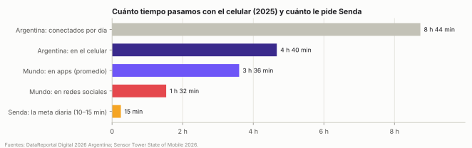
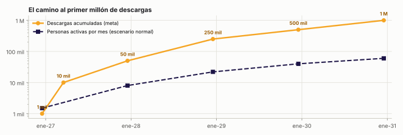

El proyecto completo de la app · v2
Una app cristiana para que los jóvenes conozcan la Biblia jugando, leyendo y en comunidad, con nivel profesional: nada infantil, nada aburrido. Gratis para leer y aprender; en español de origen; Android e iOS primero y la web después.
Este documento es el proyecto completo de Senda, versión 2: qué es, por qué existe, qué hace cada parte, cómo se ve y se escucha, cómo se construye, cuánto cuesta, cómo se sostiene y en qué orden se hace. La versión 1 (30-09-2026) quedó guardada en el repositorio; esta incorpora todas tus correcciones del 02-10-2026 y lo que hizo falta cambiar alrededor de ellas para que el proyecto siga siendo coherente.
Tus 16 decisiones están en el capítulo 31; el diseño emocional que pediste sumar es el capítulo nuevo 20; la respuesta sobre la RVR1960 está en el capítulo 7; y el desarrollo ya empezó (sprint 0, con vista previa para el celular).
| # | Lo que marcaste | Qué cambió | Dónde |
|---|---|---|---|
| 1 | Encuestas para conocer a la comunidad cristiana; llevar a los cristianos de las redes a la app para desintoxicarse; todo lo que genere comunidad | Nace Pulso (encuestas del día, del grupo y de estudio, con un informe anual) y un plan concreto contra el scroll: Primero la Palabra, Ayuno de redes, Estados y una caja de herramientas de comunidad | 14 |
| 2 | Calendario con actividades semanales, útil para gestionar, con eventos, copas y ligas en vivo; acercarlo en el tiempo | Calendario en tres capas (Senda, el tuyo y el de tu grupo o iglesia), con turnos, asistencia e invitaciones para compartir. Entra en el MVP (diciembre de 2026) | 13 |
| 3 | Vidas tipo Duolingo para seguir jugando y avanzando; en los juegos, clave; videos o suscripción cuando se acaban | Un sistema de vidas para la Travesía y los juegos, con reglas claras de qué cuesta una vida, cómo se recupera y qué cambia con cada plan | 17 |
| 4 | Reina-Valera por defecto; NTV, NVI, TLA y DHH como alternativas; cómo se licencian | Reina-Valera por defecto (RV1909 libre desde el día 1 y RVR1960 en cuanto esté la licencia); las cuatro clásicas con licencia; tres caminos de licencia explicados paso a paso, con costos | 7 |
| 5 | Sacar el botón que manda a otra app | Eliminado (también el enlace a videos externos) | 7 |
| 6 | «Camino» aburrido; que atrape; investigar Duolingo; que sea enorme, casi infinito; Fundamentos y después más niveles y rutas; todo antes de 2028, idealmente junio de 2027 | Travesía: varias Rutas que se eligen como idiomas (Fundamentos, Héroes, Mapas, Preparados, Profecías y más), niveles Fundamentos → Profundo → Maestría, Repaso del día infinito. Fundamentos completa el 30-06-2027 | 8 |
| 7 | Lani muy bien, pero con reacciones y movimientos tipo búho de Duolingo; cuidado con lo infantil y lo muy femenino | Lani v2: proporciones menos «bebé», actitud, humor, 30 reacciones, neutra para que todos se identifiquen, personalizable (Tu Lani) y una prueba con jóvenes antes de aprobarla | 16 |
| 8 | No a una app infantil o aburrida | Principio número 1 del producto; lista de control «anti-infantil»; riesgo número 1 del proyecto | 2, 19, 28 |
| 9 | UX/UI: prioridad absoluta; las pantallas de la v1 eran un modelo pobre; mirar Candy Crush; colores, explosiones, gestos, sonidos, todo integrado | El capítulo de experiencia se reescribe con una definición medible de «profesional», catálogo de efectos («jugosidad»), coreografía de cada momento y pantallas nuevas | 19 |
| 10 | Colores: me gustan, pero que no parezcan banco, app de administración, jueguito ni cambalache; investigar y elegir | Evaluación con benchmark y psicología del color: se mantiene el ámbar, el azul marino pasa a índigo (deja de parecer banco) y se prueban 3 paletas con jóvenes antes de decidir | 19 |
| 11 | Las 6 categorías de la armadura: buena idea mal lograda; nombres e íconos pobres; tipo Preguntados (4 opciones, imágenes); el escudo de la fe no es solo AT; ¿copia o mejora? | Categorías nuevas que cruzan AT y NT (Héroes, Palabra, Historia, Vida, Verdad, Mapa), piezas con nombres cortos (Escudo, Espada, Casco, Coraza, Cinturón, Botas), íconos de juego, preguntas con imagen, la armadura que se completa arriba a la derecha y mejoras propias sobre Preguntados | 9 |
| 12 | Comodines: ¿iguales a Preguntados? benchmark; videos, publicidad y comodines extra con suscripción | Benchmark de comodines (Millonario, Preguntados, Kahoot, HQ, Candy Crush) y 6 comodines, dos propios (Pista y Tribuna), con videos, suscripción e invitaciones como fuentes | 9 |
| 13 | Poder elegir varias categorías u opciones, como idiomas | Se eligen y se combinan Rutas; cada una con su progreso, como los cursos de Duolingo | 8 |
| 14 | Juegos de la página 35: la mejor versión de cada uno, rivales al azar o de tus contactos, comunidad; Dibujalo con historias y personajes; «El Impostor» choca con la filosofía | Cada juego revisado; rivales al azar, amigos, grupo o rival de la liga; Dibujalo exprés por turnos; El Impostor pasa a ser Oveja Perdida (Lucas 15) | 10 |
| 15 | Juegos + Senda Púlpito: que el pastor cargue algo para su iglesia | Desafío del domingo: el pastor arma un juego con su mensaje y lo comparte con su iglesia | 12 |
| 16 | Liga Senda Apertura y Clausura, nacional, una internacional con otro nombre, eliminatorias y grupos; por persona, no por iglesia | Liga por persona: cada uno es un club con escudo; divisiones, zonas, ascensos, descensos y playoffs; Copa Senda, Supercopa y Copa Continental | 11 |
| 17 | Viernes de Espadeo: muy bueno; sumar más cosas así | La semana Senda: una cita fija para cada día, más torneos del mes y temporadas | 11 |
| 18 | Sacar el Prode del Mundial 2030 | Eliminado de todo el proyecto | — |
| 19 | Senda Reunión: no una IA que arme la reunión, sino recursos para que el líder la arme | Rehecha como caja de herramientas del líder: él arma el esquema (bosquejo, quiz tipo Kahoot, juegos, campeonato, liga, algo del día), juega en vivo y después ve registros, puntajes y un reporte mensual. Sin IA que prepare nada | 12 |
| 20 | Berea: una sección con un personaje, no un asistente de IA | Berea es la sección de planes, desafíos, memoria y biblioteca, guiada por Lani en modo explorador. No hay IA para preguntarle cosas | 15 |
| 21 | Todo lo que difunda: compartir estados, triunfos, logros | Capítulo nuevo de crecimiento dentro de la app: tarjetas para historias y estados, invitaciones que premian, enlaces de desafío | 22 |
| 22 | Que todo sume puntos; canjes que enganchen (avatares, una moto, un auto para Lani) | Todo suma Pasos y Talentos; tienda de Tu Lani con atuendos, vehículos (bici, moto, auto y legendarios como el carro de fuego) y el escudo de tu club | 17, 18 |
| 23 | Revisar la economía de la página 49 para sacar rentabilidad sin romper la experiencia | Economía rediseñada: tres monedas, vidas, comodines, Pase Senda y un mapa de dónde aparece un video o el plan, y dónde nunca | 17 |
| 24 | Las insignias, muy bien | Se profundizan: rarezas, colecciones, secretas, de temporada y de grupo | 17 |
| 25 | Los planes no deben quedar totalmente libres de videos; más alternativas de membresía, bien pensadas y equilibradas | Benchmark y teoría de membresías; Gratis, Plus, Max, Familia, Pase Senda, Líder e Iglesia; los planes dan más, no todo | 24 |
| 26 | El módulo tipo Duolingo con opciones y profundidad | Igual que los puntos 6 y 13 | 8 |
| 27 | ¿Hace falta un abogado? ¿No podemos hacer nosotros todas las políticas? | Análisis documento por documento: no hace falta para lanzar; Claude redacta todo; solo se sugiere una revisión puntual y opcional en dos casos | 26 |
| 28 | Adelantar el calendario general: más en menos tiempo, lo principal en junio de 2027 | Roadmap comprimido; palancas para acelerar | 30 |
| 29 | ¿De dónde salen los USD 1.000 iniciales? Máximo nivel profesional sin derrochar; opciones mientras avanzamos | Se explica el número y se reemplaza por un menú de calidad en tres niveles por área, con tramos y decisiones en cada paso | 29 |
| 30 | Objetivo general: experiencia profesional sin perder de vista los costos | Atraviesa todo el documento; el capítulo 25 dice qué hace falta, más allá del código, para llegar a ese nivel | 19, 25, 29 |
| + | El nombre «El Rosco» pertenece a un programa de TV | Confirmado: es un formato protegido y con marca. Pasa a llamarse Abecé y cambia la mecánica | 10 |
| + | «Maná del día» suena muy de iglesia: nombres atrapantes, modernos y para merch, sin perder la esencia (como Senda) | Nueva regla de nombres con 6 pruebas aplicada a todo: Giro diario, De memoria, Antes o después, Oveja Perdida, Abecé y más | 16 |
conocimiento/2026-09-30-proyecto-senda-investigacion.md y conocimiento/2026-10-02-senda-v2-investigacion.md.Senda es una app cristiana para que los jóvenes conozcan la Biblia jugando, leyendo y en comunidad, con la calidad de las mejores apps del mundo. Junta en un solo lugar, en español de origen, lo que hoy está repartido en cinco apps en inglés.
Cada etapa prueba una hipótesis y tiene una condición para seguir. La primera regla de corte es el 30 de abril de 2027 (capítulo 30).
Las 16 decisiones ya están tomadas (capítulo 31) y el desarrollo empezó el 05-10-2026. Ahora: probar cada vista previa desde el celular, crear el repositorio de la app, verificar el nombre, elegir 2 revisores y 12 testers y abrir Google Play a más tardar el 15-11. Todo gasto y toda publicación salen con tu aprobación.
En pocas palabras. Senda es una app cristiana para que los jóvenes conozcan la Biblia jugando, leyendo y en comunidad. Junta en un solo lugar lo que hoy está repartido en cinco apps (la mayoría en inglés): una Biblia gratis con comentarios, una Travesía de niveles tipo Duolingo, una trivia tipo Preguntados con la armadura de Dios, juegos para jugar con amigos y en la reunión de jóvenes, una liga por persona con Apertura y Clausura, un calendario para la vida de la iglesia y herramientas para líderes y pastores. Tiene que sentirse como una app profesional de primer nivel: ni infantil ni aburrida.
Una generación entera pasa entre cuatro y cinco horas por día con el celular en la mano (capítulo 3). Senda existe para que una parte de ese tiempo sirva para conocer las Escrituras, crecer y conectarse con otros creyentes, con una experiencia tan buena como la de las mejores apps del mercado, y para ganarle terreno a lo que no deja nada.
Ayudar a cada joven a conocer, amar y vivir la Palabra de Dios todos los días, con una experiencia alegre y excelente, en comunidad, gratis y en su idioma, y ser la app que mejor edifica a los jóvenes.
| Palabra | Qué obliga a hacer |
|---|---|
| Conocer | Aprendizaje medible: niveles, preguntas con cita, repaso de lo que se olvida |
| Amar | Que la experiencia sea linda y no una obligación; nada de culpa ni presión |
| Vivir | Cada lección termina con algo para aplicar; la app empuja a la iglesia real, no la reemplaza |
| Todos los días | Hábito: racha, versículo del día, la semana Senda, avisos respetuosos |
| Alegre y excelente | Diseño, animación y sonido al nivel de Duolingo, Preguntados y Candy Crush; nada infantil |
| En comunidad | Amigos, grupos, Liga, calendario, reuniones, encuestas |
| Gratis | La Biblia y el contenido nunca se cobran y la Biblia nunca tiene publicidad |
| En su idioma | Español primero; portugués e inglés en 2028; después más idiomas |
| Que mejor edifica | La gamificación está al servicio de edificar, nunca al revés |
Ser la app cristiana número uno del mundo de habla hispana y portuguesa —la más descargada y la que mejor edifica a los jóvenes—: un ecosistema donde la Biblia se lee, se aprende, se juega y se vive en comunidad, y una generación de jóvenes que conoce las Escrituras.
Cómo sabremos que vamos hacia ahí (metas, no promesas):
| Año | Señal de que la visión avanza |
|---|---|
| 2027 | 50 mil descargas; 8 mil personas activas por mes; 50 grupos usando Senda Reunión cada semana; primera Liga Apertura y Clausura |
| 2028 | 250 mil descargas; versión en portugués y en inglés; primera Copa Continental |
| 2030 | 1 millón de descargas; 60 mil personas activas por mes; 500 iglesias con plan; top 10 de apps de libros y referencia en Latinoamérica |
| 2035 | La app cristiana de referencia para jóvenes en español y portugués |
Que cada semana la mayor cantidad posible de jóvenes abra la Biblia al menos tres días y la conozca un poco más.
Es el indicador que manda (la «estrella del norte»): personas que tuvieron al menos tres días con la Palabra en la semana. Se mide solo, no se puede inflar con trucos (abrir la app no alcanza: hay que leer, escuchar o completar una lección) y resume la misión. Las descargas importan como medio, no como fin. En la v2 este indicador entra también en la Liga: cumplir 3 días con la Palabra en la semana suma un punto extra en el partido de la fecha (capítulo 11).
| Cuándo | Objetivo | Cómo se mide |
|---|---|---|
| Dic-2026 | App publicada en Android y iOS antes de Navidad, con calendario, lista para el desafío de 21 días | Publicada; 1.000 descargas |
| Ene-2027 | Desafío de 21 días con 500 participantes; primer Viernes de Espadeo | Personas que completan 7+ días |
| Mar-2027 | Grupos y Senda Reunión andando antes de Semana Santa | Grupos activos por semana |
| Abr-2027 | Arranca la Liga Apertura; 1.000 personas por semana con 3+ días con la Palabra; 10% que vuelve a la semana siguiente | Tablero semanal (regla de corte) |
| Jun-2027 | Ruta Fundamentos completa (toda la Biblia), Púlpito y herramientas de iglesia | Publicadas |
| Jul-2027 | 50 grupos usan Senda Reunión cada semana; Copa Senda de invierno | Salas por semana; participantes |
| Dic-2027 | 50 mil descargas; 8 mil activos por mes; la app cubre sus costos | Tiendas, analítica, ingresos |
| Mar-2028 | Senda en portugués (Brasil) | Publicada |
| Dic-2028 | 250 mil descargas; 22 mil activos por mes; 120 iglesias con plan | Tiendas, analítica |
| Dic-2030 | 1 millón de descargas; 60 mil activos por mes; 500 iglesias con plan | Tiendas, analítica |
Senda es una app gratuita para Android y iOS (con salas desde el navegador a fines de 2027 y web completa en 2028) con cinco pilares:
Se sostiene con planes baratos y escalonados (Plus, Max, Familia, Pase Senda, Líder e Iglesia), videos opcionales en los juegos y compras de cosas para Tu Lani. La Biblia y el contenido siempre son gratis; la Biblia, además, sin publicidad.
| Público | Qué necesita | Qué le da Senda |
|---|---|---|
| Jóvenes de 13 a 30 años (principal) | Algo que enganche como sus juegos, que no sea infantil y que los conecte con sus amigos | Travesía, Espadeo, juegos, Liga, Tu Lani, amigos |
| Líderes de jóvenes y maestros (el canal que multiplica) | Armar la reunión de cada semana con recursos que les ahorren tiempo, y ver cómo va el grupo | Senda Reunión (armador, quiz, juegos, registros), calendario del grupo |
| Pastores e iglesias | Que la gente lea en la semana, que el mensaje del domingo no se pierda y organizar las actividades | Senda Púlpito (Desafío del domingo), calendario de la iglesia, encuestas |
| Adultos que quieren leer y aprender | Una buena Biblia con comentarios, audio y planes | La Biblia completa, el «+», Berea |
| Padres (desde 2028) | Que los chicos aprendan la Biblia en un lugar seguro | Modo familia con control parental |
Personas tipo (para diseñar pensando en alguien concreto):
En pocas palabras. El celular ya es el lugar donde los jóvenes pasan la mayor parte de su tiempo libre, y buena parte de ese tiempo se va en contenido que no deja nada. Pedir «usalo menos» no alcanza: el diseño de las apps está hecho para retener. Senda toma las mismas herramientas (juego, hábito, comunidad) y las pone al servicio de algo que edifica, con límites éticos escritos, y además ofrece herramientas concretas para ganarle minutos al scroll (capítulo 14).
| Dato | Fuente (fecha) |
|---|---|
| En Argentina se pasan 8 h 44 min por día conectados; 4 h 40 min en el celular (53,5% del total) | DataReportal, Digital 2026 (fin de 2025) |
| En Argentina el 90,6% usa internet y el 96,8% de ellos entra desde el celular; hay 32,9 millones de identidades en redes sociales | DataReportal, Digital 2026 |
| En el mundo, cada usuario pasa 3,6 horas por día en apps; en 2025 se sumaron 5,3 billones de horas | Sensor Tower, State of Mobile 2026 |
| Las redes sociales se llevan casi 2,5 billones de horas por año: más de 90 minutos por día por usuario, muy por encima de cualquier otra categoría | Sensor Tower, State of Mobile 2026 |
| En EE.UU., casi la mitad de los adolescentes de 13 a 17 años dice estar conectada «casi todo el tiempo» (hace diez años era el 24%) | Pew Research Center (encuesta sep–oct 2024, publicada dic-2024) |
| Un estadounidense revisa el celular 186 veces por día, una vez cada 5 minutos despierto | Reviews.org (2026; 205 en 2025) |

El orden es parecido en todo el mundo: redes sociales y video corto primero, después mensajería, video largo (YouTube) y juegos. En 2025, por primera vez, la gente gastó más plata en apps que en juegos, empujada por la IA (Sensor Tower). Entre los adolescentes de EE.UU., YouTube lo usa el 90% y lo abre a diario el 73%; TikTok el 63% (Pew, 2024).
INFERENCIA: el tiempo de pantalla no va a bajar a cero. La pregunta útil es qué hay dentro de esas horas.
| Dato | Fuente |
|---|---|
| El 60% de los jóvenes de 13 a 21 años dice que su generación pasa demasiado tiempo con pantallas; un adolescente usa el celular unas 5 h 15 min por día | Barna Group (citado por movieguide.org y christianpost.com) |
| El 85% de los pastores está preocupado por el tiempo de pantalla de los jóvenes, pero el 86% dice que su iglesia no tiene un plan para enseñar un uso sabio de la tecnología | Barna Group |
| Los adolescentes comprometidos con leer la Escritura muestran más discernimiento con sus dispositivos y mejor salud emocional | Barna Group (christianpost.com) |
| Ya hay apps cristianas que muestran un versículo antes de abrir Instagram o TikTok (Psalmo, Prayin): la necesidad existe y la gente la paga | App Store (consulta del 02-10-2026) |
INFERENCIA: los jóvenes cristianos saben que usan demasiado el celular y las iglesias no tienen herramientas para ayudarlos. Senda puede ser esa herramienta: no con sermones sobre la pantalla, sino con algo mejor para hacer en ella y con funciones concretas para cortar el scroll (capítulo 14).
El celular es el lugar donde los jóvenes ya están: ahí hablan, estudian, juegan y se informan. Sacarlo del todo es inviable para la mayoría. La alternativa realista es ocupar ese lugar con algo mejor: una app que use las mismas herramientas que enganchan (juego, progreso, comunidad) para algo que edifica, y que además se retire a tiempo (que te mande a vivir lo aprendido).
| Teoría o evidencia | Qué dice | Cómo la aplica Senda |
|---|---|---|
| Teoría de la autodeterminación (Deci y Ryan) | La motivación sana nace de tres necesidades: autonomía (elegir), competencia (sentir que avanzo) y vínculo (pertenecer) | Elegís tu camino y tu meta diaria; el progreso se ve; se juega con amigos, el grupo y la iglesia |
| Práctica de recuperación («testing effect», Roediger y Karpicke, 2006) | Responder preguntas fija más que releer | La Travesía y Espadeo hacen preguntas; no solo muestran texto |
| Repetición espaciada (curva del olvido de Ebbinghaus) | Repasar justo antes de olvidar fija a largo plazo | Repaso inteligente de lo que fallaste y de los versículos para memorizar |
| Hábitos pequeños (modelo de Fogg: conducta = motivación × facilidad × disparador) | Un hábito se instala si es fácil y tiene un disparador diario | Lecciones de 3 a 5 minutos, versículo del día, un aviso a la hora que elegís |
| Flujo (Csikszentmihalyi) | Se disfruta cuando el desafío está a la altura de la habilidad | Dificultad que se adapta a cada uno |
| Evidencia de Duolingo | Quien llega a 7 días de racha retiene 2,4 veces más; las ligas subieron 17% el tiempo de estudio; con una racha compartida con un amigo, 22% más chances de cumplir la lección del día | Racha (también compartida), Liga y misiones en dupla, con límites éticos |
| Jugosidad («juice», Jonasson y Purho, 2012) | Los pequeños efectos (rebotes, partículas, sonidos, sacudidas) hacen que una interacción se sienta viva y satisfactoria | Cada momento de la app tiene su coreografía de imagen, sonido y vibración (capítulo 19) |
| Tecnología humana (Center for Humane Technology) | Medir el éxito por el bien que deja, no por el tiempo que roba | Sin feed infinito, límite diario opcional, avisos respetuosos, día de reposo |
Senda no inventa el principio; lo toma de la Biblia:
Tres verbos resumen el enfoque: edificar (formar la fe con la Palabra), crecer (avanzar un poco cada día) y conectar (con Dios, con amigos, con la iglesia).
| Dato | Fuente |
|---|---|
| YouVersion superó 1.000 millones de instalaciones (oct-2025); los 10 días de más uso de su historia fueron en 2026 (Pascua: 21,6 millones de personas) | youversion.com, bitácora 28-09-2026 |
| En EE.UU., la generación Z es la que más dice haber aumentado su lectura de la Biblia (21% más contra 9% menos en 2024); el repunte de 2025 retrocedió en 2026 | American Bible Society, State of the Bible |
| En el Reino Unido, la asistencia mensual a la iglesia de los jóvenes de 18 a 24 años habría pasado del 4% al 16% entre 2018 y 2024 (varones: del 4% al 21%). Otros encuestadores lo discuten | Bible Society, The Quiet Revival (abr-2025) |
| Evangélicos: 17,4% de los argentinos (UBA 2026), 19% de los latinoamericanos, 26,9% de los brasileños (47,4 millones) y ~21% de los hispanos de EE.UU. | UBA, Latinobarómetro 2024, IBGE, Pew |
INFERENCIA: hay una generación con tiempo de pantalla alto, señales de agotamiento con lo trivial y curiosidad por la Biblia, en una comunidad evangélica de decenas de millones que habla español y portugués. Lo que falta es una experiencia a su altura, en su idioma.
| Problema | Compromiso de diseño |
|---|---|
| Feed infinito | No hay feed de contenido infinito; cada sesión tiene un final claro |
| Recompensas al azar pagas | Los cofres se ganan jugando; nunca se venden por plata |
| Culpa y ansiedad | Notificaciones amables, una por día como máximo, ninguna de noche para menores |
| Racha que esclaviza | Día libre semanal, protectores y forma de recuperarla leyendo más |
| Tiempo sin fin | Límite diario opcional; después de 45 minutos de juego, una sugerencia de pausa; vidas que ponen un ritmo |
| Scroll en otras apps | Primero la Palabra (un versículo antes de abrir la red elegida) y el Ayuno de redes en grupo |
| Soledad | Todo lo social es con amigos, grupo o iglesia; con desconocidos solo se juega (sin chat) |
| Contenido trivial | Todo lleva a un pasaje bíblico; cada lección termina con algo para vivir |
En pocas palabras. Miramos más de 40 apps, juegos y herramientas en siete familias. Los mejores resuelven una parte cada uno: YouVersion la lectura, Duolingo el hábito y el aprendizaje infinito, Preguntados el duelo con amigos, Candy Crush la sensación de juego, Kahoot el juego en grupo, el fútbol la liga, Planning Center la organización de la iglesia. Nadie junta todo en español, para jóvenes, con su iglesia y con nivel de juego profesional. Ese es el hueco de Senda.
Siete familias de referencias; para cada una: qué hace muy bien, qué le falta y qué tomamos. Los datos tienen fuente en las bitácoras del 28-09, 30-09 y 02-10-2026. Se aplica el método MercadoLibre → eBay: copiar lo que ya probó que la gente usa, mejorarlo y ganar con lo local (idioma, cultura, iglesia).
| App | Lo que hace muy bien | Lo que le falta | Qué tomamos |
|---|---|---|---|
| YouVersion (1.000 M+ instalaciones; sin fines de lucro) | Lectura en 2.000+ versiones, planes con amigos, versículo del día, imágenes, rachas | Poco juego; aprendizaje pasivo; nada para la reunión ni para competir | Planes con amigos, imágenes para compartir. Y YouVersion Platform (dic-2025): su tecnología y sus licencias abiertas a otras apps, un posible camino para las versiones con derechos (capítulo 7) |
| MyBible (gratis) | Módulos descargables de comentarios, diccionarios y referencias; marca junto al versículo; vista en paralelo | Interfaz técnica, poco amigable para jóvenes | El «+» por versículo, la vista en paralelo en tablet y los paquetes descargables, solo con contenido libre |
| Bible Gateway / Logos | Buscador y estudio profundo | Logos es caro; Bible Gateway es web y en inglés | Búsqueda rápida y diccionario integrado |
| Dwell / Bible.is | Biblia narrada con buenas voces | Dwell es pago; el audio gratuito de Faith Comes By Hearing prohíbe apps con cobro | Audio de la Biblia propio, con voz neuronal de calidad |
| BibleProject | Videos excelentes por libro | Sus términos no permiten alojarlos ni lucrar | Nada por ahora: no mandamos a la gente fuera de la app |
| App | Lo que hace muy bien | Lo que le falta | Qué tomamos |
|---|---|---|---|
| Duolingo (más de 100 M de usuarios por mes desde 2024) | Camino de secciones, unidades y lecciones; se eligen varios cursos; al terminar un curso se abre Daily Refresh (6 niveles nuevos por día armados con lo ya visto): no se termina nunca; legendario; ligas de 30 con ascensos y descensos; racha con amigos (+22% de lecciones cumplidas) y misiones en dupla; Duo con personalidad propia | En 2025 cambió los corazones por Energía (cada ejercicio gasta): hubo rechazo público; notificaciones que culpan | La Travesía con Rutas que se eligen como idiomas, el Repaso del día infinito, legendario, racha compartida, misiones en dupla y una mascota con actitud. Vidas que se pierden solo por error o al empezar partida, no por cada ejercicio |
| Ascend, Manna, Bible Way (inglés) | «Duolingo de la Biblia» con rachas | En inglés, cortos, sin comunidad | Confirma la demanda; en español no hay equivalente |
| Remember Me (2 M+ descargas) | Memorización con repetición espaciada | Interfaz austera | De memoria (capítulo 15) |
| Anki | El mejor algoritmo de repaso | Nada amigable | El algoritmo de repaso (FSRS) por dentro |
| App o juego | Lo que hace muy bien | Lo que le falta | Qué tomamos |
|---|---|---|---|
| Preguntados (Etermax, Buenos Aires; 600 M+ descargas) | Ruleta de 7 casillas; cada categoría es un personaje (Tito es Geografía); 3 aciertos para jugar por un personaje; 4 comodines (tiempo, bomba, doble oportunidad, saltar); preguntas con imagen; en Preguntados 2, 3 vidas (cada partida nueva gasta una; vuelve 1 por hora) | No es bíblico | La estructura del duelo con identidad fuerte por categoría (las piezas de la armadura), preguntas con imagen y vidas por partida; y mejoras propias (capítulo 9) |
| Candy Crush (King) | La referencia de «jugosidad»: colores saturados, explosiones, cascadas, sonidos que suben de tono, voces que celebran; 5 vidas, 1 cada 30 min, pedir vidas a amigos | — | La coreografía de cada momento, el sonido que crece con la racha de aciertos y pedir y regalar vidas |
| Clash Royale / Brawl Stars (Supercell) | Estética que atrae a adolescentes sin ser infantil: botones gruesos, metales y brillos, personajes con actitud; pase de temporada | Agresivos con la monetización | El tono visual de la Arena y el Pase Senda por temporada, sin cajas pagas |
| Kahoot | Quiz en vivo en pantalla grande, se entra con un código; el anfitrión arma sus preguntas | Gratis solo hasta 10 jugadores; planes de USD 19–79 por mes | El armador de quiz del líder en Senda Reunión: gratis hasta 20 jugadores, con Líder hasta 200 |
| Jackbox / Gartic Phone | El celular como control y la pantalla compartida; dibujar y adivinar en cadena | Pagos, no bíblicos | Dibujalo en sala y el Teléfono bíblico |
| Draw Something (2012) | Duelos de dibujo por turnos entre amigos: el otro ve cómo dibujaste, trazo por trazo | Se agotó sin comunidad ni contenido nuevo | Dibujalo exprés por turnos |
| El Impostor (viral en Argentina, 2025) | Todos saben la palabra menos uno | El nombre choca con la propuesta de Senda | El juego, rebautizado Oveja Perdida (Lucas 15) |
| Pasapalabra | Formato muy conocido | «El Rosco» es un formato protegido (Tribunal Supremo de España) y una marca de terceros | Una rueda de letras distinta, con otro nombre: Abecé |
| ¿Quién quiere ser millonario? | Los comodines más conocidos: 50:50, llamar a un amigo, preguntar al público, cambiar la pregunta, doble intento | — | Tribuna (cómo respondió la comunidad) y la lógica de cada comodín |
| HQ Trivia | Trivia en vivo a hora fija; vida extra por cada amigo que se suma con tu código | Murió por repetitiva y por premios en plata | El Viernes de Espadeo en vivo (sin plata) y las vidas por invitar |
| Wordle | Un desafío por día, compartible sin spoilers | — | Palabra del día y Desafío del día |
| Sword drill (espadeo de las iglesias) | Competir por encontrar citas; recitar | Solo presencial | ¡Desenvainá!, dentro de Espadeo y en vivo en Senda Reunión |
| Referencia | Lo que hace muy bien | Qué tomamos |
|---|---|---|
| Fútbol argentino 2026 | Apertura y Clausura; dos zonas de 15; 16 fechas; playoffs con los 8 mejores de cada zona | El formato de la Liga Senda, con cada persona como un club |
| Ligas de Duolingo | 30 personas, ascensos y descensos cada lunes, 10 divisiones, torneo final | Divisiones por nivel y movimiento entre ellas |
| Gran DT y los prodes | Ligas privadas entre amigos, fecha semanal, tabla | Ligas privadas de amigos y de grupo |
| Promiedos | Fixture, resultados y tabla simples | Pantalla de la liga clara y rápida |
| Pokémon GO | Días de comunidad con fecha que mueven a todos juntos | La semana Senda y los desafíos con fecha |
| Strava | Clubes y desafíos grupales | Metas compartidas del grupo |
| Herramienta | Lo que hace muy bien | Lo que le falta para una iglesia latina | Qué tomamos |
|---|---|---|---|
| Google Calendar | Eventos que se repiten, invitaciones, recordatorios; lo usan todas las organizaciones | No sabe qué es un grupo de jóvenes ni una reunión con juegos | Eventos repetitivos y agregar al calendario del teléfono con un toque |
| Planning Center (EE.UU.; más de 85.000 iglesias) | Calendario, salas, turnos de servicio y la app para miembros Church Center | En inglés, pago y pensado para iglesias grandes | Turnos («quién dirige, quién lleva qué»), asistencia y la vista para miembros |
| Partiful (500 mil activos por mes en 2025, +400%) | Invitaciones con diseño divertido que la generación Z comparte | No es para iglesias | Invitaciones lindas para compartir por WhatsApp e Instagram |
| WhatsApp (comunidades y eventos) | Donde ya está la iglesia | No ordena: los avisos se pierden en el chat | Que cada evento de Senda se comparta al grupo de WhatsApp |
| Doodle / When2meet | Encontrar la fecha que le sirve a todos | — | Votar la fecha de un evento |
| Referencia | Qué tomamos |
|---|---|
| Hallow (Pray40 llevó la app al #2 del App Store) | Desafíos de temporada con fecha |
| Psalmo, Prayin (versículo antes de abrir Instagram o TikTok) | Primero la Palabra, dentro de Senda y con el grupo (capítulo 14) |
| Bible Chat, Pulpit AI | Nada de su IA: Senda no tiene un asistente para preguntarle ni arma el contenido del pastor |
| Headspace | La calma visual para la zona de lectura |
| Finch (mascota que crece con tus hábitos; la adoptan adultos jóvenes) | Que la mascota sea tuya y se personalice: Tu Lani |
| Spotify Wrapped | Tu año en Senda: resumen compartible en diciembre |
| Locket | El versículo en el widget, a la vista todo el día |
| Función | YouVersion | Duolingo | Preguntados | Kahoot | Planning Center | Senda |
|---|---|---|---|---|---|---|
| Biblia completa gratis, sin anuncios | ✓ | — | — | — | — | ✓ |
| Comentarios con «+» en español | — | — | — | — | — | ✓ |
| Ruta de niveles infinita con repaso | — | ✓ | — | — | — | ✓ |
| Duelo por turnos con amigos y rivales al azar | — | parcial | ✓ | — | — | ✓ |
| Quiz en vivo armado por el líder (20–200) | — | — | — | pago | — | ✓ |
| Liga por persona con temporadas y copas | — | parcial | — | — | — | ✓ |
| Calendario de iglesia con turnos y asistencia | — | — | — | — | ✓ (inglés, pago) | ✓ |
| Encuestas a la comunidad | — | — | — | parcial | — | ✓ |
| Mascota propia personalizable | — | — | — | — | — | ✓ |
| Herramientas para cortar el scroll | — | — | — | — | — | ✓ |
| En español de origen | traducido | traducido | ✓ | traducido | — | ✓ |
En pocas palabras. Primero la app, para Android y iOS a la vez (una sola base de código), publicada en todo el mundo desde el primer día en español. A fines de 2027 se podrá entrar a una sala desde el navegador; portugués, inglés y la web completa llegan en 2028. Público principal: de 13 años en adelante; chicos más chicos solo después, con modo familia y control de los padres.
| Etapa | Idiomas | Mercados | Biblias |
|---|---|---|---|
| Etapa 1 (dic-2026 → 2027) | Español neutro, con variantes locales de algunas palabras y juegos | Toda Latinoamérica, hispanos de EE.UU. y España. La app se publica en todas las tiendas del mundo desde el día 1 | Reina-Valera (RV1909 libre; RVR1960 con licencia), NTV, NVI, DHH y TLA con licencia; Español Sencillo y Palabra de Dios para ti libres (ya en la app) |
| Etapa 2 (2028) | Portugués (Brasil, marzo) e inglés (segundo semestre) | Brasil (47,4 M de evangélicos), Portugal, EE.UU. y el mundo anglófono | Libres (Nova Bíblia Viva, Bíblia Livre; BSB, KJV, WEB) y las más usadas con licencia |
| Etapa 3 (2029 en adelante) | Francés y otros según datos | Donde ya haya descargas espontáneas | eBible.org y YouVersion Platform cubren cientos de idiomas |
Criterios para abrir un idioma: (1) Biblias disponibles (libres o con licencia accesible), (2) 5% o más de las descargas ya vienen de esa región y (3) al menos un revisor nativo para lo doctrinal.
| Plataforma | Cuándo | Cómo |
|---|---|---|
| Android (teléfonos y tablets) | Lanzamiento, dic-2026 | Misma base de código (React Native con Expo) |
| iOS (iPhone y iPad) | Lanzamiento, dic-2026 | Misma base de código; se compila en la nube, sin necesidad de una Mac |
| Páginas web mínimas | Desde oct-2026 | Sitio, privacidad, páginas de cada logro o desafío compartido (atraen visitas desde Google y llevan a la tienda) |
| Entrar a una sala desde el navegador | v3 (oct–nov 2027) | Que un chico sin la app pueda jugar en la reunión con un código; después se le propone instalar |
| App web completa | 2028 | Jugar y estudiar desde la computadora; proyectar Senda Reunión desde una notebook |
| Widgets (Android e iOS) | v1 (2027) | Versículo del día, racha y el próximo evento del calendario |
| Relojes, TV, asistentes de voz | Fuera de alcance por ahora | Se evalúan en 2029 |
| Franja | Qué puede hacer | Por qué |
|---|---|---|
| Menores de 13 | Al lanzamiento no pueden crear cuenta (pantalla de edad neutral). Desde 2028: modo familia con consentimiento de los padres | Las reglas de las tiendas y de varios países exigen consentimiento parental y anuncios certificados |
| 13 a 15 | Todo lo de aprendizaje, juego y liga (en su franja); amigos por código, QR o dentro de su grupo; rivales al azar solo de su franja; sin mensajes; anuncios no personalizados; encuestas sin temas sensibles | Protección de menores |
| 16 a 17 | Igual que 13–15, más buscar amigos por usuario, proponer preguntas y Estados con plantillas | Autonomía progresiva |
| 18 o más | Todo, incluidas las herramientas de líder y las encuestas de estudio | — |
Apple ofrece una API que informa la franja de edad sin pedir la fecha de nacimiento; se usa donde esté disponible.
| Pilar | Módulos | Lanzamiento |
|---|---|---|
| Leer | Biblia (versiones, audio, «+», notas, planes), racha, versículo del día | MVP y v1 |
| Aprender | Travesía: Ruta Fundamentos (toda la Biblia, completa en junio de 2027), Rutas temáticas (Héroes, Mapas, 66 Libros, Preparados, Profecías y más), Repaso del día, niveles Profundo y Maestría | MVP a 2028 |
| Jugar | Espadeo (duelos, Escuadra, ¡Desenvainá!, Desafío del día), Dibujalo, Oveja Perdida, Tutti Frutti, Abecé, ¿Quién soy?, ¡Prohibido!, Palabra del día, Antes o después, Giro diario | MVP a v3 |
| Juntos | Perfil y Tu Lani, amigos, grupos, calendario (Senda, personal y del grupo o iglesia), Liga Senda, Copas, la semana Senda, Pulso, Estados, Oremos, Senda Reunión, Senda Púlpito | MVP a v3 |
| Crecer | Berea: planes, desafíos con fecha, Ayuno de redes, De memoria, Primero la Palabra; Biblioteca (2028); Tu año en Senda | MVP a 2028 |
El detalle por versión está en el roadmap (capítulo 30).
| Requisito | Meta |
|---|---|
| Nivel visual | Cada pantalla pasa la «prueba de la grilla» (capítulo 19) antes de publicarse |
| Funciona sin conexión | Biblia, Travesía y juegos individuales andan sin internet; se sincroniza al volver |
| Celulares de gama baja | Fluido en Android 9 o más nuevo con 2 GB de RAM; efectos que se simplifican solos si el teléfono no da |
| Velocidad | Abre en menos de 2 segundos; cada toque responde en menos de 100 ms; animaciones a 60 cuadros por segundo |
| Tamaño | Menos de 80 MB para instalar; Biblias, audios y paquetes de imágenes se descargan aparte |
| Estabilidad | 99,5% o más de sesiones sin cierre inesperado |
| Accesibilidad | Contraste AA, letra ajustable, lector de pantalla, reducir movimiento, subtítulos, colores con forma o ícono |
| Privacidad | Datos mínimos; encuestas de estudio anónimas; se puede exportar y borrar la cuenta desde la app |
| Disponibilidad del servicio | 99,5% mensual; 99,9% durante eventos en vivo |
| Idiomas | Todo texto de la interfaz traducible desde el día 1 |
| Medición | Cada función nueva sale con sus eventos de analítica definidos |
En pocas palabras. Cinco pestañas: Inicio, Biblia, Travesía, Jugar y Comunidad. Arriba siempre se ven tus vidas, tu racha y tus Talentos; tu perfil (y Tu Lani) está en tu avatar. Todo se conecta: una lección te lleva al pasaje, una pregunta de Espadeo que fallaste vuelve en tu repaso, lo que hacés suma Pasos para la Liga y el Pase Senda, y el calendario te avisa del partido de la fecha y de la reunión del sábado.
| Pestaña | Para qué | Qué hay |
|---|---|---|
| Inicio | Lo de hoy, en una pantalla que termina | La tira del calendario (hoy y la semana), versículo del día, seguir la Travesía, misiones y cofre, Giro diario, duelos pendientes, la pregunta de Pulso, tu grupo |
| Biblia | Leer, escuchar y crecer | Leer (lector, versiones, audio, «+», notas) y Berea (planes, desafíos, De memoria, Ayuno de redes, Biblioteca) |
| Travesía | Aprender en orden, sin fin | Tus Rutas (Fundamentos, Héroes, Mapas…), el camino de niveles, el Repaso del día, la práctica de errores |
| Jugar | Jugar solo, con amigos o con el grupo | Espadeo, la Liga Senda y las Copas, el Viernes de Espadeo, los juegos y las salas |
| Comunidad | Estar con los tuyos | Amigos, tu grupo, el calendario, Oremos, Pulso, Estados; y para líderes y pastores, Senda Reunión y Senda Púlpito |
| Perfil (avatar) | Quién sos y cómo vas | Tu Lani (atuendos y vehículos), el escudo de tu club, insignias, estadísticas, tienda, plan y ajustes |
Por qué cinco: es el máximo que se lee de un vistazo en la barra inferior (ley de Hick) y separa los dos «climas» de la app: la Biblia es calma y Jugar es energía (capítulo 19). La pestaña Travesía cambió de nombre (antes «Camino») para sonar a aventura, no a deber (capítulo 16).
El de grupo es el más fuerte: cada reunión con Senda Reunión mete de 20 a 60 chicos a la app de una vez, y al día siguiente siguen en la Travesía y en la Liga. El de amigos convierte cada duelo, cada vida pedida y cada logro compartido en una invitación. El de temporada junta a todos en la misma fecha (21 días, Semana Santa, Apertura, Copa). Y el semanal (la semana Senda) le da a cada día una razón para volver.
El objetivo es que la persona sienta el valor y la calidad antes de registrarse.
En pocas palabras. Una Biblia completa, gratis y sin publicidad, con la Reina-Valera por defecto y como alternativas las versiones que más usan las iglesias (NTV, NVI, DHH y TLA) a medida que lleguen las licencias. Desde el primer día trae tres Biblias libres (RV1909, Español Sencillo y Palabra de Dios para ti). Se lee sin conexión y se escucha en voz alta. Al tocar el «+» de un versículo se abre una hoja con notas de estudio, comentarios clásicos, referencias y mapas, todo con licencia libre. No hay botones que manden a otras apps: todo pasa dentro de Senda. Acá vive también Berea (planes y desafíos, capítulo 15).
| Versión | Titular | Licencia | Rol en la app | Cuándo |
|---|---|---|---|---|
| Reina-Valera 1909 | — | Dominio público | Por defecto desde el día 1 hasta tener la RVR1960; después, alternativa clásica | Ya en la app (sprint 0) |
| La Biblia en Español Sencillo (BES) | AudioBiblia.org / Irma Flores | CC BY 4.0 | Alternativa en lenguaje simple y actual | Ya en la app |
| Palabra de Dios para ti (PDT) | Centro Mundial de Traducción de la Biblia | CC BY-SA 4.0 | Alternativa moderna | Ya en la app |
| Versión Biblia Libre (VBL) | Comunidad (eBible.org) | CC BY-SA 4.0 | Alternativa libre de reserva | Si los usuarios la piden |
| Reina-Valera 1960 | Sociedades Bíblicas Unidas (SBU); licencias por la American Bible Society | Con derechos y marca registrada | Versión por defecto en cuanto esté la licencia | Lanzamiento o v1, según la licencia (sección 2) |
| NTV (Nueva Traducción Viviente) | Tyndale House Foundation | Con derechos; licencia | Alternativa moderna y clara | v1 (feb–mar 2027) |
| NVI (Nueva Versión Internacional) | Biblica | Con derechos; licencia | Alternativa moderna | v1 |
| DHH (Dios Habla Hoy) | SBU | Con derechos; licencia | Alternativa en lenguaje popular | v1 |
| TLA (Traducción en Lenguaje Actual) | SBU | Con derechos; licencia | Alternativa para nuevos creyentes y chicos | v1 |
| Portugués e inglés | Varios | Libres y con licencia | — | 2028 |
Por qué la Reina-Valera por defecto: es la que usa la mayoría de las iglesias evangélicas de habla hispana, la que se lee en voz alta el domingo y la que los jóvenes tienen en papel. Abrir Senda y encontrar «su» Biblia genera confianza. La RV1909 (dominio público) es casi idéntica en contenido y permite lanzar sin depender de nadie; la RVR1960 entra apenas se firme la licencia, y quien ya leía en 1909 elige si cambia.
Cómo verifican los juegos: las preguntas y lecciones se comprueban contra dos versiones (la Reina-Valera y una moderna) para que ninguna respuesta dependa de una traducción.
Por qué una Biblia tiene derechos: el texto original (hebreo, arameo y griego) es de todos, pero cada traducción o revisión moderna es una obra nueva que alguien hizo y financió. La RVR1960 es una revisión de 1960 hecha por las Sociedades Bíblicas; con las licencias, las sociedades bíblicas financian traducciones a otros idiomas. Por eso la RV1909 es libre (sus derechos vencieron) y la RVR1960 no.
Lo que se averiguó (05-10-2026, por buscador; a confirmar en la fuente):
| Dato | Qué dice | Qué significa para Senda |
|---|---|---|
| Titular | © Sociedades Bíblicas en América Latina, 1960; derechos renovados en 1988 por las Sociedades Bíblicas Unidas. «Reina-Valera 1960» es marca registrada y solo se usa con licencia | Ni el texto ni el nombre se pueden usar libremente |
| Uso sin permiso | Se pueden citar hasta 500 versículos sin permiso escrito, siempre que no sean la mitad de un libro, con el aviso «Texto bíblico: Reina-Valera 1960 © Sociedades Bíblicas en América Latina, 1960. Renovado © Sociedades Bíblicas Unidas, 1988. Utilizado con permiso» | Sirve para citar algunos versículos (por ejemplo en preguntas), no para tener la Biblia completa |
| Ley argentina | La Ley 11.723 (art. 8) da 50 años desde la publicación a las obras anónimas de personas jurídicas | HIPÓTESIS sin valor práctico: aunque en la Argentina pudiera discutirse que venció, la app se baja en todo el mundo (en EE.UU. y otros países sigue protegida), la marca sigue vigente y las tiendas bajan apps ante un reclamo, con riesgo de perder la cuenta de desarrollador. No se recomienda |
| YouVersion Platform | Gratis, pero solo para apps no comerciales (sin anuncios, sin muros de pago y sin suscripciones) | Senda, con planes y anuncios en los juegos, no califica. Solo serviría si Senda fuera totalmente gratis |
| API.Bible (American Bible Society) | Tiene la RVR1960. Uso comercial con el plan Pro desde USD 29 por mes más cada traducción desde USD 10 por mes | El camino más simple: ~USD 39 por mes al empezar, sin negociar |
| Licencia directa | Permisos de la American Bible Society (licensing@americanbible.org) y de las Sociedades Bíblicas de cada país | Vale la pena pedir un precio de ministerio o un permiso gratuito: preguntar no cuesta nada |
El plan:
ESTIMACIÓN de costo con API.Bible (5 versiones con derechos): ~USD 230 por mes con 8.000 personas activas, ~USD 880 con 60.000. Está incluido en la proyección del capítulo 24.
| Función | Detalle | Cuándo |
|---|---|---|
| Navegar | Libro → capítulo → versículo en dos toques; historial; «ir a» escribiendo la cita («jn 3 16») | MVP |
| Cambiar de versión | Selector arriba; recuerda la última | MVP |
| Comparar | Dos versiones en paralelo (tablet, lado a lado; teléfono, alternadas por versículo) | MVP |
| Buscar | Palabras y frases, con filtros por testamento y libro | MVP |
| Resaltar | 5 colores con significado opcional (promesas, mandatos, preguntas…) | MVP |
| Notas personales | Privadas por defecto; exportables | MVP |
| Marcadores | Y «seguir leyendo» | MVP |
| Compartir | Texto con la cita, o imagen con el versículo sobre un fondo de la marca, lista para historias de Instagram y estados de WhatsApp | MVP |
| Escuchar | Voz del teléfono al lanzamiento; voz neuronal de calidad desde v1; velocidad 0,75× a 2×; resalta el versículo que suena; sigue con la pantalla apagada | MVP / v1 |
| Aspecto | Claro, sepia y oscuro; tamaño y tipo de letra; interlineado; números de versículo visibles o no | MVP |
| Sin conexión | Las versiones libres se descargan completas; las con licencia, según lo que permita cada una | MVP |
| «+» notas y comentarios | Ver sección 4 | v1 (primera tanda) / v2 (completo) |
| Planes y desafíos | En Berea (capítulo 15) | MVP |
El problema a resolver: las Biblias de estudio muestran demasiado a la vez; las apps simples no muestran nada. El «+» tiene que ser invisible para quien solo quiere leer y estar a un toque para quien quiere entender.
HECHO: no existen comentarios clásicos libres en español ni en portugués (las ediciones en español de Matthew Henry y Jamieson-Fausset-Brown tienen derechos). Los originales en inglés son de dominio público y las notas de Tyndale tienen licencia CC BY-SA.
Plan: priorizar pasajes (Evangelios, Hechos, Romanos, Salmos, Génesis, Proverbios); traducir con IA por lotes con un glosario teológico fijo; verificar automáticamente cada cita; revisión humana por muestreo y completa en pasajes sensibles; publicar las traducciones derivadas de Tyndale bajo CC BY-SA con la lista de cambios. Costo: del orden de USD 30–200 en total; lo caro es la revisión.
Resultado: la primera colección libre de notas y comentarios bíblicos en español dentro de una app.
| Etapa | Cómo | Costo | Calidad |
|---|---|---|---|
| MVP | Voz del propio teléfono (gratis, sin conexión) | 0 | Aceptable |
| v1 | Voz neuronal generada una vez por versión libre (Google o Azure), guardada en nuestro almacenamiento | USD 17–130 por versión | Muy buena |
| v1–v2 | Audio de las versiones con licencia, si la licencia lo incluye (API.Bible o licencia directa) | Según licencia | Muy buena |
| Futuro | Narradores humanos para la versión por defecto, si hay ingresos | Miles de dólares | La mejor |
No se usa el audio de Faith Comes By Hearing porque su licencia prohíbe apps en las que el usuario pague algo.
| Pieza | MVP | v1–v2 | 2028 |
|---|---|---|---|
| Versiones | RV1909 + 2 libres (+ RVR1960 si llega) | + RVR1960, NTV, NVI, DHH, TLA | + portugués e inglés |
| Notas de estudio traducidas | — | Evangelios, Hechos, Romanos, Salmos | Toda la Biblia |
| Comentarios traducidos | — | Matthew Henry en los libros prioritarios | 6 comentarios en los libros más leídos |
| Audio neuronal | — | Versiones libres en español | + portugués e inglés |
| Imágenes para compartir | 30 fondos | 150 | 400 |
En pocas palabras. El módulo de aprendizaje deja de llamarse «Camino» y pasa a ser la Travesía: un mapa de niveles cortos (3 a 5 minutos) que se recorre con Lani. Como en Duolingo se eligen idiomas, en Senda se eligen Rutas: Fundamentos recorre toda la Biblia de Génesis a Apocalipsis (la ruta principal de la v1, ahora completa en junio de 2027), y después hay muchas más: Héroes, Mapas, 66 Libros, Preparados, Profecías, Jesús, Sabiduría… Cada ruta tiene niveles de profundidad (Fundamentos → Profundo → Maestría) y, al terminar, un Repaso del día que se renueva siempre. No se termina nunca.
«Camino» era claro pero sonaba a deber. Se evaluaron seis nombres con la regla de nombres del capítulo 16 (se entiende sin jerga, suena moderno, sirve para merch, conserva la esencia, no tiene dueño, es corto):
| Nombre | Lo bueno | Lo flojo | Puntaje (de 30) |
|---|---|---|---|
| Travesía | Aventura y esfuerzo; un viaje largo con etapas; resuena con el Éxodo y los viajes de Pablo sin ser jerga | 8 letras en la barra (entra bien) | 27 |
| Expedición | Muy aventurero | Largo; frío | 22 |
| Rumbo | Corto, moderno | Más «dirección» que viaje | 21 |
| Aventura | Atrapante | Genérico, sin esencia | 20 |
| Ruta | Clara | Suena a app de mapas | 19 |
| Camino (v1) | Claro, conectado con Senda | Aburrido; repite la idea de la marca | 17 |
Recomendación: Travesía, y cada curso adentro es una Ruta («Ruta Fundamentos», «Ruta Héroes»). Se valida en la prueba de nombres de octubre (capítulo 30).
| Lo que hace Duolingo | Para qué sirve | En Senda |
|---|---|---|
| Se eligen varios cursos (idiomas) y se cambia de uno a otro con un toque | Cada persona arma su propio aprendizaje | Rutas que se suman y se alternan |
| Camino de secciones → unidades → lecciones, con cofres y personajes en el recorrido | Ver el avance y querer el próximo nodo | Igual, con escenarios ilustrados por sección |
| Prueba de nivel y «saltar acá» | Que el que sabe no se aburra | Prueba al empezar y en cada sección |
| Legendario (repetir una unidad sin errores para dorarla) | Volver a lo hecho con un desafío mayor | Legendario con su insignia y un atuendo de Lani |
| Daily Refresh: al terminar el curso, 6 niveles nuevos por día con lo ya aprendido | Que el curso no se termine nunca | Repaso del día, siempre renovado |
| Cursos que se amplían (en abril de 2026 llevaron 9 cursos hasta nivel B2) | Siempre hay más | Niveles Profundo y Maestría, y Rutas nuevas cada mes |
| Historias con personajes y voces | Emoción y contexto | Historias de la Biblia narradas e interactivas (v2) |
| Práctica de errores y repaso personalizado | Que no se olvide | Repaso con el algoritmo FSRS (el de Anki) |
| Ligas, racha con amigos y misiones en dupla | Compromiso social | Liga Senda, racha compartida y misiones en dupla |
| Duo con personalidad (y un humor que no es infantil) | Que la marca se recuerde | Lani v2 (capítulo 16) |
| Energía (2025): cada ejercicio gasta | Ritmo y suscripción | No: en Senda se pierde una vida solo por error, y leer o repasar nunca gasta vidas |
Ruta (un curso, como un idioma) → nivel de profundidad (Fundamentos, Profundo, Maestría) → secciones (grandes etapas) → unidades (un tema o personaje) → lecciones (10–15 ejercicios, 3–5 minutos).
| Pieza | Cantidad | Ejemplo |
|---|---|---|
| Ruta | 4 al lanzamiento de v2; 15+ en 2028 | «Ruta Fundamentos» |
| Sección | 13 en Fundamentos | «Libres del faraón» |
| Unidad | 4–8 por sección | «Las plagas» |
| Lección | 8–12 por unidad (incluye repaso y desafío de unidad) | 12 ejercicios, 4 minutos |
| Versículo para guardar | 1 por unidad | Éxodo 14:14 |
| Jefe de unidad | 1 por unidad | Un desafío contrarreloj con animación propia |
| # | Sección | Pasajes | Unidades (ejemplos) | Versión |
|---|---|---|---|---|
| 0 | Primeros pasos | Toda la Biblia | Cómo está hecha la Biblia · Los 66 libros · Cómo buscar una cita · Géneros | MVP |
| 1 | Los comienzos | Génesis 1–11 | Creación · Adán y Eva · Caín y Abel · Noé · Babel | MVP |
| 2 | Los patriarcas | Génesis 12–50 | Abraham · Isaac · Jacob · José | MVP |
| 3 | Libres del faraón | Éxodo a Deuteronomio | Moisés · Las plagas · El mar · Los diez mandamientos · El desierto | v1 (feb-2027) |
| 4 | La tierra prometida | Josué, Jueces, Rut | Jericó · Débora y Gedeón · Sansón · Rut | v1 (feb-2027) |
| 5 | El reino | 1–2 Samuel, 1 Reyes 1–11, Salmos, Proverbios | Samuel · Saúl · David y Goliat · David rey · Salomón | v1 (mar-2027) |
| 6 | Reyes y profetas | 1 Reyes 12 – 2 Reyes, Isaías, Jeremías, Jonás, Amós | El reino dividido · Elías · Eliseo · Jonás · Isaías | v1 (mar-2027) |
| 7 | Exilio y regreso | Daniel, Ester, Esdras, Nehemías | Daniel · Ester · La reconstrucción · Los profetas menores | v2 (abr-2027) |
| 8 | Jesús | Evangelios | Nacimiento · Bautismo · Sermón del monte · Parábolas · Milagros · Discípulos | v2 (abr-2027) |
| 9 | La cruz y la resurrección | Evangelios | La última cena · Getsemaní · La cruz · La tumba vacía · Emaús | v1, antes de Semana Santa (mar-2027) |
| 10 | La iglesia | Hechos | Pentecostés · Pedro · Esteban · Pablo · Los viajes | v2 (may-2027) |
| 11 | Las cartas | Romanos a Judas | La gracia · La fe y las obras · El amor · La armadura de Dios · La esperanza | v2 (jun-2027) |
| 12 | La esperanza final | Apocalipsis | Las siete iglesias · El trono · Todo nuevo | v2 (jun-2027) |
La sección 9 se adelanta para estar lista en Semana Santa (28-03-2027), antes que las 7 y 8. Toda la ruta queda publicada el 30 de junio de 2027 (en la v1 estaba para 2028).
| Ruta | Qué enseña | Cuándo |
|---|---|---|
| Fundamentos | La historia de toda la Biblia | MVP → completa en jun-2027 |
| Héroes | 60 personajes de AT y NT con su historia (de Abraham a Lidia) | v1 (mar-2027) |
| Mapas | Geografía bíblica: tocar dónde pasó cada historia; los viajes del Éxodo, de Jesús y de Pablo | v2 (jun-2027) |
| 66 Libros | Un nivel por libro: autor, época, tema, versículo clave | v2 (jun-2027) |
| Preparados (apologética) | Cómo responder preguntas sobre la fe con respeto (1 Pedro 3:15) | v3 (sep-2027) |
| Jesús | Su vida en orden, sus enseñanzas y su obra | v3 (sep-2027) |
| Parábolas y milagros | Las 30+ parábolas y los milagros, qué significan | v3 (oct-2027) |
| Profecías | De la promesa al cumplimiento (las cumplidas en Cristo) | v3 (nov-2027) |
| Sabiduría | Salmos, Proverbios y Eclesiastés para la vida diaria | v3 (nov-2027) |
| Vida real (16+) | Identidad, amistad, ansiedad, noviazgo, redes, trabajo, con lo que dice la Biblia | v3 (dic-2027), con revisión pastoral |
| Mujeres de la Biblia | Sara, Débora, Rut, Ester, María, Lidia y más | 2028 |
| Pactos | De Noé a la nueva alianza: el hilo de toda la Biblia | 2028 |
| Historia de la fe | De la iglesia de Hechos a la Reforma y las misiones (lo compartido por los protestantes) | 2028 |
| Liderazgo (para líderes) | Cómo guiar un grupo según la Biblia | 2028 |
| Griego y hebreo básicos | El alfabeto y 100 palabras clave, como un curso de idioma | 2029 |
Guardas doctrinales: no se arman Rutas sobre temas en los que las iglesias protestantes discrepan (forma del bautismo, orden de los tiempos finales, dones, gobierno de la iglesia, predestinación). Si aparecen dentro de una Ruta, se muestran las posturas con sus textos y se invita a hablarlo con el pastor (capítulo 23).
| # | Tipo | Cómo es | Para qué |
|---|---|---|---|
| 1 | Opción múltiple | Pregunta con 4 respuestas | Hechos básicos |
| 2 | Pregunta con imagen | Una ilustración (alguien abriendo el mar) y «¿quién es?» | Personajes e historias, de un vistazo |
| 3 | Emojis | «🌊🪄👣 ¿Qué historia es?» | Rápido, divertido y compartible |
| 4 | Verdadero o falso relámpago | Afirmaciones en 5 segundos | Ritmo |
| 5 | Unir parejas | Personaje ↔ hecho, lugar ↔ historia | Relacionar |
| 6 | Ordenar la historia | Arrastrar 3–5 escenas | Secuencia |
| 7 | Completar el versículo | Tocar las palabras que faltan | Memoria de texto |
| 8 | ¿Quién lo dijo? | Frase → personaje | Personajes y contexto |
| 9 | Mapa | Tocar dónde pasó | Geografía |
| 10 | Antes o después | Ubicar un hecho en el tiempo | Cronología |
| 11 | Escuchar y responder | Se escucha el pasaje narrado | Comprensión; accesibilidad |
| 12 | Escribir la palabra | Un nombre o palabra clave (tolera errores de tipeo) | Recuerdo activo |
| 13 | Primeras letras | El versículo solo con iniciales | Memorizar |
| 14 | Buscá la cita | Encontrar el versículo en la Biblia de la app | Manejar la Biblia real |
| 15 | Historias (v2) | Una escena narrada con personajes y decisiones | Emoción y contexto |
| 16 | Palabra para hoy | Reflexión sin nota | Aplicar |
Cada error cuesta una vida (3 en el plan gratis; vuelve 1 por hora); con 5 aciertos seguidos se gana una. Repasar no gasta vidas (por ahora tampoco las devuelve, decisión del 05-10-2026). Sin vidas, las opciones son: leer la Biblia (nunca gasta), esperar, pedirle una a un amigo, ver un video o tener Plus o Max. El detalle está en el capítulo 17.
Lani acompaña con reacciones distintas para cada momento (entrada, acierto, racha, error, último ejercicio, resultado, legendario, vuelta después de días). El catálogo completo de reacciones y movimientos está en el capítulo 16.
A la hora que eligió la persona; uno por día como máximo; tono amable y con humor («Tu Lani te guardó el lugar en el desierto. ¿Seguimos?»). Si pasan 3 días sin entrar, se espacian; a las 2 semanas, resumen semanal. Nunca de noche para menores ni con culpa.
ESTIMACIÓN de capacidad: Fundamentos completa son ~80 unidades, ~830 lecciones y ~11.000 ejercicios. Claude los produce por lotes en semanas; el cuello de botella es la revisión: revisar el 100% de lo marcado como doctrinal (~15%) y un 10% del resto son ~2.800 ejercicios × 40 segundos ≈ 30 horas en 8 meses, menos de 1 hora por semana para cada uno de 2 revisores. Llega a junio.
| Versión | Qué se suma | Unidades | Lecciones | Ejercicios |
|---|---|---|---|---|
| MVP (dic-2026) | Fundamentos 0–2 + unidad «21 días» | 14 | 130 | 1.700 |
| v1 (mar-2027) | Fundamentos 3–6 y 9 + Ruta Héroes + Semana Santa | 50 | 500 | 6.500 |
| v2 (jun-2027) | Fundamentos 7, 8, 10–12 + Mapas + 66 Libros | 95 | 1.000 | 13.000 |
| v3 (dic-2027) | 6 Rutas nuevas + nivel Profundo (inicio) | 150 | 1.600 | 21.000 |
| 2028 | Portugués, más Rutas, Maestría | 220+ | 2.400+ | 30.000+ |
Lecciones por usuario activo, finalización, retención a 1, 7 y 30 días, Rutas por usuario, uso del Repaso del día, legendarios, precisión por tema, ejercicios más fallados y porcentaje que cumple la meta diaria.
En pocas palabras. Una trivia de duelos tipo Preguntados (4 opciones, ruleta, preguntas con imagen) donde cada categoría es una pieza de la armadura de Dios (Efesios 6:13–17) y gana quien la completa primero. En la v2 se rehízo lo que estaba mal logrado: categorías que cruzan Antiguo y Nuevo Testamento (Héroes, Palabra, Historia, Vida, Verdad, Mapa), piezas con nombres de juego (Escudo, Espada, Casco, Coraza, Cinturón, Botas) e íconos propios, la armadura que se va completando arriba a la derecha con animaciones y sonido de primera, seis comodines (dos inventados por Senda) y rivales al azar, amigos, tu grupo o tu rival de la Liga.
La idea (seis categorías = seis piezas de la armadura, que se aprenden jugando) era buena; la ejecución no. Los nombres eran largos y de sermón («Calzado del evangelio de la paz»), los íconos eran emojis pobres (una sandalia que nadie quiere ganar) y la categoría «Escudo de la fe» quedaba atada solo al Antiguo Testamento, cuando la fe atraviesa toda la Biblia. En la v2:
| Elemento | Preguntados (Etermax) |
|---|---|
| Ruleta | 7 casillas: Arte, Ciencia, Deportes, Entretenimiento, Geografía, Historia y la Corona (elegís) |
| Categorías | Cada una es un personaje con nombre propio (Tito es Geografía, Albert es Ciencia, Bonzo es Deportes) |
| Pregunta | 4 opciones, tiempo limitado; también preguntas con imagen |
| Avance | Cada acierto suma; con 3 aciertos jugás por un personaje (la Corona) |
| Victoria | Quien junta los 6 personajes; si se terminan las rondas, quien tenga más |
| Comodines | Tiempo extra, bomba (saca 2 incorrectas), doble oportunidad, saltar; se compran con monedas |
| Vidas (Preguntados 2) | Cada partida nueva gasta una; máximo 3; vuelve 1 por hora |
Fuente: bitácora del 02-10-2026. Lo tomamos como base porque funciona y la gente ya lo sabe jugar (ley de Jakob), y lo mejoramos donde Senda tiene algo que Preguntados no (sección 6).
| Pieza | Versículo | Categoría | Qué se pregunta (AT y NT) | Por qué esa pieza |
|---|---|---|---|---|
| Escudo | «el escudo de la fe» (6:16) | Héroes | Personajes de toda la Biblia: Abraham, Ester, Daniel, Pedro, Lidia, Pablo; quién hizo qué | Hebreos 11 es el «salón de la fe»: la fe se ve en personas |
| Espada | «la espada del Espíritu, que es la palabra de Dios» (6:17) | Palabra | Versículos: ¿dónde dice?, completá, ¿quién lo dijo?, libros de la Biblia | La espada es la Palabra |
| Casco | «el yelmo de la salvación» (6:17) | Historia | La gran historia de la salvación: hechos, épocas, reyes, profecías cumplidas, qué pasó antes | El casco protege la cabeza: saber la historia completa |
| Coraza | «la coraza de justicia» (6:14) | Vida | Cómo vivir: mandamientos, Proverbios, Sermón del monte, frutos del Espíritu, decisiones de los personajes | La justicia que se vive cubre el corazón |
| Cinturón | «ceñidos vuestros lomos con la verdad» (6:14) | Verdad | Lo central de la fe compartida y cómo responder preguntas (apologética) | El cinturón sostiene todo lo demás |
| Botas | «calzados los pies con el apresto del evangelio de la paz» (6:15) | Mapa | Lugares y viajes: el Éxodo, Galilea, Jerusalén, los viajes de Pablo; dónde pasó | Los pies que llevan el evangelio: caminos y lugares |
| Preguntados | Senda | |
|---|---|---|
| Categorías | Personajes simpáticos sin significado | Piezas de la armadura: jugando aprendés Efesios 6 |
| Después de responder | Sigue el juego | La cita y el pasaje a un toque; los errores vuelven en tu Repaso |
| Comodines | 4 clásicos | 6, con Pista (te lleva a la cita) y Tribuna (cómo respondió la comunidad) |
| Robar | Desafío por un personaje | Cara a cara, con preguntas iguales para los dos |
| Jugar en equipo | — | Escuadra 2v2 con un amigo (una armadura compartida) |
| Rivales | Amigos o al azar | Al azar de tu nivel, amigos, tu grupo, tu rival de la Liga, o Lani |
| Temporadas | Ruletas temáticas | Ruletas de temporada (Semana Santa, Navidad) y el Desafío del domingo de tu iglesia |
| Vidas | Gasta una al empezar partida | Igual, pero los partidos oficiales, las salas y los eventos en vivo no gastan |
| Difusión | — | Comodines y vidas por invitar (como HQ); cada armadura completa se comparte |
Senda no lee los contactos del teléfono: los «contactos» son tus amigos dentro de la app.
| Juego | Comodines | Qué tiene de bueno |
|---|---|---|
| ¿Quién quiere ser millonario? | 50:50, llamar a un amigo, preguntar al público, cambiar la pregunta, doble intento | Los más reconocidos; los sociales (amigo, público) son los más memorables |
| Preguntados | Tiempo, bomba, doble oportunidad, saltar | Simples y rápidos |
| Kahoot (modos con potenciadores) | Doble puntaje, mezclar respuestas, caja misteriosa | Pensados para el vivo |
| HQ Trivia | Vida extra por invitar a un amigo | El comodín como motor de difusión |
| Candy Crush | Potenciadores y vidas que se piden a amigos | La economía social |
| Comodín | Qué hace | De dónde viene |
|---|---|---|
| Luz | Elimina dos respuestas incorrectas | 50:50 / bomba |
| Tiempo | +15 segundos | Preguntados |
| Doble | Si fallás, respondés otra vez | Doble oportunidad / doble intento |
| Cambio | Otra pregunta de la misma categoría | Saltar / cambiar la pregunta |
| Pista | Muestra la cita donde está la respuesta (y te invita a leerla después) | Propio de Senda |
| Tribuna | Muestra cómo respondió esa pregunta la comunidad, o tus amigos si ya la jugaron | Preguntar al público, con datos reales de Senda |
En vivo (Viernes de Espadeo, Senda Reunión) hay dos especiales: x2 (doble puntaje en una pregunta) y Congelar (frena el reloj 5 segundos).
Reglas: un comodín por pregunta; en el partido de la fecha de la Liga y en las Copas, máximo 3 por partido para todos (nadie gana por pagar).
De dónde salen: jugando (cofres, misiones, Giro diario, ascensos); con Talentos (20 a 40); viendo un video (1 comodín al azar; entra en el tope diario de videos); invitando (3 por cada amigo que instala); Plus trae 30 por mes y Max 100; el Pase Senda trae paquetes. Precios y topes en el capítulo 17.
Empezar un duelo nuevo o una partida individual (Contrarreloj, Supervivencia) cuesta 1 vida; los turnos de un duelo ya empezado no cuestan. No cuestan: el partido de la fecha, las Copas, el Viernes de Espadeo, el Desafío del día, las salas con amigos y Senda Reunión. Sin vidas: esperar, pedirle a un amigo, repasar en la Travesía, ver un video o tener Plus o Max (capítulo 17).
| Modo | Cómo es | Por qué |
|---|---|---|
| Duelo | El modo principal (sección 5) | El gancho social |
| Escuadra 2v2 | Vos y un amigo contra otra dupla; una armadura compartida; se turnan las preguntas | Jugar con alguien, no solo contra |
| ¡Desenvainá! (el espadeo clásico) | Cuatro pruebas contra reloj: encontrá la cita en la Biblia de la app, ¿dónde dice?, ordená los libros, ¿en qué libro? | Enseña a manejar la Biblia; récords |
| Desafío del día | Las mismas 10 preguntas para todos; se comparte con cuadraditos sin spoilers | Hábito y difusión |
| Contrarreloj | Tantas como puedas en 60 segundos | Adrenalina corta |
| Supervivencia | Una sola vida: ¿hasta dónde llegás? | Récord personal |
| Práctica por categoría | Sin presión, sin vidas | Aprender |
| Partido de la fecha y Copas | Duelo oficial de la Liga (capítulo 11) | Competencia con temporada |
| Viernes de Espadeo | En vivo, todos a la vez, con Lani de conductora | La cita fija de la semana |
| Espadeo en Senda Reunión | Quiz en vivo armado por el líder, o con la Biblia de papel (el espadeo de siempre) | La tradición, con marcador en pantalla |
| Desafío del domingo | El juego que arma tu pastor con su mensaje (capítulo 12) | Del púlpito a la semana |
| Ruletas de temporada | Semana Santa, Navidad, la Reforma: categorías especiales por unas semanas | Novedad y calendario |
Texto, 4 opciones, la correcta, cita, explicación corta, categoría y subtema, testamento, dificultad (1 a 5, recalculada con las respuestas reales), tipo (texto, imagen, emoji, mapa), imagen y su licencia si tiene, idioma, versiones contra las que se verificó, fuente y licencia, autor (equipo, IA revisada o jugador), revisores, estado, marcas de sensibilidad y franja de edad.
Reglas de calidad: una sola respuesta correcta sin discusión; nada que dependa de la traducción; sin trampas de palabras; sin temas en los que las iglesias protestantes discrepan salvo en Verdad y mostrando posturas; imágenes que no representan a Dios Padre y que muestran a Jesús con respeto (de espaldas o a distancia, para no dividir sensibilidades).
Parte del trabajo a hacer (las preguntas no van en este documento):
| Versión | Preguntas en español | Con imagen o emoji | Otros idiomas |
|---|---|---|---|
| MVP | 4.000 | 300 | — |
| v1 (mar-2027) | 7.000 | 600 | — |
| v2 (jun-2027) | 10.000 | 1.000 | — |
| Fin de 2027 | 14.000 | 1.500 | — |
| 2028 | 20.000 | 2.500 | 12.000 en portugués e inglés |
Costo de generación y verificación con IA por lotes: ~USD 0,012 por pregunta. Lo que más cuesta es la revisión humana y las imágenes.
| Momento | Imagen | Sonido | Vibración |
|---|---|---|---|
| Girar la ruleta | Gira con física real; clics en cada casilla; luces que la recorren | Tic-tic que se desacelera | Clics suaves |
| Cae en una categoría | La pieza salta al centro, gira y se agranda con su color | Acorde de la categoría | Ligera |
| Acierto | La tarjeta estalla en partículas de luz del color de la categoría; la Carga sube con un brillo | Dos notas ascendentes; suben de tono con cada acierto seguido | Ligera |
| Error | Sacudida corta; aparece la correcta con su cita | Nota grave amable | Media |
| Carga llena | La barra se enciende y late; Lani se pone en guardia | Sube un «whoosh» | Doble |
| Pieza ganada | La pieza vuela al emblema, choca con un destello metálico y una onda expansiva | Metal + campana | Fuerte corta |
| Cara a cara | Pantalla partida, los dos emblemas enfrentados | Tambor | — |
| Armadura completa | Cinemática de 4–5 s (sección 4) | Fanfarria de la marca | Patrón de festejo |
| Ganar / perder | Lluvia de luz y Lani con trofeo / Lani saluda al rival y ofrece revancha | Tema de victoria / melodía corta | Patrón / ligera |
Duelos iniciados y terminados por usuario, porcentaje con amigos contra al azar, invitaciones que terminan en instalación, aciertos por categoría, uso de comodines (y de cuáles), armaduras completas compartidas, preguntas reportadas, propuestas aprobadas y récords de ¡Desenvainá!.
En pocas palabras. Además de Espadeo, Senda tiene juegos para jugar con amigos, en la reunión de jóvenes o solo. En la v2 cada juego se revisó para tener su mejor versión: se puede jugar contra rivales al azar, amigos, tu grupo o en sala, el líder o el pastor pueden cargar su propio contenido, y todos llevan a la Biblia. Cambian tres nombres: El Impostor → Oveja Perdida, El Rosco → Abecé (el nombre y el formato tienen dueño) y Tabú → ¡Prohibido!; y las actividades diarias pasan a llamarse Giro diario, Antes o después y De memoria.
| Juego | Tipo | Cómo se juega | Rivales | Versión |
|---|---|---|---|---|
| Dibujalo | Dibujar y adivinar | Sala, online con amigos, exprés por turnos, Teléfono bíblico | Amigos, grupo, al azar (exprés) | v1 (sala) · v3 (exprés) |
| Oveja Perdida (ex Impostor) | Deducción social | Sala y online con amigos | Amigos, grupo | v1 |
| Tutti Frutti / Basta / Stop | Palabras por letra | Sala, online y por turnos | Amigos, grupo, al azar | v2 |
| Abecé (ex Rosco) | Una palabra por letra, carrera de la A a la Z | Solo, contra el «fantasma» de un rival, por equipos | Al azar, amigos, Liga | v2 |
| ¿Quién soy? | El celular en la frente | Presencial | — | v3 |
| Mímica y ¡Prohibido! (ex Tabú) | Hacer adivinar | Presencial y en sala | — | v3 |
| Palabra del día | Adivinar una palabra del versículo | Solo, compartible | Comparás con amigos | MVP |
| Antes o después (ex Línea de tiempo) | Ordenar hechos | Solo y contra reloj | Al azar, amigos | v2 |
| Giro diario (ex Maná del día) | Ruleta de premios una vez por día | Solo | — | MVP |
| Búsqueda del tesoro y escape bíblico | Pistas con QR | Equipos, presencial | — | v3 |
Los juegos de memoria (De memoria) y de apologética (Preparados) pasaron a Berea y a la Travesía (capítulos 15 y 8).
Qué es: uno dibuja un personaje, una historia, un objeto o un lugar de la Biblia y los demás adivinan (como Pictionary o Gartic). Cada palabra viene de un pasaje y al final aparece la cita («La zarza ardiente — Éxodo 3:2»).
Modos:
Innovación: las palabras se agrupan por historias (por ejemplo, «Jonás»: el barco, la tormenta, el pez, Nínive), así una ronda cuenta la historia completa; y la galería del grupo guarda los mejores dibujos de la semana si todos aceptan (nunca para menores de 16 fuera de su grupo).
Contenido: 1.500 palabras con dificultad y cita; el líder puede cargar las suyas. Seguridad: solo amigos, grupo o salas con código; botón para reportar; los dibujos de salas no se guardan.
Por qué cambia el nombre: el juego viral es buenísimo, pero «impostor» es justo lo contrario de lo que Senda quiere sembrar. La oveja perdida (Lucas 15) lo da vuelta: el que no sabe la palabra es la oveja que se perdió, y el grupo tiene que encontrarla.
Cómo se juega:
Alternativas de nombre: El Despistado · ¿Quién no sabe? · Fuera de onda. Contenido: 800 palabras por categorías.
El nombre cambia por país porque así se conoce: Tutti Frutti (Argentina, Uruguay, Paraguay), Basta (México y Centroamérica), Stop (Chile, Colombia, España, Brasil).
Modos: en sala (todos a la vez), online con amigos y por turnos contra un rival al azar (los dos con la misma letra y categorías; se comparan cuando terminan los dos). Basta del día: una letra y categorías iguales para todos, con ranking.
Reglas: ruleta de letras (sin Ñ, Q, W, X, Y, K); «¡Basta!» da 5 segundos más a los demás; 10 puntos por respuesta única, 5 si alguien puso lo mismo; validación contra una lista de respuestas aceptadas y, si no está, vota la sala.
Categorías (se eligen 5 a 8): Personaje · Libro · Lugar · Animal o planta · Objeto · Oficio · Fruto del Espíritu o virtud · Profeta · Palabra de un versículo · Concepto de la fe. Contenido: ~5.000 respuestas aceptadas con cita.
Por qué cambia: «El Rosco» es un formato de televisión protegido por la justicia española y una marca de terceros (bitácora del 02-10-2026). Se cambian el nombre y la mecánica.
Cómo se juega: una pista de carrera de la A a la Z. Cada letra es una definición («Con la D: el joven que venció al gigante») y avanzás respondiendo; podés saltar una letra y volver al final. Corrés contra el fantasma de un rival (su partida grabada: ves dónde iba en cada segundo) o contra tu mejor marca.
Modos: Abecé del día (el mismo para todos, compartible), contra un rival al azar o un amigo, por equipos en sala. Alternativas de nombre: Letra por letra · A–Z · Alfabeto. Contenido: 30 abecés por mes (~780 definiciones), con cita.
Adivinar una palabra de 5 letras sacada del versículo del día en 6 intentos (verde: letra en su lugar; amarillo: está pero en otro lugar). Al resolverla aparece el versículo. Novedades: racha propia, comparación con tus amigos («Juli la sacó en 3») y resultado con cuadraditos para compartir sin spoilers.
Aparecen hechos de a uno y hay que ubicarlos antes o después de los que ya están en la línea (del Éxodo a Pentecostés). Un error y se termina. Modos: diario, contra reloj y contra un rival (gana quien arma la línea más larga). Al final, fechas aproximadas y citas.
El líder imprime códigos QR con pistas bíblicas y los esconde; los equipos los escanean, resuelven el acertijo (con la cita) y avanzan. El escape bíblico es una historia con candados que se abren resolviendo acertijos. Se arma desde el modo campamento de Senda Reunión.
Partidas por juego y por usuario, porcentaje con amigos contra al azar, salas creadas, revanchas, conexiones nuevas después de jugar, contenido cargado por líderes y resultados compartidos.
En pocas palabras. La liga se arma por persona, no por iglesia: cada jugador es un club con nombre y escudo propios. Hay dos torneos por año, como en el fútbol: Apertura (abril a julio) y Clausura (agosto a noviembre), con fechas semanales, divisiones por país, ascensos, descensos y playoffs. En los recesos se juegan las Copas (Copa Senda, Supercopa) y, desde 2028, la Copa Continental entre los mejores de cada país. Y para que la comunidad no se enfríe, la semana Senda le da a cada día una cita fija, con el Viernes de Espadeo como estrella.
La v1 proponía una liga entre iglesias. Se cambia por una razón de fondo: no queremos que las iglesias compitan entre sí. Con la liga por persona, cada uno juega su propio campeonato; las iglesias y los grupos aparecen solo para cooperar (metas del grupo, Senda Reunión) o para armar ligas privadas internas, que son un juego entre amigos, no una tabla entre congregaciones.
| Pieza | Cómo es |
|---|---|
| Temporadas | Apertura (12-04 → 11-07 en 2027) y Clausura (16-08 → 14-11). En los recesos, las Copas |
| Divisiones por país | Primera, Nacional, B, C e Inicial (la puerta de entrada). Se separan por franja de edad (13–17 y 18+) |
| Zonas | Cada división se arma en zonas de 12 clubes con nivel parecido |
| Fechas | Una por semana (lunes a domingo), 11 por torneo: todos contra todos en tu zona, una vez cada uno |
| El partido de la fecha | Un duelo de Espadeo de 10 preguntas, las mismas para los dos, que cada uno juega cuando quiere durante la semana. Gana quien acierta más (desempata el tiempo) |
| Puntos | Ganado 3, empatado 1, perdido 0; +1 si cumpliste 3 días con la Palabra esa semana (la estrella del norte entra en la tabla) |
| Si el rival no juega | Ganás si jugaste; si ninguno jugó, 0 para los dos |
| Playoffs | Los 4 mejores de cada zona juegan semifinales y final (una semana cada ronda; la final, en vivo un sábado). Los campeones de zona de Primera juegan después una fase final nacional |
| Ascensos y descensos | Al final de cada torneo, los 3 primeros de la tabla de cada zona ascienden y los 3 últimos descienden |
| Clubes nuevos | Entran en Inicial en cualquier momento (zonas que se abren cada lunes) |
| Inactivos | Dos fechas sin jugar: el club pasa a «en pausa» y su lugar lo ocupa Lani (bot) hasta que vuelva |
| Justicia | Comodines limitados a 3 por partido para todos; preguntas iguales; antitrampas por tiempo y patrón de respuestas |
Por qué un duelo y no los puntos de la semana: un duelo directo se entiende como un partido, se puede programar en el calendario («Fecha 7: vos vs @juli, hasta el domingo») y se juega en minutos. El punto extra por los 3 días con la Palabra hace que lo que más importa también sume.
| Copa | Cuándo | Formato |
|---|---|---|
| Copa Senda de verano | Enero–febrero | Abierta a todos los clubes del país: fase de grupos online + eliminación directa; final en vivo |
| Copa Senda de invierno | Mediados de julio a principios de agosto | Igual, durante las vacaciones de invierno |
| Supercopa | Diciembre | Campeón del Apertura vs campeón del Clausura de cada división, en vivo |
| Copa Continental (2028) | Segundo semestre | Los mejores clubes de Primera de cada país: grupos y eliminación directa. Es la competencia internacional, con otro nombre |
| Mundial Senda (2029, a evaluar) | Cada dos años | Países como equipos (suma de sus jugadores); compiten países, nunca iglesias |
Alternativas de nombre para la internacional: Copa de las Naciones · Gran Copa · Copa Global. «Libertadores», «Champions» o «Copa América» no se usan: tienen dueño.
Premios: trofeos e insignias, estrellas en el escudo, objetos exclusivos de Tu Lani y del escudo, un lugar en el salón de la fama; en las finales, sorteos de merch entre los participantes (sin compra). Sin premios en dinero.
Un grupo de amigos, una célula o los jóvenes de una iglesia pueden armar su propia liga (de 4 a 40 clubes) con el mismo motor: fixture automático, tabla, fechas semanales. Es lo más cercano al prode entre amigos, sin competir con otras iglesias.
| Día | Cita fija | Qué pasa |
|---|---|---|
| Lunes | Arranca la fecha | Nuevo partido de la Liga, nueva misión semanal y el plan de la semana |
| Martes | Versículo de la semana | Desafío de memoria (De memoria) con ranking de amigos |
| Miércoles | De a dos | Escuadra 2v2 con un amigo: Pasos dobles para las duplas |
| Jueves | Pulso | La encuesta de la semana y los resultados de la anterior |
| Viernes | Viernes de Espadeo | 21 h (hora de cada país): 15 preguntas en vivo, todos a la vez, con Lani de conductora; ranking nacional, premios cosméticos |
| Sábado | Día de reunión | Las reuniones de jóvenes con Senda Reunión; el primer sábado del mes, torneo relámpago a las 18 h |
| Domingo | Desafío del domingo | El juego que arma tu pastor con su mensaje; y es el día libre más elegido para la racha |
Además: temporadas (21 días de enero, Semana Santa, Pentecostés, la Reforma, Navidad), Copas y Tu año en Senda en diciembre. Todo aparece en el calendario (capítulo 13) y avisa una sola vez.
Los partidos de la Liga, las Copas y el Viernes de Espadeo no gastan vidas y tienen los mismos topes de comodines para todos. Los planes pagos dan comodidad (más duelos casuales, cosas para el escudo) pero nunca ventaja en lo oficial.
| Versión | Qué |
|---|---|
| MVP (dic-2026) | Desafío del día; primer Viernes de Espadeo como ventana (08-01-2027) |
| v1 (mar-2027) | Ligas privadas de amigos y grupos; Escuadra 2v2; la semana Senda en el calendario |
| v2 (abr–jul 2027) | Liga Apertura por persona con divisiones y playoffs; tu club y su escudo; Viernes en vivo (junio) |
| v3 (jul–dic 2027) | Copa de invierno, Clausura, Supercopa; torneos relámpago |
| 2028 | Copa Continental (con Brasil en portugués) |
Clubes activos por fecha, porcentaje de partidos jugados, ascensos y descensos, participación en Copas y en el Viernes de Espadeo, retención de quienes juegan la Liga contra quienes no, y ligas privadas creadas.
En pocas palabras. Senda Reunión es la caja de herramientas del líder: él arma el esquema de su reunión (su bosquejo, un quiz tipo Kahoot, juegos, un campeonato o una liga del grupo, algo del día), la juega en la pantalla grande con todos y después ve registros, puntajes, en qué reforzar y un reporte mensual. Nada lo arma una IA: la app da recursos; el líder decide. Senda Púlpito hace lo mismo para el pastor: arma un Desafío del domingo con su mensaje y lo comparte con su iglesia para jugar durante la semana.
La v1 proponía un planificador con IA que armaba la reunión entera (rompehielo, juego, mensaje, preguntas). Se elimina. La reunión la arma el líder, que conoce a su grupo y tiene su propio mensaje. Senda le da lo que hoy le falta: herramientas para que sea dinámica, para que participen todos (aunque sean 60) y para saber después cómo fue.
Cómo arma una reunión (todo lo elige el líder):
| Bloque | Qué es | Cómo se arma |
|---|---|---|
| Quiz en vivo | Preguntas en pantalla, todos responden desde el celular, podio | Escribe sus preguntas, elige del banco de Senda por pasaje o tema, o mezcla |
| Juego | Oveja Perdida, Dibujalo, Tutti Frutti, Abecé por equipos, ¿Quién soy?, ¡Prohibido!, ¡Desenvainá! con la Biblia de papel | Elige el juego y, si quiere, carga sus propias palabras |
| Campeonato | Un torneo entre los presentes (eliminación o grupos), en una noche o en varias reuniones | Elige formato y juego |
| Liga del grupo | Una temporada interna con puntos por reunión y por la semana | Elige duración y qué suma |
| Algo del día | Versículo, desafío para la semana, pregunta para compartir en grupos chicos, encuesta en vivo | Lo escribe o lo elige |
| Oración | Pedidos del grupo en pantalla (solo los que se compartieron para eso) | Desde Oremos |
| Herramientas | Sorteo de equipos, cronómetro, marcador, ruleta de nombres, anuncios | — |
Varios días, equipos con nombre y color, puntajes acumulados, cronograma en el calendario, desafíos diarios, búsqueda del tesoro con QR, tabla en pantalla y cierre con premiación.
| Gratis | Senda Líder | |
|---|---|---|
| Jugadores por sala | 20 | 200 |
| Bloques por reunión | 3 | Sin límite |
| Juegos | Quiz en vivo y Oveja Perdida | Todos |
| Preguntas y palabras propias | Hasta 10 por reunión | Sin límite, guardadas |
| Registro de reuniones | Última reunión | Historial completo |
| Reporte mensual | — | ✓ |
| Campeonatos, liga del grupo y campamento | — | ✓ |
| Calendario del grupo con turnos y asistencia | Básico | Completo |
La idea: que el mensaje del domingo siga vivo durante la semana, jugando.
Sin IA que arme el material: el pastor escribe o elige. Si en el futuro los pastores pidieran ayuda para redactar preguntas, se evaluaría como opción explícita y revisada, nunca automática.
Reuniones creadas por semana, jugadores por reunión, bloques más usados, plantillas compartidas, reuniones con desafío semanal, líderes que vuelven cada semana, desafíos del domingo creados y jugados, e instalaciones que llegan desde una sala.
En pocas palabras. El calendario es una herramienta que todas las organizaciones usan y que la iglesia adoptó poco. Senda lo trae en tres capas: el calendario de Senda (Viernes de Espadeo, fechas de la Liga, Copas, desafíos), tu calendario (tu partido de la fecha, tu plan, tus reuniones) y el calendario de tu grupo o iglesia (actividades semanales, eventos especiales, turnos, asistencia e invitaciones lindas para compartir). Todo se pasa al calendario del teléfono con un toque. Entra en la primera versión (diciembre de 2026) y crece en 2027.
| Capa | Qué muestra | Quién la carga |
|---|---|---|
| Calendario de Senda | Viernes de Espadeo, fechas de la Liga y playoffs en vivo, Copas, torneos relámpago, desafíos con fecha (21 días, Semana Santa), estrenos de Rutas | Senda |
| Mi calendario | Mi partido de la fecha («Fecha 7: vos vs @juli, hasta el domingo»), duelos de Copa, mis planes de lectura, el Desafío del domingo de mi iglesia, mis reuniones y eventos confirmados, recordatorios propios | Automático + la persona |
| Calendario del grupo o iglesia | Actividades que se repiten (reunión de jóvenes los sábados 18 h, culto el domingo 10 h, oración el miércoles 20 h, ensayo de alabanza el jueves), eventos especiales (campamento, retiro, cumpleaños de la iglesia), turnos, reuniones armadas con Senda Reunión | Líderes y pastor |
Las tres se ven juntas en una sola vista (con colores por capa) o por separado. En Inicio aparece la tira de la semana.
| Función | Detalle | Cuándo |
|---|---|---|
| Actividades que se repiten | Semanales, quincenales o mensuales, con lugar, horario y responsable | v1 (feb-2027) |
| Eventos especiales | Con portada, descripción, lugar (mapa), costo si tiene (informativo: Senda no cobra) | v1 |
| Confirmar asistencia | «Voy / Tal vez / No puedo»; el líder ve cuántos van | v1 |
| Invitaciones para compartir | Tarjetas con diseño de Senda y portadas divertidas (como Partiful), listas para WhatsApp e Instagram, con enlace al evento | v1 |
| Recordatorios | Un aviso el día antes y otro una hora antes (configurable) | v1 |
| Agregar al calendario del teléfono | Con un toque, o suscribirse al calendario del grupo desde Google o Apple Calendar (se actualiza solo) | v1 |
| Votar la fecha | Proponer 2 a 5 fechas y que el grupo vote (como Doodle) | v2 (may-2027) |
| Turnos | Quién dirige, quién predica, quién está en la alabanza, quién lleva qué; avisos a cada uno y cambios entre ellos | v3 (ago-2027) |
| Asistencia con QR | El líder muestra un QR en la puerta; los que llegan lo escanean y queda registrada la asistencia (con estadísticas) | v3 (ago-2027) |
| Una reunión de Senda Reunión adentro | El evento del sábado tiene su esquema armado y se abre en vivo desde ahí | v1 |
| Varios calendarios | Jóvenes, alabanza, niños, matrimonios, cada uno con sus líderes | v3, plan Iglesia |
| Agenda de la ciudad | Eventos abiertos de iglesias verificadas cerca de vos (si lo activás), con destacados pagos y marcados | v3 (oct-2027) |
| Herramienta | Qué tomamos | Qué no |
|---|---|---|
| Google Calendar | Repetición, invitaciones, suscripción por enlace | La frialdad de oficina |
| Planning Center (Calendar, Services, Church Center) | Turnos, asistencia, la vista del miembro | Complejidad, inglés, precio |
| Partiful | Invitaciones con onda que la gente quiere compartir | — |
| WhatsApp (comunidades y eventos) | Que todo se comparta al grupo de siempre | Que los avisos se pierdan |
| Doodle | Votar la fecha | — |
| Promiedos / apps de fútbol | «Mis partidos» con cuenta regresiva | — |
| Gratis | Senda Líder | Senda Iglesia | |
|---|---|---|---|
| Calendario de Senda y Mi calendario | ✓ | ✓ | ✓ |
| Calendario del grupo: actividades, eventos, confirmaciones, invitaciones | ✓ | ✓ | ✓ |
| Votar fecha | ✓ | ✓ | ✓ |
| Turnos y asistencia con QR | — | ✓ (su grupo) | ✓ (toda la iglesia) |
| Varios calendarios por iglesia | — | — | ✓ |
| Eventos destacados en la agenda de la ciudad | — | — | 2 por mes |
Grupos con calendario activo, eventos creados por semana, confirmaciones, invitaciones compartidas e instalaciones que llegan por ellas, suscripciones al calendario desde el teléfono, turnos asignados y asistencia registrada.
En pocas palabras. Tres ideas. Pulso: encuestas cortas dentro de la app para saber cómo está la comunidad cristiana (de la pregunta del día a estudios anuales anónimos), con resultados que se comparten y un Informe Pulso cada año. Menos scroll: herramientas concretas para ganarle tiempo a Instagram, TikTok, YouTube y Facebook (Primero la Palabra, el Ayuno de redes en grupo, Estados para compartir sin salir de Senda). Y una caja de herramientas de comunidad que junta todo lo que hace que la gente vuelva por los demás, no solo por el juego.
| Herramienta | Qué hace | Dónde |
|---|---|---|
| Conectar hermano | Agregar amigos por código, QR, grupo o después de jugar | Capítulo 18 |
| Racha compartida | Una racha con cada amigo (hasta 5) que sube si los dos cumplen el día | Capítulo 17 |
| Misión en dupla | Una meta semanal con un amigo al azar de tu lista | Capítulo 17 |
| Pedir y regalar vidas | Como en Candy Crush: ayudarse a seguir jugando | Capítulo 17 |
| Escuadra 2v2 | Jugar Espadeo en equipo | Capítulo 9 |
| Grupos y metas del grupo | «Esta semana, entre todos, 300 lecciones» | Capítulo 12 |
| Calendario | La agenda del grupo y de la iglesia | Capítulo 13 |
| Liga, Copas y la semana Senda | Citas fijas para encontrarse | Capítulo 11 |
| Senda Reunión y Púlpito | Del juego al encuentro real | Capítulo 12 |
| Oremos | Pedidos de oración del grupo | Capítulo 12 |
| Pulso | Encuestas y resultados de la comunidad | Este capítulo |
| Estados | Compartir un logro o un versículo con tus amigos por 24 h | Este capítulo |
| Reacciones | «Amén», «¡Bien ahí!», «Orando por vos» a los logros de otros | Capítulo 18 |
| Embajadores | Líderes que contagian a otros grupos | Capítulo 22 |
Por qué: las personas van a estar en Senda todos los días. Preguntarles bien sirve para tres cosas: (1) mejorar la app, (2) que líderes y pastores conozcan a su grupo y (3) entender cómo está la comunidad cristiana de habla hispana con datos que hoy casi no existen, y publicarlos.
| Tipo | Cómo es | Quién responde | Cuándo |
|---|---|---|---|
| Pregunta del día | Una pregunta de un toque, como las encuestas de las historias de Instagram («¿Leíste la Biblia antes del celular hoy?»). Al responder ves el resultado de toda la comunidad | Todos (13+), sin temas sensibles | MVP |
| Encuesta de la semana | 3 a 5 preguntas los jueves (la semana Senda); resultados la semana siguiente | Todos (13+), sin temas sensibles | v1 |
| Encuestas del líder o del pastor | El líder pregunta a su grupo («¿Qué tema quieren para el mes que viene?») o el pastor a su iglesia. Anónimas por defecto; resultados solo si responden 5 o más | El grupo o la iglesia | v2 (may-2027) |
| Estudios de Pulso | Encuestas más largas, voluntarias y anónimas, con escalas reconocidas (bienestar, uso de pantallas, hábitos de lectura y de fe) | Mayores de 18 (y 16–17 solo en temas no sensibles) | v3 (sep-2027) |
«Cómo están los jóvenes cristianos de habla hispana, 2027»: un informe con los resultados agregados, la metodología y sus límites (la muestra son usuarios de Senda, no toda la población; se ponderan por país y edad). Sirve para iglesias, ministerios y prensa; es difusión gratis y posiciona a Senda. Primera edición: diciembre de 2027.
Sacar a los jóvenes de Instagram, TikTok o YouTube no es realista: ahí están sus amigos, su música y su ocio. Lo realista es ganarle minutos al scroll sin sentido y ofrecer, para cada cosa que buscan en las redes, una versión mejor y con final dentro de Senda. Y medir si funciona.
| Lo que buscan en las redes | Lo que encuentran en Senda (con un final claro) |
|---|---|
| Entretenimiento para el aburrimiento | Un duelo de 3 minutos, la Palabra del día, un Abecé |
| Estar con sus amigos | Duelos, rachas compartidas, Escuadra, el grupo, el calendario |
| Mostrarse y que los vean | Tu Lani, el escudo de tu club, insignias, Estados, ascensos |
| Novedades | Lo nuevo de tu grupo y de tu iglesia; la semana Senda |
| Inspiración | El versículo del día y los planes de Berea |
| No perderse nada | Eventos en vivo con fecha (Viernes de Espadeo, finales, Copas) |
Cada sesión tiene un final claro, no hay feed infinito ni videos que se reproducen solos, hay límite diario opcional y una pausa sugerida a los 45 minutos de juego (capítulo 15).
Personas que activan Primero la Palabra y lo mantienen 30 días; participantes del Ayuno de redes y cuántos lo terminan; minutos de redes que bajaron (entre quienes dieron permiso); y la respuesta en Pulso a «¿Senda te ayudó a usar mejor el celular?».
En pocas palabras. Berea deja de ser un asistente con IA y pasa a ser una sección: el lugar de los planes de lectura, los desafíos con fecha (21 días, Semana Santa, el Ayuno de redes), De memoria (memorizar versículos) y, más adelante, la Biblioteca. La acompaña Lani en modo explorador (con su lámpara y su mapa), que te guía, celebra y te recuerda dónde ibas. No hay una IA para hacerle preguntas. Este capítulo también reúne lo que cuida el bienestar: avisos, límites y modo familia.
Los de Berea «recibieron la palabra con toda solicitud, escudriñando cada día las Escrituras» (Hechos 17:11). La sección lleva ese nombre porque es el lugar de examinar la Palabra cada día: leerla con un plan, sostenerla con un desafío y guardarla en la memoria. Vive en la pestaña Biblia, al lado del lector («Leer | Berea»), porque todo lo de Berea lleva a leer.
El personaje: Lani en modo explorador (lámpara encendida, mapa, mochila). Presenta cada plan, marca el día, festeja los hitos y, si te atrasaste, te ofrece ponerte al día sin culpa. Más adelante puede sumarse un segundo personaje guía (capítulo 16).
| Tipo | Ejemplos | Cuándo |
|---|---|---|
| Planes de lectura | La Biblia en un año · El Nuevo Testamento en 90 días · Salmos en 30 días · Proverbios en 31 días · Los Evangelios en 40 días | MVP (5) |
| Planes temáticos | Identidad · Amistad · Perdón · Ansiedad · Propósito · Decisiones | v1 (15) |
| Devocionales | Lectura corta + reflexión + oración + pregunta, escritos por el equipo y revisados por los revisores | v1 |
| Con amigos o con el grupo | Mismo plan, progreso compartido, reacciones | v1 |
| De tu iglesia | El plan de la semana que arma tu pastor (Senda Púlpito) | v2 |
Cada día de un plan cuenta como momento con la Palabra (racha) y suma Pasos.
| Desafío | Fecha | Qué es |
|---|---|---|
| 21 días de enero | 1 al 21 de enero | Lectura y oración diarias acompañando el ayuno de Daniel que hacen muchas iglesias (con opción de sumar ayuno de redes) |
| Semana Santa | La semana previa a Pascua (28-03-2027; 16-04-2028) | Unidad especial de la Travesía + plan de 8 días + ruleta temática de Espadeo |
| Ayuno de redes | Cuando quieras; destacado en enero y antes de Semana Santa | 7, 21 o 40 días sin la red que elijas, solo o con tu grupo (capítulo 14) |
| Pentecostés | 50 días después de Pascua | Hechos en 50 días |
| Vuelta a clases | Marzo (Sudamérica) / agosto (México, EE.UU.) | Empezar el año con la Palabra |
| La Reforma | 31 de octubre | Desafío de la historia de la Reforma |
| Adviento y Navidad | Diciembre | Plan de 25 días y Tu año en Senda |
Cada desafío tiene insignia (de temporada, que no vuelve), contador de participantes, tarjeta para compartir y su lugar en el calendario.
Antes se llamaba «Guardá la Palabra»; el nombre nuevo es más directo y sigue diciendo lo mismo (Salmo 119:11).
Versículo del día, racha y el próximo evento del calendario en la pantalla de inicio; en iOS, el versículo en la pantalla de bloqueo.
Resumen personal compartible, como Spotify Wrapped: días con la Palabra, capítulos leídos, Rutas y legendarios, armaduras completas, campaña de tu club en la Liga, versículos de memoria, tu Lani del año. Una versión del grupo para el líder y de la iglesia para el pastor.
| Tipo | Cuándo | Límite |
|---|---|---|
| Recordatorio diario | A la hora elegida | 1 por día |
| Turno en un duelo o partido de la fecha | Cuando te toca | Agrupados, máximo 3 por día |
| Calendario | Evento confirmado: el día antes y una hora antes | Configurable |
| Grupo e iglesia | Pedido de oración, Desafío del domingo | Configurable |
| Desafíos y temporadas | Inicio y último día | 2 por desafío |
| Racha en riesgo | Una sola vez, 3 horas antes de terminar el día | 1 por día |
Reglas: nunca entre las 22 y las 8 para menores; nunca con culpa; todo desactivable por tipo; si alguien no abre la app en 14 días, pasa a un resumen semanal.
Perfil para chicos de 6 a 12 años administrado por un adulto, con consentimiento; Travesía adaptada por edad, sin elementos sociales ni anuncios; los padres ven el progreso y eligen el tiempo diario. Se integra con Senda Familia (capítulo 24).
En pocas palabras. Lani se queda (una oveja: Salmo 23 y Lucas 15), pero se rediseña para bajar el riesgo más alto del proyecto: que se vea infantil o muy femenina. Lani v2 tiene proporciones de joven y no de bebé, actitud, humor, un pañuelo de explorador, zapatillas y 30 reacciones y movimientos inspirados en el búho de Duolingo. Es neutra para que todos se identifiquen y personalizable (Tu Lani). Antes de aprobarla se prueba con jóvenes («infantilómetro»). Y todos los nombres de la app pasan por una regla de seis pruebas: atrapantes, modernos, buenos para merch y con la esencia adentro, como «Senda».
El riesgo de que Lani se vea infantil es alto: una oveja redonda de ojos enormes es, por defecto, un personaje de jardín de infantes. Si Lani parece de chicos, la app entera parece de chicos y un joven de 16 se va. Lo que hace Duolingo con un búho verde (que también podría ser infantil) es la pista: forma simple, actitud fuerte y humor que no es para nenes (su estrategia se describe como «sana pero desquiciada»: dentro de la app, un entrenador amable; en redes, humor absurdo y referencias culturales).
| Palanca | Lani v1 (riesgo) | Lani v2 |
|---|---|---|
| Proporciones | Cabeza casi del tamaño del cuerpo, como un bebé | Cabeza más chica (1 a 1,6 con el cuerpo), piernas más largas, postura atlética, de pie |
| Ojos y cejas | Ojos redondos enormes | Ojos más chicos y almendrados, cejas gruesas y expresivas (la actitud está en las cejas) |
| Cara | Gris claro, mejillas rosadas | Cara gris carbón (como las ovejas de cara negra), sin rubor, sin pestañas |
| Ropa | Bufanda | Pañuelo de explorador ámbar con el símbolo de la lámpara, zapatillas; atuendos tipo ropa urbana |
| Movimiento | Saltitos tiernos | Movimientos rápidos y con peso: anticipación, impulso, frenada; bailes que se usan hoy |
| Personalidad | Tierna | Compañera de equipo con humor: competitiva, un poco dramática, leal, se ríe de sí misma |
| Voz | — | De joven de 16 a 22, ni nene ni adulto; frases cortas |
| Género | Ambiguo hacia lo femenino (rosa, pestañas) | Neutra: sin pestañas, sin moños, sin rosa; el nombre «Lani» no marca género; en los textos se la nombra por su nombre |
| Identificación | Una sola Lani | Tu Lani: cada uno la viste a su gusto (capítulo 18) |
| Contexto | Aparece en todos lados | Aparece en los momentos que importan; el resto lo resuelve una interfaz profesional |
Prueba antes de aprobar («infantilómetro»): 3 versiones de Lani (bocetos del ilustrador) a 30 jóvenes de 15 a 25 años: «¿qué tan infantil es? (1 a 5)», «¿te identificás?», «¿la usarías de foto de perfil?», «¿es de chica, de chico o de los dos?». Se aprueba la que saque infantil ≤ 2 de 5, «cool» ≥ 4 de 5 y «de los dos» como respuesta más votada. Se hace con usuarios reales cuando la app esté en uso (decisión del 05-10-2026: no hay validación previa; el boceto v2 es el punto de partida).
Oveja joven de pie, cabeza más chica, piernas largas, cara carbón con cejas de lana, párpados con actitud, pañuelo ámbar con la lámpara y zapatillas. Sin pestañas, sin rubor, sin rosa: neutra. La versión final la dibuja y la anima un profesional con esta guía y se aprueba con el «infantilómetro».
| Rasgo | Indicación |
|---|---|
| Forma | Silueta simple y reconocible en negro puro (para stickers, bordados y merch) y legible en 24 píxeles |
| Proporción | Cabeza 1 : cuerpo 1,6; de pie sobre dos patas; patas delanteras como brazos para gesticular |
| Cara | Gris carbón con un leve degradé; ojos almendrados con brillo; cejas gruesas de lana crema que se mueven mucho |
| Lana | Crema cálida, nubes apretadas (más «campera inflable» que «algodón»), sombras suaves |
| Accesorios fijos | Pañuelo ámbar con la lámpara; zapatillas (blancas y ámbar) |
| Estilo | Vectorial con volumen (degradés suaves y luz de borde), coherente con los íconos de la app; nada de trazo infantil |
| Paleta | Crema, carbón, ámbar e índigo; nunca rosa |
| Lo que nunca | Pestañas, rubor, moños, ojos gigantes de bebé, poses de peluche |
Como el búho de Duolingo, Lani se arma en Rive con una máquina de estados: cada evento de la app dispara una animación, que se mezcla con la siguiente sin cortes. Mira hacia donde tocás, parpadea y respira siempre.
| Grupo | Reacciones |
|---|---|
| En reposo (variaciones al azar) | Respira y parpadea · mira alrededor · revisa un reloj imaginario · hace jueguito con una pelota de lana · se acomoda el pañuelo · bosteza (de noche) |
| Mientras pensás | Mira la opción que tocás · se inclina hacia adelante en la última pregunta · se tapa los ojos en una pregunta difícil |
| Acierto | Asiente · puño arriba · giro con salto · «¡Imparable!» con llamas en las zapatillas (5 seguidas) · baile corto (10 seguidas) |
| Error | «Uff» con mano en la frente · encoge los hombros · se le cae la lana sobre los ojos y se la acomoda (nunca se burla) |
| Tiempo | Golpea el reloj · se pone nerviosa en los últimos 5 segundos |
| Resultados | Baile de festejo (varios, que rotan) · lentes de sol en un legendario · aplaude tu récord |
| Espadeo | Pose de guardia con la Carga llena · recibe una pieza y la muestra · armadura completa en pose heroica · saluda al rival con respeto al perder |
| Vidas | Se desmaya dramáticamente al quedarse sin vidas (y se levanta enseguida para proponer opciones) |
| Racha | Levanta la lámpara, que brilla más; en los hitos, fuegos artificiales |
| Vuelta después de días | Entra corriendo y frena delante de la pantalla: «¡Te estaba buscando!» |
| Habla (v2) | 12 formas de boca sincronizadas con su voz |
Dónde aparece: bienvenida, lecciones, resultados, avisos, pantallas vacías, errores («¡Uy! Se me enredó la lana…»), Viernes de Espadeo (conductora), redes sociales, stickers de WhatsApp, merch.
Protección: la versión final la dibuja y anima una persona (no solo IA) para que tenga derechos de autor, con cesión por escrito; se registra como marca figurativa (capítulo 26).
Duolingo suma personajes humanos de distintas edades y personalidades, y eso le da mundo y le saca lo infantil. Senda puede hacer lo mismo desde 2028: 4 personajes jóvenes y diversos para las Historias de la Travesía y las campañas, y un guía mayor para Berea. Antes no: cada personaje es arte y animación que cuesta, y primero tiene que funcionar Lani.
Nace de dos correcciones tuyas: «Camino» sonaba aburrido y «Maná del día» sonaba muy de iglesia. Senda es el ejemplo a seguir: una palabra real, corta, moderna, con la esencia bíblica adentro y sin jerga. Cada nombre se evalúa con seis pruebas (de 1 a 5 cada una):
Se aprueba con 24 de 30 o más; los nombres clave se validan con jóvenes en octubre.
Inicio · Biblia · Travesía · Jugar · Comunidad (claros, para que nadie se pierda).
| Qué es | Nombre | Antes (v1) | Alternativas | Puntaje |
|---|---|---|---|---|
| La app | Senda | Senda | — | 28 |
| Aprender por niveles | Travesía (cada curso, una Ruta) | Camino | Expedición, Rumbo | 27 |
| Trivia tipo Preguntados | Espadeo | Espadeo | Duelo, Filo | 26 |
| Las 6 piezas | Escudo, Espada, Casco, Coraza, Cinturón, Botas | Escudo de la fe, Calzado del evangelio… | — | 27 |
| Las 6 categorías | Héroes, Palabra, Historia, Vida, Verdad, Mapa | AT, Jesús, Iglesia… | Personajes, Versículos | 26 |
| Casilla dorada de la ruleta | Armería | ¡Armadura! | Elegí | 25 |
| Buscar citas contra reloj | ¡Desenvainá! | ¡Desenvainá! | — | 26 |
| Deducción social | Oveja Perdida | El Impostor | El Despistado | 27 |
| Rueda de letras | Abecé | El Rosco (con dueño) | Letra por letra, A–Z | 25 |
| Hacer adivinar sin palabras prohibidas | ¡Prohibido! | Tabú (con dueño) | Sin decir | 25 |
| Ordenar hechos | Antes o después | Línea de tiempo | — | 25 |
| Ruleta diaria | Giro diario | Maná del día | Ruleta de Lani, Regalo del día | 25 |
| Memorizar versículos | De memoria | Guardá la Palabra | Memo | 26 |
| Apologética | Preparados (una Ruta) | Preparados | Razones | 24 |
| Planes y desafíos | Berea (sección) | Berea (asistente IA) | Crecer | 24 |
| Encuestas | Pulso | — | La Pregunta | 27 |
| Compartir por 24 h | Estados | — | Momentos | 25 |
| Versículo antes de las redes | Primero la Palabra | — | Pausa | 25 |
| Reunión de jóvenes | Senda Reunión | Senda Reunión | La Sala | 25 |
| Herramientas del pastor | Senda Púlpito · Desafío del domingo | Senda Púlpito | — | 24 |
| Liga | Liga Senda (Apertura y Clausura) | Liga Senda (por iglesias) | — | 27 |
| Copas | Copa Senda, Supercopa, Copa Continental | Copa Senda | Copa de las Naciones | 26 |
| Trivia semanal en vivo | Viernes de Espadeo | Viernes de Espadeo | — | 28 |
| Muro de oración | Oremos | Oremos | — | 24 |
| Resumen anual | Tu año en Senda | Tu año en la Palabra | — | 25 |
| Qué es | Nombre | Antes (v1) | Por qué |
|---|---|---|---|
| Puntos de experiencia | Pasos | Pasos | Se avanza por la senda |
| Monedas | Talentos | Talentos | Palabra común con doble sentido (Mateo 25) |
| Moneda especial | Perlas | Perlas | Universal; la perla de gran precio |
| Racha | Racha (una lámpara con rayitos) | Lámpara | La palabra que todos entienden; la lámpara queda como símbolo |
| Protector de racha | Protector | Aceite | Claro; el frasco de aceite queda en el ícono |
| Día sin perder la racha | Día libre | Día de reposo | Claro; la idea del descanso queda en la explicación |
| Cofres | Cofres | Tesoros | Universal en juegos |
| Pase por temporada | Pase Senda | — | Directo |
| Tu mascota personalizada | Tu Lani | — | Es tuya |
| Planes | Plus, Max, Familia, Líder, Iglesia | Plus, Líder, Iglesia | Escalera clara (capítulo 24) |
En pocas palabras. En la v2 todo lo que hacés en Senda suma: Pasos (para subir de nivel, la Liga y el Pase Senda) y Talentos (para gastar). Hay tres monedas (Pasos, Talentos y Perlas), vidas para la Travesía y los juegos, seis comodines, cofres, misiones, insignias más profundas y una tienda de Tu Lani con atuendos, vehículos (bici, moto, auto y legendarios como el carro de fuego) y piezas para el escudo de tu club. La economía está pensada para que, en algún momento, ver un video o tener un plan sea tentador, sin romper la experiencia y sin que pagar dé ventaja en lo oficial.
Objetivo supremo: edificar. La gamificación es buena si hace que alguien lea, aprenda, recuerde, comparta o sirva más; es mala si solo hace que pase más tiempo en la app.
Base teórica: motivación intrínseca (autonomía, competencia, vínculo) antes que extrínseca; en el marco Octalysis, usar las motivaciones «de sombrero blanco» (sentido, logro, creatividad, pertenencia) y cuidar las «de sombrero negro» (escasez, pérdida, azar).
| Elemento | Qué es | Se gana con | Se usa para |
|---|---|---|---|
| Pasos | Experiencia | Todo lo que hacés | Nivel de la cuenta, Liga (desempates), Pase Senda, misiones |
| Talentos | Moneda del juego | Todo lo que hacés (tabla de abajo) | Vidas, comodines, protectores, objetos de Tu Lani, piezas del escudo |
| Perlas | Moneda especial | Rara jugando (insignias, ascensos, cofres de oro, Plus y Max) y se compra | Objetos especiales, recargas, Pase Senda; nunca ventaja en lo oficial |
| Vidas | Intentos | Tiempo, repaso, aciertos seguidos, amigos, invitaciones, videos | Travesía (errores) y empezar partidas |
| Comodines | Ayudas en las preguntas | Cofres, misiones, Giro diario, videos, invitaciones, planes | Espadeo y juegos de preguntas |
| Racha | Días seguidos con la Palabra | Un momento con la Palabra por día | Constancia; hitos; racha compartida |
| Protector y Día libre | Cuidan la racha | Tienda, cofres, misiones / automático | No perder la racha |
| Cofres | Premios con sorpresa (probabilidades públicas) | Duelos, metas diarias, misiones, ascensos | Talentos, comodines, objetos, Perlas |
| Insignias | Logros coleccionables | Hitos (sección 7) | Vitrina, Perlas, títulos |
| Pase Senda | Recorrido de premios por temporada | Pasos (carril gratis); carril premium pagando o con Max | Atuendos, vehículos, escudo, festejos |
| Gratis | Plus | Max | |
|---|---|---|---|
| Máximo | 3 | 15 | Ilimitadas |
| Vuelve 1 cada | 60 minutos | 20 minutos | — |
Cuestan una vida: un error en una lección de la Travesía; empezar una partida individual o un duelo nuevo (Espadeo, Dibujalo exprés, Abecé, Antes o después).
Nunca cuestan: leer o escuchar la Biblia, planes y Berea; repasar; jugar en salas con amigos y en Senda Reunión; el partido de la fecha de la Liga, las Copas y el Viernes de Espadeo; el Desafío del día.
Cómo se recuperan:
| Forma | Cuánto |
|---|---|
| Esperar | 1 cada 60 min (Plus: 20 min) |
| 5 aciertos seguidos en una lección | +1 |
| Pedírselas a tus amigos (y regalarles) | Hasta 5 por día; regalar no te cuesta nada |
| Invitar a alguien que instala Senda | +3 |
| Ver un video opcional | +1 (máximo 5 por día) |
| Talentos | 1 vida = 40; recarga completa = 150 |
| Perlas | Recarga completa = 15 |
Por qué así (decisión del 05-10-2026): 3 vidas gratis con una por hora, como en tu nota; repasar no gasta vidas pero por ahora tampoco las devuelve. Como los que recién empiezan se equivocan más (Duolingo encontró que los principiantes se quedaban sin corazones el doble de veces), se mide desde la prueba cerrada cuántos se quedan sin vidas en su primera semana; si son muchos, las palancas son volver a 5 vidas en la primera semana o que el repaso devuelva una. Leer la Biblia nunca gasta vidas, así que nadie queda sin nada para hacer.
Los seis (Luz, Tiempo, Doble, Cambio, Pista, Tribuna) y sus reglas están en el capítulo 9. Su economía:
| Comodín | Talentos | Perlas |
|---|---|---|
| Luz | 30 | 5 |
| Tiempo | 20 | 5 |
| Doble | 40 | 5 |
| Cambio | 25 | 5 |
| Pista | 25 | 5 |
| Tribuna | 35 | 5 |
Fuentes gratis: cofres, misiones, Giro diario, ascensos, un video (1 al azar), invitar (3 por amigo). Plus: 30 por mes. Max: 100 por mes. Tope en partidos oficiales: 3 por partido para todos.
| Acción | Pasos | Talentos |
|---|---|---|
| Lección de la Travesía (perfecta) | 15 (20) | 10 (15) |
| Repaso completo | 10 | 10 |
| Capítulo de la Biblia leído o escuchado (máx. 5 por día) | 10 | — |
| Primer momento con la Palabra del día (abre el Cofre de la Palabra) | — | 20–40 |
| Duelo de Espadeo ganado / perdido | 15 / 5 | 20 / 5 |
| Pieza de armadura ganada | 5 | 5 |
| Partida de otros juegos | 5–15 | 5–15 |
| Misión del día (3 por día) | 10 | 15 |
| Orar por un pedido de tu grupo | 5 | 5 |
| Invitar a alguien que instala | 50 | 100 |
| Pregunta propuesta y aprobada | 30 | 50 |
| Cofre semanal | — | 80–150 |
| Qué | Talentos | Perlas |
|---|---|---|
| 1 vida / recarga completa | 40 / 150 | — / 15 |
| Comodín | 20–40 | 5 |
| Protector de racha | 100 | 20 |
| Objeto común de Tu Lani (gorra, lentes, buzo) | 300–800 | 60–150 |
| Atuendo completo de Tu Lani | 1.200–2.500 | 250–450 |
| Vehículo (bici, skate, moto, auto) | 3.000–6.000 | 500–900 |
| Legendario (carro de fuego, barca de Galilea) | No se vende: logros y Pase Senda | — |
| Pieza del escudo de tu club (Liga) | 200–600 | 40–120 |
| Festejo animado / tema de la app | 500–1.000 | 100–200 |
Paquetes de Perlas: 120 Perlas por USD 0,99 · 650 Perlas por USD 4,99 · 1.400 Perlas por USD 9,99.
Equilibrio buscado (ESTIMACIÓN para ajustar con datos): un jugador gratis que juega 15–20 minutos por día gana ~150–200 Talentos; con eso compra un objeto común por semana, un atuendo por mes y un vehículo cada 3–4 semanas. Con Perlas o el Pase Senda llega antes y consigue cosas que jugando cuestan más. Los legendarios (carro de fuego de Elías, barca de Galilea) no se venden: se ganan con logros o en el Pase Senda.
| Momento | Qué se ofrece | Por qué funciona |
|---|---|---|
| Te quedaste sin vidas a mitad de una racha de juego | Esperar · pedir a un amigo · repasar · video (+1) · Plus o Max | Es el momento de más ganas (lo mismo que hace Candy Crush) |
| Pregunta difícil en un duelo casual | Comodín con Talentos · video (1 comodín) · Plus/Max (comodines por mes) | Ayuda puntual |
| Terminaste una partida (gratis) | Un anuncio corto cada 3 partidas como máximo | Ingreso por volumen; nunca en la Biblia ni en la Travesía |
| Cofre ganado | Video para abrir otro o duplicar el premio | Recompensa opcional |
| Racha en riesgo | Protector con Talentos o video | Cuida el hábito |
| Querés algo de Tu Lani | Talentos (lento) · Perlas · Pase Senda | Deseo de estilo, sin ventaja |
| Líder con 25 chicos en la sala | Senda Líder (200 jugadores) | Necesidad real |
| Nunca | Biblia, planes, Berea, en medio de una lección, eventos en vivo, menores de 13 | — |
Topes de videos por día: 8 para mayores de 18; 5 para 13–17 (anuncios no personalizados). Plus y Max no ven anuncios forzados, pero siguen teniendo videos opcionales para extras (cofres, un comodín más): ningún plan queda totalmente afuera del sistema, como pediste.
| Rareza | Ejemplos |
|---|---|
| Bronce (fáciles) | Primera lección · Primer duelo ganado · Primer amigo · Primera reunión |
| Plata | Racha de 30 · Sección completa · 10 armaduras · 50 versículos de memoria |
| Oro | Racha de 100 · Fundamentos completa · Ascenso a Primera · 100 armaduras |
| Legendaria | Racha de 365 · Toda la Biblia leída · Campeón de una Copa · Legendario en toda una Ruta |
Cada día hay 3 misiones y cada semana una grande. Mezclan aprender, leer, jugar y bendecir a otros: «Completá 2 lecciones» · «Leé un capítulo» · «Ganá un duelo en Mapa» · «Compartí el versículo del día con alguien» · «Orá por un pedido de tu grupo» · «Invitá a un amigo a tu grupo» · Misión en dupla (semanal, con un amigo al azar de tu lista): «Entre los dos, 30 lecciones». Al completar las 3 del día, 15 minutos de Pasos dobles (Hora dorada).
| Cofre | Cómo se gana | Contenido típico |
|---|---|---|
| De la Palabra | Primer momento con la Palabra del día | 20–40 Talentos |
| De madera | Ganar un duelo | 10–30 Talentos o 1 comodín |
| De bronce | Cumplir la meta diaria | 20–50 Talentos, 1 comodín |
| De plata | Misión semanal, unidad completa, jefe de unidad | 80–150 Talentos, protector, objeto común |
| De oro | Ascenso en la Liga, armadura completa × 10, Copa | 200–400 Talentos, objeto raro, 5–15 Perlas |
Apertura inmediata (sin esperas que empujan a pagar), con animación y sonido; nunca se venden; probabilidades publicadas.
Cada temporada (Apertura y Clausura) tiene un recorrido de 40 niveles que se avanza con Pasos. El carril gratis da Talentos, comodines y algunos objetos; el carril premium (USD 1,99 por temporada, incluido en Max) suma atuendos y vehículos de Tu Lani, piezas exclusivas del escudo, festejos animados y Perlas. Sin presión: lo que no se completa no se pierde en Perlas, y no hay avisos de «última oportunidad» para menores.
La coreografía completa de cada momento (acierto, error, racha, cofre, pieza, ascenso, sin vidas) está en el capítulo 19.
| Módulo | Pasos | Talentos | Vidas | Racha | Liga | Cofres | Videos |
|---|---|---|---|---|---|---|---|
| Biblia y Berea | ✓ (con tope) | Cofre de la Palabra | — | ✓ | +1 punto (3 días) | ✓ | — |
| Travesía | ✓ | ✓ | ✓ | ✓ | — | ✓ | Solo al quedarte sin vidas |
| Espadeo casual | ✓ | ✓ | ✓ (al empezar) | — | — | ✓ | ✓ |
| Liga, Copas, Viernes | ✓ | ✓ | — | — | ✓ | ✓ | — |
| Otros juegos | ✓ | ✓ | Por turnos o solo | — | — | ✓ | ✓ |
| Salas y Senda Reunión | ✓ | ✓ | — | — | — | — | — |
| Comunidad (orar, invitar, Pulso) | ✓ | ✓ | Invitar da vidas | — | — | — | — |
En pocas palabras. Un perfil que cuenta quién sos en la fe (versículo preferido, qué significa tu nombre, hobbies) y cómo vas (racha, nivel, armaduras, el club de la Liga). Tu imagen es Tu Lani: tu propia versión de la mascota, con atuendos, accesorios y vehículos (bici, skate, moto, auto y legendarios como el carro de fuego de Elías) que se ganan jugando o se compran. Así todos se identifican con Lani y nadie necesita mostrar su cara. Para conectarse, «Conectar hermano»: por código, QR, tu grupo o después de jugar; nunca chat abierto con desconocidos.
Por qué: es la forma más directa de bajar el riesgo de que Lani sea «de otros» o «de chicos»: cada uno la arma a su gusto, la muestra en su perfil, en los duelos y en el mapa de la Travesía. Funciona como foto de perfil sin fotos (mejor para la privacidad de los menores) y es el corazón de la tienda (capítulo 17).
| Categoría | Ejemplos | Cómo se consigue |
|---|---|---|
| Atuendos | Urbano (buzo y gorra), deportivo, campamento, invierno, pescador de Galilea, explorador del desierto, astronauta, DJ, camiseta de tu club | Jugando (Talentos), premios de secciones, Pase Senda, Perlas |
| Accesorios | Lentes de sol, auriculares, mochila, gorro, pañuelos de colores, la lámpara dorada | Talentos, cofres, insignias |
| Vehículos | Zapatillas turbo, skate, bici, monopatín, moto, auto, camello, barca de Galilea (legendaria), carro de fuego de Elías (legendario) | Talentos y Perlas; los legendarios solo por logros o el Pase Senda |
| Festejos | Bailes y animaciones de victoria propias | Pase Senda, Perlas |
| Marcos y fondos | Para el perfil y las tarjetas que compartís | Insignias, temporadas |
| La armadura | Acabados de bronce, plata, oro y legendario para las piezas | Logros de Espadeo |
Dónde se ve Tu Lani: perfil, duelos (frente a frente con el Lani del rival), el mapa de la Travesía (avanzando con su vehículo), la tabla de la Liga, las tarjetas para compartir y la cinemática de armadura completa.
Buen gusto: los atuendos se revisan para que ninguno sea irrespetuoso (nada de disfraces de personajes sagrados en broma).
| Campo | Detalle | Visibilidad por defecto |
|---|---|---|
| Tu Lani (o un avatar humano ilustrado, si preferís) | La imagen del perfil | Amigos |
| Nombre visible | Nombre o apodo (filtro de palabras inapropiadas) | Amigos |
| Usuario | @usuario único | Amigos |
| Edad | Solo la franja (13–15, 16–17, 18+) | Nunca se muestra |
| Descripción | 150 caracteres, con filtro | Amigos |
| Versículo preferido | Desde la Biblia, con su cita | Amigos |
| Qué significa mi nombre | La app sugiere el significado (y si aparece en la Biblia, dónde); se puede editar | Amigos |
| Hobbies | Etiquetas (música, fútbol, dibujo, lectura, gaming…) | Amigos |
| Mi grupo y mi iglesia | Opcional, con el código del grupo | Grupo |
| Rol | Joven, líder, pastor, maestro (los roles de líder se verifican) | Grupo |
| Mi club | Nombre, escudo, división y títulos de la Liga | Todos los que juegan contra vos |
| Estadísticas | Racha y récord, nivel, Rutas, armaduras, versículos de memoria, libros leídos | Amigos |
| Vitrina | 3 insignias elegidas | Amigos |
| Privacidad | Perfil visible para: solo yo · amigos · mi grupo | Amigos (menores: grupo) |
Con rivales al azar se juega sin chat ni perfil completo: se ve su Lani, su apodo, su club y su país. Para conectar después hace falta que los dos acepten y, si alguno es menor de 16, no se puede.
| Riesgo | Qué hace la app |
|---|---|
| Contacto de desconocidos con menores | Sin búsqueda de menores, sin mensajes, conexiones por código o grupo; rivales al azar solo de su franja |
| Nombres, escudos, Estados o dibujos inapropiados | Filtro automático + reporte + revisión |
| Acoso | Bloquear (inmediato, sin avisar) y reportar desde cualquier perfil |
| Líderes falsos | Verificación de líderes y de iglesias |
| Datos de menores | Datos mínimos; nada de ubicación precisa; nada público |
| Pedidos de oración sensibles | Privados del grupo, con opción anónima y protocolo de riesgo |
Un chat abierto entre jóvenes de distintas edades exige moderación permanente y es el principal riesgo para menores. Un feed infinito contradice la idea de terminar y salir a vivirlo. La comunidad de Senda es la de tus amigos y tu iglesia, con formas de estar juntos que no necesitan chat: jugar, compartir logros, orar unos por otros y encontrarse en el calendario.
En pocas palabras. Con una experiencia mala, la persona se va como llegó. Por eso la experiencia es la prioridad absoluta de Senda y tiene una vara medible: la prueba de la grilla (una pantalla de Senda al lado de la misma pantalla de Duolingo, Preguntados o Candy Crush; si la nuestra se ve más pobre, no sale). Las pantallas de la v1 eran un modelo para mostrar la idea; esta versión define cómo se llega al nivel profesional: color evaluado (se mantiene el ámbar y el azul marino pasa a índigo), tipografía sin redondeces infantiles, un sistema de movimiento, sonido y vibración, efectos con «jugosidad», íconos propios y una coreografía para cada momento.
La prueba de la grilla: antes de publicar, cada pantalla clave se pone al lado de su equivalente en las apps de referencia, a tamaño real, en un teléfono. La miran vos y 5 jóvenes. Si en algún criterio Senda queda abajo, se rehace.
Lista de control «anti-prototipo» (todas deben cumplirse):
| Referencia | Qué hace muy bien | Qué tomamos |
|---|---|---|
| Duolingo | Claridad total, un personaje con actitud, botones que «se hunden», progreso siempre visible | El mapa de niveles, el botón con borde inferior, Lani con reacciones, celebraciones cortas |
| Preguntados | Identidad fuerte por categoría (color + personaje), la ruleta como momento central | Seis categorías con color e ícono propio; la ruleta con física y luces |
| Candy Crush | La referencia de «jugosidad»: explosiones, cascadas, sonidos que suben de tono con cada combo, voces que celebran, colores saturados sobre fondos ricos | Explosiones de luz al acertar, el tono que sube con la racha de aciertos, las exclamaciones de Lani |
| Clash Royale / Brawl Stars | Atraen a adolescentes sin ser infantiles: botones gruesos, metales, brillos, tipografía pesada | El tono de la Arena: piezas de armadura metálicas, botones con volumen, títulos con peso |
| Kahoot | La energía del vivo: cuenta regresiva, música, podio | Senda Reunión y el Viernes de Espadeo |
| Headspace | Calma visual | El Santuario (la Biblia) |
| Spotify Wrapped | Pantallas hechas para compartir | Las tarjetas para historias y estados (capítulo 22) |
| Santuario (Biblia, Berea, Oremos) | Arena (Travesía, Espadeo, juegos, Liga) | |
|---|---|---|
| Sensación | Paz, foco, reverencia | Energía, logro, competencia |
| Fondo | Crema pergamino (claro), sepia o índigo profundo (oscuro) | Degradés índigo-violeta con luz ámbar, escenarios ilustrados por sección |
| Letra | Literata (lectura), 18–20 pt | Unbounded (títulos de juego) + Plus Jakarta Sans |
| Color | Casi monocromo; ámbar solo para la racha y el «+» | Paleta completa; un color por categoría |
| Movimiento | Mínimo, transiciones suaves de 200–300 ms | Rebotes, partículas, sacudidas, luces |
| Sonido | Ninguno (salvo el audio de la Biblia y la campana de la racha) | Paleta completa de sonidos y música |
Que los colores (que te gustan) no se vean como un banco, una app de administración, un jueguito o un cambalache, y que transmitan luz, energía, calidez y algo de trascendencia.
| Mundo | Colores típicos | Qué sensación da |
|---|---|---|
| Bancos y billeteras (Santander, BBVA, Galicia, Mercado Pago) | Rojo, azul marino, naranja, celeste | Confianza, trámite |
| Apps de administración (Teams, Jira) | Azul y grises | Trabajo |
| Juegos infantiles | Primarios saturados, pasteles | Chicos |
| Juegos para adolescentes (Clash Royale, Brawl Stars) | Azul profundo + dorado; amarillo + negro | Épico, competitivo |
| Apps cristianas (YouVersion, Hallow, Glorify) | Rojo y negro; oscuros con dorado; violetas en degradé | Reverencia, calma |
| Aprender (Duolingo, Kahoot) | Verde brillante; violeta | Energía, juego |
| Opción | Qué es | A favor | En contra |
|---|---|---|---|
| A · La de la v1 | Ámbar + azul noche | Ya te gusta; seria | Riesgo de banco o app corporativa |
| B · Ámbar + índigo (recomendada) | El mismo ámbar; el azul marino pasa a índigo-violeta profundo; categorías en tonos de joya armonizados | Mantiene la familia que te gusta; deja de parecer banco; suma lo espiritual y lo nocturno del juego; se distingue de todos | Hay que cuidar que el violeta no se vuelva infantil (por eso es profundo, casi noche) |
| C · Ámbar + verde azulado | Ámbar + petróleo | Fresco, calmo | Se acerca a apps de salud y bienestar; menos energía de juego |
Decidido (05-10-2026): la B es el punto de partida y ya está en la app. Se ajusta con el uso: cuando haya usuarios, una encuesta corta (¿qué palabras te sugiere: banco, infantil, juego, cristiana, moderna, profesional?), la «grilla de tienda» (el ícono de Senda entre los de la competencia) y pruebas A/B en la ficha de Google Play.
La v1 usaba Nunito y Fredoka: muy redondeadas, amigables… y con riesgo de verse de jardín. Se cambian:
| Uso | Tipo | Por qué |
|---|---|---|
| Títulos de juego, números grandes, puntajes | Unbounded | Ancha, con peso y aire deportivo; moderna, nada infantil |
| Interfaz y textos | Plus Jakarta Sans | Moderna, muy legible, con carácter, con muchos pesos |
| Lectura de la Biblia | Literata | Diseñada para leer mucho en pantalla |
| Números | Cifras tabulares | Contadores que no saltan |
Las tres tienen licencia libre (SIL Open Font License). Las pantallas de este documento ya las usan.
Principios: los 12 principios de la animación (anticipación, estirar y encoger, acción secundaria, exageración) para Lani y los festejos; duraciones de 100–200 ms en microinteracciones, 250–350 ms en transiciones, 0,8–2 s en festejos y nada que bloquee más de 3 s sin poder saltearse; curvas con resorte (física real); el movimiento explica (la pieza vuela al emblema para mostrar dónde quedó).
Catálogo de efectos (lo que en juegos se llama juice, Jonasson y Purho, 2012):
| Efecto | Dónde |
|---|---|
| Explosión de partículas de luz | Acierto (del color de la categoría o de la Ruta) |
| Onda expansiva y destello | Pieza ganada, ascenso, armadura completa |
| Estirar y encoger | Botones al tocarlos, Lani al saltar, el cofre antes de abrirse |
| Sacudida corta | Error (la tarjeta), impacto de una pieza (la pantalla, apenas) |
| Contadores que suben | Pasos y Talentos al terminar |
| Estelas y brillos | La ruleta girando, la pieza volando, el vehículo de Tu Lani en el mapa |
| Cámara lenta de 300 ms | El instante de la armadura completa |
| Escalada | Cada acierto seguido hace el efecto un poco más grande (y el sonido un poco más agudo) |
Rendimiento: animaciones en el hilo de la interfaz (Reanimated), partículas y luces con Skia, personajes en Rive; si el teléfono no da, se reducen las partículas automáticamente. Reducir movimiento: si el sistema lo pide, rebotes y partículas pasan a fundidos.
Ligera en toques y aciertos, media en errores, patrones en festejos; sincronizada con el sonido; se puede apagar.
| Momento | Imagen | Sonido | Vibración | Duración |
|---|---|---|---|---|
| Tocar un botón | Se hunde y rebota | «Toc» suave | Ligera | 120 ms |
| Acierto | Explosión de luz del color de la categoría; tilde que se dibuja; Lani asiente | Dos notas ascendentes (suben con la racha) | Ligera | 300 ms |
| Error | Sacudida corta; la correcta aparece con su cita; Lani «uff» | Nota grave amable | Media | 350 ms |
| 5 aciertos seguidos | Llamas en las zapatillas de Lani; «¡Imparable!»; +1 vida | Arpegio + voz de Lani | Doble | 800 ms |
| Lección terminada | Lluvia de luz, Lani baila, contadores que suben, Tu Lani avanza en el mapa | Melodía de 2 s | Patrón | 2 s |
| Nuevo rayito de la racha | La llama crece y titila | Campana cálida | Ligera | 1 s |
| Hito de racha (7, 30, 100) | La lámpara ilumina toda la pantalla; fuegos artificiales | Tema de la racha | Patrón | 3 s |
| Girar la ruleta de Espadeo | Física real, luces que la recorren, clics | Tic-tic que se desacelera | Clics | 2–3 s |
| Pieza ganada | Vuela al emblema, impacto metálico, onda expansiva | Metal + campana | Fuerte corta | 1,2 s |
| Armadura completa | Cinemática: piezas que brillan, cámara lenta, Tu Lani en pose heroica | Fanfarria de la marca | Patrón de festejo | 4–5 s |
| Abrir un cofre | Tiembla, se abre con un haz de luz, los premios saltan de a uno | Crujido + brillos + «¡ta-da!» | Creciente | 2–3 s |
| Ascenso en la Liga | El escudo de tu club sube de división con un destello | Fanfarria corta | Patrón | 3 s |
| Perder una vida | El corazón se quiebra y se desarma en brillos | Nota descendente | Ligera | 400 ms |
| Sin vidas | Lani se desmaya dramáticamente y se levanta con opciones | Silencio + «¡Uy!» | — | — |
Antes y ahora. A la izquierda, dos pantallas de la v1 de este documento; a la derecha, las mismas en la dirección v2 (paleta B, Unbounded y Plus Jakarta Sans, íconos propios sin emojis, profundidad, luz y botones con volumen). Son bocetos de dirección hechos para este documento: muestran el nivel y el tono buscados; el diseño final lo hace el diseñador de interfaz con el sistema de este capítulo. El resto de las pantallas v2 está en cada módulo: Inicio y Pulso (capítulo 6), Travesía (capítulo 8), Espadeo (capítulo 9), Liga (capítulo 11), Senda Reunión (capítulo 12), calendario (capítulo 13), Tu Lani y cofres (capítulo 18) y las tarjetas para compartir (capítulo 22).
| Ley | Qué dice | Aplicación |
|---|---|---|
| Hick | Más opciones, más tiempo para decidir | 5 pestañas; 4 opciones por pregunta |
| Fitts | Lo grande y cercano se toca más rápido | Botones de 48 px o más, abajo |
| Jakob | La gente espera que tu app funcione como las que ya conoce | Patrones de Duolingo y Preguntados |
| Miller | Se retienen pocos elementos a la vez | Lecciones cortas, de a un paso |
| Pico-final | Se recuerda el mejor momento y el final | Cada sesión termina con un festejo |
| Gradiente de meta | Cuanto más cerca de la meta, más esfuerzo | Barras de progreso visibles |
| Zeigarnik | Lo incompleto se recuerda | «Te falta 1 lección para el jefe de unidad» (sin presión) |
| Doherty | Menos de 400 ms se siente instantáneo | Respuestas locales, sincronización detrás |
| Estética-usabilidad | Lo lindo se percibe más fácil de usar | La prueba de la grilla |
Conducta: modelo de Fogg (motivación × facilidad × disparador) para el hábito diario; modelo «Hooked» (disparador → acción → recompensa variable → inversión) usado con ética: la recompensa variable está en cofres ganados y el Giro diario, sin pago.
Contraste AA, letra ajustable, lector de pantalla, reducir movimiento, subtítulos en todo lo que habla Lani, colores siempre con ícono o forma (el 8% de los varones tiene alguna forma de daltonismo) y todo jugable con una mano.
En pocas palabras. La gente vuelve a una app por cómo la hace sentir, no por la lista de funciones. Senda diseña a propósito diez emociones (alegría, sorpresa, curiosidad, asombro, ternura, nostalgia, pertenencia, orgullo, calma y esperanza) y le asigna a cada momento de la app la suya, con cinco herramientas: animación, sonido, vibración, imagen y texto. Hay reglas para no manipular: nada de culpa ni miedo, sorpresas solo en lo cosmético y la emoción siempre al servicio de la Palabra. La primera versión de la app ya trae lo básico (Lani respira, parpadea y duerme de noche; chispas al acertar; celebraciones; botones que se hunden; vibraciones con intención).
| Idea | Qué dice | Qué tomamos |
|---|---|---|
| Los tres niveles del diseño emocional | Don Norman (Emotional Design, 2004): cada producto se vive en tres niveles: el visceral (el primer golpe de vista: color, luz, forma, sonido), el conductual (se siente bien usarlo: respuesta inmediata, toque, física) y el reflexivo (qué dice de mí, qué recuerdos y significados trae) | Cada pantalla se revisa en los tres niveles, no solo «si funciona» |
| La pirámide de necesidades del usuario | Aarron Walter (Designing for Emotion, 2011): funcional → confiable → usable → placentero. Lo placentero es lo que hace que alguien hable de un producto | Lo placentero no es un extra del final: entra en el criterio de «terminado» (capítulo 30) |
| La regla del pico y el final | Kahneman y otros (1993): de una experiencia se recuerda sobre todo el momento más intenso y el final | Cuidar el pico (la pieza ganada, la armadura completa) y el final de cada sesión (la pantalla que termina con algo lindo) |
| La nostalgia da sentido y conexión | Sedikides y Wildschut (2008 en adelante): la nostalgia aumenta la sensación de sentido, de continuidad personal y de conexión con otros | Recuerdos compartidos de la vida de iglesia como recurso (sección 4) |
| El asombro hace más generosos | Keltner y Haidt (2003), Piff y otros (2015): el asombro achica el yo y aumenta la conducta prosocial | Momentos grandes con música, luz y cámara lenta, siempre apuntando a algo más grande que el jugador |
| Lo que ya funciona | Duolingo construyó a su búho con reacciones y movimientos (Rive); Candy Crush celebra de forma desmedida; Headspace usa ritmo lento y formas suaves para calmar; Nintendo y Pixar hacen querible lo simple | Lani con emociones creíbles, celebraciones a la medida del logro y un Santuario calmo para la Biblia |
INFERENCIA: en una app cristiana para jóvenes el riesgo no es la falta de contenido sino la falta de ganas de volver. Las emociones bien diseñadas son la diferencia entre «una app correcta» y «mi app».
| Emoción | Para qué la usamos | Dónde aparece | Cómo se logra |
|---|---|---|---|
| Alegría | Que aprender se sienta como ganar | Aciertos, misiones, lecciones | Chispas del color de la categoría, Lani festeja, nota que sube, vibración de éxito, texto corto («¡Bien!», «¡Imparable!») |
| Sorpresa | Romper la rutina | Cofres, Giro diario, insignias secretas, Lani que aparece donde no la esperás | Anticipación (el cofre tiembla tres veces), redoble, premio variable solo cosmético y con probabilidades públicas |
| Curiosidad | Que siempre haya un «¿y qué sigue?» | Mapa de la Travesía, piezas en silueta, preguntas con imagen, «¿Sabías que…?» al final de la lección | Lo que viene se adivina pero no se ve del todo: niebla en el mapa, el borde del próximo escenario en el horizonte |
| Asombro | Que algunos momentos sean grandes de verdad | Armadura completa, terminar un libro, una Ruta, Pascua, el Viernes de Espadeo | Luz que crece, música que sube, cámara lenta de 300 ms, versículo que «amanece» en pantalla |
| Ternura | Querer a Lani (y que Lani te quiera) | Inicio, mapa, noche, regresos | Gestos chicos: respira, parpadea, te mira, se duerme de noche, te espera en el mapa con tu ropa; frases cálidas |
| Nostalgia | Que Senda se sienta «de los nuestros» | Historias bíblicas, temporadas, «Tu año en Senda» | Recuerdos compartidos de la vida de iglesia (sección 4) |
| Pertenencia | No estar solo | Grupo, Liga, Pulso, Senda Reunión | «38 jugando ahora», la meta del grupo, la racha compartida, «el 63% de la comunidad respondió como tú» |
| Orgullo | Que el esfuerzo se vea | Insignias, escudo del club, ascensos, Tu Lani | Rareza visible (bronce → legendaria), estrellas en el escudo, tarjetas lindas para compartir |
| Calma | Que la Biblia sea un lugar de paz | El Santuario (lector), Berea, la noche | Fondo crema, Literata, sin sonidos de juego, transiciones lentas, la «Pausa con Lani» (sección 5) |
| Esperanza | Que nadie se sienta fracasado | Errores, rachas perdidas, regresos después de días | Nunca castigo: «Te guardé tu lugar», la racha se recupera leyendo, versículos de consuelo cuando cuesta |
Además, una tensión controlada que se resuelve en alivio: la ruleta que desacelera, los últimos 5 segundos del reloj con un latido suave, la final de la Liga. La tensión siempre termina en algo bueno (ganar o aprender la respuesta con su cita).
| Herramienta | Reglas |
|---|---|
| Animación | Tres velocidades: micro (120–200 ms, respuesta a un toque), transición (250–350 ms), momento (600–1.500 ms). Física de resorte, no lineal. Principios de la animación clásica: anticipación (antes de abrirse, el cofre tiembla), exageración medida, estirar y encoger en Lani, acción secundaria (las orejas de Lani siguen al cuerpo). Respetar «reducir movimiento» del teléfono |
| Sonido | Una firma de tres notas (capítulo 21). Dos paletas: Arena (brillante: campanas, cuerdas pulsadas, palmas) y Santuario (madera, cuerdas suaves, casi nada). Armonía que sube: cada acierto seguido suena una nota más arriba en la escala; el error baja medio tono y se resuelve. Volumen moderado, opción de silencio y siempre acompañado de un cambio visual (accesibilidad) |
| Vibración | Un vocabulario corto de cinco: toque, firme, acierto, error y premio. Nunca vibrar dentro del lector de la Biblia |
| Imagen | Luz cálida (ámbar) = la Palabra, el hogar. Índigo = la noche, el misterio, la aventura. Escenarios por sección (desierto, mar, palacio, Galilea). Ilustraciones de historias con textura de papel y fieltro (sección 4) |
| Texto | Lani habla corto, cálido y con humor suave; celebra el esfuerzo, no solo el resultado; nunca culpa («Te extrañé» sí; «Me decepcionaste» no). Los textos de la interfaz, en español neutro con «tú» |
La nostalgia más poderosa para Senda no es la de los videojuegos genéricos sino la de la vida de iglesia en Latinoamérica, que casi ninguna app usa. Se usa con respeto y sin volverla infantil:
| Recuerdo compartido | Cómo vuelve en Senda |
|---|---|
| El franelógrafo de la escuela dominical (las figuras de fieltro sobre la tela) | Estilo de ilustración de las lecciones de historias: personajes recortados, textura de fieltro, sombras suaves; las figuras «se pegan» a la escena con un pequeño rebote |
| El espadeo con la Biblia en la mano | El nombre y el ritual de Espadeo; en el Viernes de Espadeo, el «¡Desenvainen!» del conductor |
| Los coritos y la guitarra del grupo | Firma sonora y música de menú con guitarra criolla y palmas; en temporadas, melodías que recuerdan a los coritos (composiciones propias, sin derechos de terceros) |
| El campamento (fogón, cabañas, la noche estrellada) | Escenario de la temporada de verano y del modo noche; Lani con linterna |
| La Biblia de tapa negra de la abuela, con hojas finas | Textura del Santuario y del logro «Toda la Biblia leída» |
| El álbum de figuritas | La colección de personajes y piezas de la armadura, con figuritas brillantes y repetidas para intercambiar |
| Tu propia historia | «Hace un año leías Salmos 23», «Tu año en Senda», la primera insignia guardada |
Guarda: la nostalgia acompaña; no reemplaza el estilo moderno de la app. Se prueba con jóvenes (cuando haya usuarios) que no se lea como «cosa de chicos».
| Momento | Emoción | Animación | Sonido | Vibración | Texto de ejemplo |
|---|---|---|---|---|---|
| Abrir la app de mañana | Ternura | Lani saluda y se despereza | Firma suave | — | «¡Buen día!» |
| Abrir la app de noche (después de las 23) | Calma | Lani bosteza y se acuesta | — | — | «Ya es tarde: un versículo y a descansar» |
| Volver después de varios días | Esperanza | Lani corre hacia vos y frena | Firma + acorde mayor | Toque | «¡Volviste! Te guardé tu lugar» |
| Acierto | Alegría | Chispas del color de la categoría, la opción se infla | Nota que sube | Acierto | «¡Bien!» |
| 5 aciertos seguidos | Alegría y orgullo | Lani baila; el contador vibra | Escala completa | Firme | «¡Imparable!» |
| Error | Esperanza | Sacudida corta; Lani «uff» | Medio tono abajo que se resuelve | Error | «Casi. La respuesta era…» + la cita |
| Sin vidas | Esperanza | Lani se desmaya dramáticamente y se levanta | Silencio y «¡uy!» | — | «Leer nunca gasta vidas» |
| Abrir un cofre | Sorpresa | Tiembla tres veces, se abre con luz | Redoble y campana | Premio | — |
| Pieza ganada | Asombro | La pieza vuela a tu armadura, onda expansiva | Metal + campana | Premio | «¡Ganaste las Botas!» + el versículo |
| Armadura completa | Asombro y orgullo | Cámara lenta, las 6 piezas brillan, Tu Lani con la armadura | Fanfarria de la marca | Premio | «¡La armadura es tuya!» |
| Terminar un capítulo | Calma y alegría | Rayito que se enciende en la lámpara | Una nota de madera | Toque | «Un rayito más» |
| Racha de 7, 30, 100 | Orgullo | La lámpara crece, rayos dorados | Acorde que sube | Premio | «30 días con la Palabra» |
| Racha en riesgo | Esperanza | La llama tiembla, sin alarma | — | — | «Lee un versículo y sigue encendida» |
| Terminar un libro de la Biblia | Asombro | Página que se cierra con luz | Coro corto | Premio | «Terminaste Juan» + una frase del libro |
| El grupo cumple su meta | Pertenencia | Las caras del grupo saltan juntas | Palmas | Firme | «¡Lo logramos!» |
| Ascenso en la Liga | Orgullo | El escudo sube una división | Hinchada lejana | Premio | «¡Ascendiste a Nacional!» |
| Cumpleaños | Ternura | Lani con torta y Tu Lani con gorro | Coro breve | Toque | Un versículo elegido para ese día |
| Indicador | Qué dice |
|---|---|
| Una pregunta después de algunos momentos («¿Cómo te hizo sentir?», con cuatro caras de Lani) | Si la emoción buscada llega |
| Retorno al día siguiente según el momento final de la sesión | Si el final de la sesión deja ganas de volver |
| Tarjetas compartidas por momento | Qué momentos dan orgullo |
| Toques en «Leer el pasaje» después de una pregunta | Si la emoción lleva a la Palabra |
| Palabras en las reseñas («lindo», «me emocioné», «me hace bien») | El nivel reflexivo |
| Sesiones después de las 23 | Que no estemos dañando el descanso |
Lani respira y parpadea; el saludo cambia según la hora y de noche Lani duerme; las opciones correctas largan chispas; el error sacude suave y Lani hace «uff»; las misiones y lecciones terminan con una celebración que cuenta los Talentos de a uno; los botones se hunden como botones físicos; hay cinco vibraciones con intención; el nodo actual del mapa brilla; la ruleta desacelera con suspenso y la pieza ganada vuela a la armadura. Lo que sigue (sprints 1 y 2): sonidos propios, «¡Volviste!», Pausa con Lani, armonía creciente y lecciones en franelógrafo.
En pocas palabras. Senda: el camino que se recorre paso a paso con la luz de la Palabra. Una marca cálida, joven, con energía de juego y reverente, nunca infantil: Lani v2 (una oveja con actitud), un logo que une una S como camino con una lámpara, el ámbar como firma sobre índigo, un sonido de tres notas y una colección de stickers y merch que los jóvenes quieran usar (incluido el escudo de su club). Crece en redes sin mostrar a nadie: la que habla es Lani.
Concepto: una S que es un camino y, arriba, la llama de una lámpara, en ámbar sobre índigo. Es una guía para el diseñador, no el logo final; el logotipo usa Unbounded.
| Producto | Idea | Costo estimado por unidad | Cuándo |
|---|---|---|---|
| Stickers de vinilo | Lani, la lámpara, las 6 piezas de la armadura (en su versión de juego) | USD 0,10–0,30 (tirada de 500) | Lanzamiento |
| Remera | Logo chico + frase «Un paso por día» o la armadura en la espalda | USD 6–9 | Lanzamiento |
| Buzo | Para campamentos y la Copa Senda | USD 15–22 | Invierno 2027 |
| Remera con el escudo de tu club | Cada uno con el escudo que armó en la Liga (impresión a pedido) | USD 6–9 | 2028 |
| Gorra | Bordado del símbolo | USD 5–8 | 2027 |
| Funda para Biblia | Con el símbolo y la frase del Salmo 23 | USD 6–10 | 2027 |
| Pulsera «rayitos» | Silicona con la lámpara | USD 0,5–1 | Para rachas de 100 días |
| Llavero de Lani | Acrílico o goma | USD 1–2 | 2027 |
| Figura o peluche de Lani (con armadura desmontable) | El producto estrella, en el estilo v2 (nada de peluche de bebé) | USD 8–15 (fabricación por mayor) | 2028, si la comunidad lo pide |
| Cuaderno de devocionales | Con planes de 30 días | USD 3–5 | 2028 |
Cómo se vende: primero no se vende: el merch se usa para sorteos, premios de la Copa y regalos a embajadores. Desde 2027 se evalúa una tienda con impresión a pedido (sin stock: se fabrica cuando alguien compra), para no inmovilizar plata. Todo gasto de merch requiere tu aprobación.
Para qué: conseguir seguidores y descargas, premiar a la comunidad y generar contenido.
| Sorteo | Cuándo | Cómo se participa | Premio |
|---|---|---|---|
| Lanzamiento | Diciembre de 2026 | Seguir la cuenta + etiquetar a un amigo + (opcional) descargar la app | 10 kits de stickers + 3 remeras |
| 21 días de enero | Enero de 2027 | Completar el desafío en la app o comentar tu versículo del desafío | 5 remeras |
| Mil seguidores | Cuando se llegue | Comentar y compartir | Stickers + remera |
| Copa Senda | Julio y enero | Jugar la Copa | Buzos para los campeones + sorteo entre todos los participantes |
| Mensual | Desde 2027 | Misiones de la app o formas gratuitas en Instagram | Stickers, llaveros, pulseras |
Reglas (legales y de plataforma):
Documento corto (10–15 páginas) con: logo y sus usos, colores, tipografías, Lani (poses permitidas, lo que nunca hace), tono de voz, plantillas de redes, merch y lo que no se hace (usar a Lani en temas políticos o polémicos, deformar el logo, mezclar con marcas de terceros). Se arma cuando estén el logo y la mascota finales (noviembre de 2026).
Registro en el INPI de la palabra Senda y del logo, y de Lani (v2) como marca figurativa, en las clases de software y apps (9), educación y entretenimiento (41), servicios en línea (42) y, para el merch, ropa (25), papelería y stickers (16) y juguetes (28). Dominios y usuarios en redes reservados desde octubre de 2026.
En pocas palabras. Cada logro que alguien comparte en una historia de Instagram, un estado de WhatsApp o Facebook es publicidad gratis. Por eso Senda trata el compartir como una función principal: tarjetas listas para historias y estados en cada momento que vale la pena (un ascenso, una armadura completa, una racha, el resultado del Viernes de Espadeo), invitaciones que premian a los dos, desafíos que se abren con un enlace y eventos que se comparten al grupo. Se suman el canal de WhatsApp, la «Carta a líderes» y los eventos cristianos de la agenda.
| Bucle | Cómo trae gente |
|---|---|
| Grupo | El líder arma una reunión → 20 a 60 chicos instalan para jugar → siguen en la semana |
| Amigos | Un duelo, una vida pedida o una racha compartida → le llega un enlace → instala para responder |
| Compartir | Un logro en una historia → sus amigos lo ven → tocan el enlace → llegan a la tienda o al desafío |
| Invitar | Tu código → el amigo instala → los dos ganan vidas, comodines y Perlas |
| Iglesia | El pastor proyecta el QR del Desafío del domingo → la congregación instala |
| Eventos | Una invitación linda del calendario → se comparte en el grupo de WhatsApp → quien no tiene la app la descarga |
| Temporada | 21 días, Semana Santa, Copa → todos juntos en la misma fecha → publicaciones en redes |
| Momento | La tarjeta muestra | Formato |
|---|---|---|
| Armadura completa | Tu Lani con la armadura, el rival vencido, la cantidad de armaduras | Historia vertical + estado de WhatsApp |
| Ascenso o título en la Liga | El escudo de tu club subiendo de división; la estrella del título | Historia |
| Hito de racha (7, 30, 100, 365) | La lámpara con sus rayitos y el número | Historia + estado |
| Resultado del Viernes de Espadeo | Tu posición, aciertos y «¿Me ganás el viernes?» | Historia con enlace |
| Desafío del día / Palabra del día | Cuadraditos sin spoilers | Texto + imagen |
| Lección o sección terminada | La sección, la insignia y el avance de la Ruta | Historia |
| Insignia nueva | La insignia y su rareza | Historia |
| Versículo | El versículo sobre un fondo de la marca | Historia + estado |
| Resultado de Pulso | «El 63% de la comunidad…» | Historia |
| Tu año en Senda | Resumen del año (como Wrapped) | Serie de historias |
| Evento del grupo | Invitación con portada divertida |
Diseño de cada tarjeta: vertical (1080 × 1920), con Tu Lani, el dato grande, la marca discreta, un código o enlace que abre el desafío o la tienda y nada de datos personales de menores. En Instagram se comparte como fondo + sticker (la forma oficial de Meta para compartir desde apps); en WhatsApp y Facebook, como imagen con enlace.
Cada enlace compartido lleva a lo que corresponde: el desafío, el duelo, el evento o la sala. Si la persona no tiene la app, ve una página web de Senda con el resultado o el evento y el botón de la tienda; al instalar, la app abre directo en ese desafío. Las páginas públicas (versículos, resultados, eventos abiertos) además atraen visitas desde Google.
| Opción | Veredicto |
|---|---|
| Canal de WhatsApp de Senda (versículo del día, Viernes de Espadeo, Copas) | Sí, desde el lanzamiento. Meta: 1.000 seguidores en marzo de 2027 y 10.000 a fin de año |
| Correo a jóvenes | No (casi no leen correo; datos de menores) |
| Carta a líderes (correo mensual) | Sí, desde v1. Trae plantillas de reuniones hechas por líderes, una dinámica nueva, novedades y eventos; herramienta gratuita (Beehiiv, Brevo o similar). Meta: 300 suscriptores a fin de 2027 |
| Resumen semanal dentro de la app | Sí, en Inicio y como aviso semanal a quien no entra |
| Agenda de eventos cristianos | Sí, ahora dentro del calendario (capítulo 13): gratis para iglesias verificadas |
| Eventos destacados pagos | Sí, desde v3, marcados como «Destacado» y limitados (USD 5–20 por evento; 2 por mes con Senda Iglesia) |
| Publicidad de eventos en las redes de Senda | Solo eventos aliados, 1 por semana como máximo |
Datos y consentimiento: correo solo a mayores de 18 que lo pidan, con baja en un clic; el canal de WhatsApp no comparte números; la agenda no muestra quién va a un evento salvo a su grupo.
Programa de embajadores (líderes con Senda Líder gratis que comparten plantillas e invitan a otros grupos) y sorteos sin compra con bases publicadas (capítulo 21).
No es el motor. Se prueba con USD 100–200 en Semana Santa de 2027 para medir costo por instalación y retención, y se usa solo para acelerar lo que ya funciona cuando cada usuario deja al menos 3 veces lo que cuesta traerlo (capítulo 29).
Tarjetas compartidas por cada 100 usuarios activos, instalaciones por enlace compartido, invitaciones aceptadas, factor de contagio (cuántos usuarios nuevos trae cada usuario), instalaciones que llegan desde salas y desde el Desafío del domingo, y seguidores del canal.
En pocas palabras. Las Biblias más usadas se licencian (Reina-Valera, NTV, NVI, DHH, TLA) y el resto del material de estudio existe con licencia libre (casi todo en inglés): lo traducimos y lo revisamos. Lo que no existe (preguntas, lecciones de todas las Rutas, devocionales, palabras de juegos, imágenes para preguntas) lo produce el equipo (Claude con revisión humana) con cita en todo. Hay una línea editorial escrita, guardas doctrinales, un circuito de revisión y un botón para reportar errores en todo.
| Contenido | Fuente | Licencia | Idiomas | Uso en Senda |
|---|---|---|---|---|
| Biblias en español con licencia | RVR1960, DHH y TLA (SBU); NVI (Biblica); NTV (Tyndale) | Licencia vía API.Bible o directa (YouVersion Platform solo admite apps no comerciales) (capítulo 7) | ES | Lector, audio si la licencia lo incluye |
| Biblias en español libres | RV1909; Nueva Biblia Viva (Biblica, abierta 2008); Versión Biblia Libre; Biblia Libre para el Mundo; Español Sencillo | Dominio público, CC BY-SA, CC0, CC BY | ES | Lector, audio, verificación de preguntas |
| Biblias en portugués | Nova Bíblia Viva (abierta 2007); Bíblia Livre | CC BY-SA / CC BY | PT | 2028 |
| Biblias en inglés | Berean Standard Bible; KJV; WEB | Dominio público | EN | 2028 |
| Biblias en otros idiomas | eBible.org y la Free Use Bible API (1.000+ traducciones) | Libres (se verifica una por una) | 700+ | Etapa 3 |
| Notas de estudio | Tyndale Open Study Notes | CC BY-SA 4.0 | EN → ES, PT | «+» Notas |
| Comentarios clásicos | Matthew Henry, Jamieson-Fausset-Brown, Calvino, Gill, Clarke, Keil-Delitzsch | Dominio público | EN → ES, PT | «+» Comentarios |
| Diccionario bíblico | Tyndale Open Bible Dictionary | Abierto (Open Bible Data) | EN → ES, PT | «+» Palabras |
| Referencias cruzadas | OpenBible.info (sobre el Treasury of Scripture Knowledge) | CC BY 4.0 | Neutro | «+» Referencias |
| Lugares y mapas | OpenBible.info (geocodificación) | CC BY 4.0 | Neutro | «+» Lugares, ejercicios de mapa |
| Palabras originales | Concordancia de Strong | Dominio público | EN → ES | «+» Palabras (v2) |
| Clásicos cristianos | Bunyan, Spurgeon (originales), historia de la Reforma | Dominio público | EN → ES; LibriVox en ES | Biblioteca |
| Himnos | Letras del siglo XIX (J. B. Cabrera y otros) | Dominio público | ES | Biblioteca |
| Bancos de preguntas | OpenTriviaQA, Open Trivia DB, set de Hugging Face | CC BY-SA / citar / revisar | EN | Base del banco (capítulo 9) |
Atribución: una pantalla «Créditos y licencias» lista cada fuente con su licencia; cada comentario muestra su autor y licencia; las obras CC BY-SA y sus derivados (por ejemplo, la traducción de las notas de Tyndale) se publican también como CC BY-SA con la lista de cambios.
| Contenido | Quién lo produce | Cómo se verifica | MVP | Fin de 2027 |
|---|---|---|---|---|
| Preguntas de Espadeo | Claude + bancos filtrados + jugadores | Automático (cita, respuesta en el texto) + humano | 4.000 | 14.000 |
| Ilustraciones para preguntas | Ilustrador (o IA con retoque y revisión) | Revisor doctrinal (cómo se representa) | 100 | 400 |
| Lecciones de la Travesía (todas las Rutas) | Claude desde fichas de unidad | Automático + humano | 130 lecciones | 1.600 lecciones (Fundamentos completa en junio) |
| Devocionales y planes | Claude | Revisor doctrinal | 5 planes | 30 planes, 100 devocionales |
| Palabras de juegos (Dibujalo, Oveja Perdida, Tutti Frutti, Abecé, ¡Prohibido!) | Claude | Automático (existen en la Biblia) + muestreo | — | 1.500 + 800 + 5.000 + 780 + 600 |
| Ruta Preparados (apologética) | Claude | Revisor doctrinal | — | 40 tarjetas + niveles |
| Preguntas del Viernes de Espadeo | Claude | Revisor | 4 semanas | 52 semanas |
| Encuestas de Pulso | Claude + escalas reconocidas de libre uso | Revisión de redacción y ética | Pregunta del día | Estudio anual |
| Traducciones de notas y comentarios | Claude por lotes | Automático (citas) + muestreo | — | Libros prioritarios |
| Imágenes de versículos | Plantillas + ilustración | Diseño | 30 | 150 |
| Audio | Voz neuronal | Escucha por muestreo | — | 2 versiones |
| Plantillas de reuniones | Los líderes (biblioteca compartida); Senda solo las ordena | Revisión antes de destacarlas | — | 200 |
| Contenido para redes | Claude | Vos aprobás | 3–5 por semana | 5–7 por semana |
Decisión pendiente: confirmar esta línea con tus revisores (capítulo 31).
| Mes | Contenido especial |
|---|---|
| Enero | 21 días de oración y ayuno; Copa Senda de verano; campamentos |
| Febrero | Amistad (plan temático); fin de campamentos y de la Copa de verano |
| Marzo | Vuelta a clases y a los grupos de jóvenes |
| Marzo–abril | Semana Santa (28-03-2027; 16-04-2028); arranca la Liga Apertura (abril) |
| Mayo–junio | Pentecostés (50 días en Hechos) |
| Julio | Final del Apertura; Copa Senda de invierno; campamentos de invierno |
| Agosto | Arranca el Clausura; vuelta a clases en México y EE.UU. |
| Septiembre | Aniversario de Senda; en varios países se celebra el mes o el día de la Biblia (fecha según cada país) |
| Octubre | Reforma (31 de octubre) |
| Noviembre | Gratitud; final del Clausura |
| Diciembre | Supercopa; Adviento y Navidad; Tu año en Senda; Informe Pulso |
En pocas palabras. Gratis para siempre: la Biblia (sin publicidad), su audio y sus comentarios, la Travesía, Espadeo, los juegos y la Liga. La plata viene de una escalera de planes pensada con teoría y benchmark: Plus (USD 0,99 por mes: más vidas y menos espera), Max (USD 2,49: vidas ilimitadas, más comodines y el Pase Senda; el que recomendamos), Familia (USD 4,99 para 6), el Pase Senda por temporada (USD 1,99, para quien no quiere suscripción), Líder (USD 3,49) e Iglesia (USD 12,99); más videos opcionales, un anuncio corto al terminar algunas partidas gratis y Perlas para Tu Lani. Ningún plan regala todo y ningún plan da ventaja en lo oficial.
| Referencia | Escalera | Lo que enseña |
|---|---|---|
| Duolingo (2026) | Gratis con anuncios · Super USD 6,99/mes · Max USD 29,99/mes · Familia USD 119,99/año (6 personas) | Tres niveles + familia; lo gratis es completo pero con fricción (energía, anuncios); lo pago saca la fricción |
| Preguntados 2 | Gratis con anuncios · compras de monedas y vidas | Las vidas como momento de compra |
| Spotify Argentina | Individual ~ARS 4.499/mes (~USD 2,9) · Dúo · Familiar · Estudiantes | Precio local accesible y planes para grupos |
| YouTube Premium Lite | Más barato, con menos anuncios (no cero) | Un escalón intermedio que reduce, no elimina |
| Clash Royale | Pase de temporada | Pagar una vez por temporada atrae a quien no quiere suscripción |
| Hallow, Glorify | USD 40–100 por año | El público cristiano paga por calidad |
| Kahoot | Gratis hasta 10 jugadores · USD 19–79 por mes | Los organizadores pagan por capacidad |
HECHO (RevenueCat, 2026): la arquitectura de precios de las apps de suscripción se estabilizó en USD 7,99–9,99 por mes y 29,99–39,99 por año; las pruebas gratis más largas convierten más (17–32 días: 42,5% de mediana contra 25,5% en las de menos de 4 días).
Por qué ningún plan queda «totalmente libre»: Plus tiene vidas que se acaban (15) y comodines limitados; Max tiene comodines limitados (100 por mes); y todos los planes siguen teniendo videos opcionales para extras (un cofre más, un comodín más). Así cada escalón da más sin regalar todo, como pediste.
| Tipo | Dónde | Reglas |
|---|---|---|
| Video recompensado (la persona elige verlo) | Vida extra, comodín, cofre extra, segundo Giro diario | Tope de 8 por día (5 para 13–17) |
| Anuncio corto al terminar una partida (solo plan gratis) | Al final de partidas de Espadeo y de otros juegos | Como máximo uno cada 3 partidas; nunca en la Biblia, Berea, la Travesía, la Liga, eventos en vivo ni salas |
| Banners | — | Nunca |
| Fuente | Cuándo | Cómo |
|---|---|---|
| Eventos destacados en la agenda | v3 (fin de 2027) | USD 5–20 por evento, marcados como destacados |
| Merch | 2027–2028 | Impresión a pedido (remeras con el escudo de tu club) |
| Aporte voluntario («Sembrá en Senda») | 2028 | Donaciones para quien quiera apoyar la misión |
| Estudios de Pulso para ministerios y sociedades bíblicas | 2028 | Solo resultados agregados, nunca datos de personas |
| Alianzas con editoriales y sociedades bíblicas | 2029 | Contenido patrocinado, señalado y alineado con la misión |
| Plan institucional (redes de iglesias, seminarios, colegios) | 2030 | Licencia anual |
ESTIMACIÓN con las personas activas por mes del caso de negocio del holding y los supuestos de economia.yaml (conversión por plan,
anuncios con eCPM de Latinoamérica conservador, licencias de 5 Biblias vía API.Bible). Los planes personales se calculan al 88% del
precio mensual (una parte paga el plan anual, más barato) y las iglesias, con el plan anual. Cifras a diciembre de cada año, en USD por
mes.
| USD por mes | Dic-2027 | Dic-2028 | Dic-2029 | Dic-2030 |
|---|---|---|---|---|
| Personas activas por mes | 8.000 | 22.000 | 40.000 | 60.000 |
| Senda Plus | 105 | 345 | 697 | 1.150 |
| Senda Max | 105 | 386 | 876 | 1.578 |
| Senda Familia | 35 | 145 | 316 | 527 |
| Pase Senda (2 temporadas por año) | 40 | 131 | 292 | 498 |
| Senda Líder | 74 | 203 | 369 | 553 |
| Senda Iglesia | 30 × 325 | 120 × 1.300 | 300 × 3.250 | 500 × 5.416 |
| Perlas | 120 | 330 | 720 | 1.080 |
| Total en las tiendas | 803 | 2.839 | 6.520 | 10.801 |
| Lo que queda después de tienda e impuestos (75%) | 603 | 2.130 | 4.890 | 8.101 |
| Anuncios (videos opcionales y anuncio corto) | 224 | 660 | 1.280 | 2.040 |
| Ingreso del mes | 827 | 2.790 | 6.170 | 10.141 |
| Servidores e IA interna | −72 | −198 | −360 | −540 |
| Licencias de Biblias (5 versiones) | −229 | −479 | −679 | −879 |
| Neto del mes | 526 | 2.113 | 5.131 | 8.722 |
| Neto de dic-2030 por escenario: malo · normal · bueno | USD 2.912 · USD 8.722 · USD 23.123 por mes | |||
| Indicador | Meta a 6 meses de activar los planes | Qué se hace si no |
|---|---|---|
| Conversión total a planes personales | ≥ 2% de los activos del mes | Revisar la escalera, la prueba gratis y los beneficios |
| Max dentro de los planes personales | ≥ 35% | Ajustar el señuelo (Plus) o el precio de Max |
| Grupos con Senda Líder | ≥ 20% de los grupos activos | Revisar límites del plan gratis |
| Iglesias en Senda Iglesia | 30 a fin de 2027 | Embajadores y prueba gratis de 30 días |
| Ingreso por anuncios por usuario activo | ≥ USD 0,025 por mes | Revisar ubicación y frecuencia |
| Calificación en tiendas | ≥ 4,5 | Si baja por anuncios o vidas, se aflojan |
En pocas palabras. Una sola base de código para Android, iOS y (en 2028) web: React Native con Expo, en TypeScript, el lenguaje en el que Claude Code rinde mejor. Detrás, Supabase (base de datos, cuentas, tiempo real y archivos), Cloudflare R2 para las Biblias y los audios, Rive para que Lani se mueva como el búho de Duolingo, RevenueCat para las suscripciones, AdMob para los videos, PostHog y Sentry para medir, la Biblia con licencia vía API.Bible (más tres Biblias libres desde el día 1), y la API de Claude solo por detrás (producir, traducir y moderar contenido; no hay IA para los usuarios). Claude Code puede construir casi todo; para llegar al nivel profesional hacen falta, además, un diseñador de interfaz, un ilustrador, un animador de Rive y un diseñador de sonido. Costo mensual: USD 80–330 en 2027 (con licencias de Biblias) y ~USD 0,009 por usuario activo más licencias después.
| Parte | ¿Claude Code puede? | Qué hace falta |
|---|---|---|
| Estructura de la app, pantallas, navegación, lógica de juegos | Sí | — |
| Backend, base de datos, reglas de seguridad, funciones del servidor | Sí | — |
| Multijugador en tiempo real (salas de hasta 200), duelos por turnos | Sí | Pruebas de carga |
| Animaciones de interfaz (rebotes, ruleta con física, partículas, explosiones de luz, transiciones) | Sí (Reanimated, Skia, Lottie) | Ajuste fino con tu ojo y el del diseñador |
| Dirección visual y sistema de interfaz (paleta, componentes, íconos, cómo se ve cada pantalla) | Parcial: lo programa con precisión y propone | Diseñador de interfaz que define el sistema y las pantallas clave: es lo que separa «hecho en Claude» de «app profesional» |
| Calendario (repeticiones, invitaciones, suscripción desde Google o Apple) | Sí | — |
| Pantalla escudo antes de las redes (Primero la Palabra) | Sí, con módulos nativos | Permiso especial de Apple (Family Controls) y cumplir las políticas de Google |
| Compartir en historias de Instagram, WhatsApp y Facebook | Sí | Un Facebook App ID (cuenta de desarrollador de Meta) |
| Lienzo de dibujo (Dibujalo) | Sí (Skia) | — |
| Mascota animada con estados y boca que habla | Parcial: integra el archivo y lo controla por código | Animador de Rive que dibuja y arma la máquina de estados |
| Ilustraciones (Lani, armadura, avatares, fondos) | Parcial: bocetos y conceptos con IA | Ilustrador para la versión final (y para tener derechos de autor) |
| Diseño de sonido (40–60 sonidos + firma) | Parcial: especifica, busca en bibliotecas con licencia, genera con herramientas de efectos | Diseñador de sonido para la firma y la mezcla final (o curaduría cuidadosa) |
| Contenido (preguntas, lecciones, traducciones) | Sí, con verificación automática | Revisores humanos |
| Pruebas en teléfonos reales | Automatiza pruebas | Testers humanos con distintos teléfonos (incluido iPhone) |
| Publicación en tiendas | Prepara todo (fichas, capturas, textos) | Vos apretás el botón y manejás las cuentas |
| Legal | Sí: todos los documentos (capítulo 26) | Revisión profesional puntual y opcional en dos casos |
Conclusión: el cuello de botella no es el código sino la dirección visual, el arte (Lani), el sonido y la revisión de contenido. Por eso se encargan desde el principio (capítulos 29 y 30).
| Pieza | Elección | Por qué | Costo | Alternativa |
|---|---|---|---|---|
| App móvil | React Native + Expo (TypeScript) | Una base para Android e iOS (y web); actualizaciones sin pasar por la tienda; enorme ecosistema; Claude rinde mejor en TypeScript | Gratis | Flutter |
| Compilación y publicación | Expo EAS (Build, Submit, Update) | Compila iOS en la nube sin Mac; publica en tiendas; actualizaciones «por aire» | Gratis → USD 19/mes (Starter) en meses de mucho trabajo | Compilar a mano |
| Animación de la mascota | Rive (runtime gratis y abierto) | Lo que usa Duolingo: máquina de estados, archivos chicos, boca sincronizada | Editor: el animador usa su cuenta (desde USD 9/mes); el motor en la app es gratis | Lottie (más limitado) |
| Microanimaciones | Reanimated + Lottie | 60 cuadros por segundo en el hilo de la interfaz | Gratis | — |
| Dibujo y gráficos | React Native Skia | Lienzo rápido (Dibujalo), ruleta, efectos de luz | Gratis | — |
| Sonido y vibración | expo-audio + expo-haptics | Sonidos precargados y vibración sincronizada | Gratis | — |
| Base de datos, cuentas, tiempo real, archivos | Supabase (Postgres) | SQL con reglas de seguridad por fila; tiempo real incluido; código abierto (se puede mudar) | Gratis → USD 25/mes (Pro) desde el lanzamiento | Firebase |
| Biblias, audios e imágenes | Cloudflare R2 + CDN | Sin costo por descarga (clave para el audio) | ~USD 0,015 por GB al mes | S3 |
| Almacenamiento local | SQLite en el teléfono | Biblia y progreso sin conexión | Gratis | — |
| Suscripciones | RevenueCat | Unifica Google y Apple, pruebas de precio, antifraude | Gratis hasta USD 2.500/mes; luego 1% | Directo con las tiendas |
| Publicidad | AdMob (mediación desde 2028) | Video recompensado; controles para menores | Gratis (se cobra ingreso) | AppLovin MAX |
| Analítica y experimentos | PostHog | Eventos, embudos, retención, interruptores de funciones, pruebas A/B | Gratis hasta 1 M de eventos/mes | Firebase Analytics |
| Errores y rendimiento | Sentry | Cierres inesperados con detalle | Gratis (plan desarrollador) | Crashlytics |
| Avisos | Expo Notifications (FCM + APNs) | Integrado | Gratis | OneSignal |
| IA (solo interna) | API de Claude (Anthropic), fuera de la app | Producción y verificación de contenido, traducción, moderación de textos de usuarios | Por uso (sección 7) | — |
| Biblias con licencia | API.Bible (YouVersion Platform no aplica: exige app no comercial) | Versiones con derechos sin negociar una por una | USD 29 + por versión | Licencia directa |
| Fuentes tipográficas | Unbounded, Plus Jakarta Sans, Literata | Licencia libre (SIL OFL), incluidas en la app | Gratis | — |
| Compartir | Sharing to Stories (Meta), hojas de compartir del sistema | Historias de Instagram, estados de WhatsApp, Facebook | Gratis | — |
| Enlaces que abren la app | Enlaces universales (iOS) y App Links (Android) | Cada desafío, evento o sala abre en el lugar correcto | Gratis | — |
| Voz de la Biblia | Google Cloud TTS o Azure (generación única) | Calidad neuronal, se genera una vez | USD 17–130 por versión | ElevenLabs |
| Traducciones de la interfaz | Archivos i18n + Claude + revisor | Todo traducible desde el día 1 | Gratis | Crowdin |
| Código y pruebas automáticas | GitHub + GitHub Actions | Repositorio privado, pruebas en cada cambio | Gratis | — |
| Pantalla escudo (Primero la Palabra) | API de Tiempo de Uso de Apple (FamilyControls, ManagedSettings) y permiso de uso de apps en Android, con módulos nativos | Versículo antes de abrir la red elegida | Gratis (requiere permiso de Apple) | — |
| Sitio web y páginas para compartir | Next.js en Vercel o Cloudflare Pages | Rápido, buen posicionamiento en Google | Gratis al principio | — |
Usuario y perfil · franja de edad y consentimientos · Tu Lani (inventario y equipamiento) · amistades, rachas compartidas y vidas regaladas · grupos e iglesias (y verificación) · progreso de la Travesía (por Ruta, nivel y tarjeta de repaso) · racha (días) · monedas, vidas y transacciones · duelos y turnos · preguntas (con su ficha e imagen) · propuestas y votos · salas, reuniones (esquema, bloques, registros) · liga (temporadas, divisiones, zonas, fechas, partidos, clubes y escudos) · calendario (eventos, repeticiones, asistencia, turnos) · encuestas (las de estudio, separadas de la cuenta) · planes y progreso · notas y resaltados · pedidos de oración · suscripciones (vía RevenueCat) · reportes y moderación.
En la v2 no hay IA para los usuarios (ni asistente para preguntarle, ni planificador de reuniones, ni generador de material para el pastor). La IA trabaja por detrás, siempre con revisión humana:
| Uso | Cómo | Costo estimado |
|---|---|---|
| Producción de contenido (preguntas, lecciones de las Rutas, palabras de juegos, devocionales) | API por lotes (50% más barata), fuera de la app | ~USD 0,012 por pregunta verificada |
| Traducción de notas y comentarios y de la interfaz | Por lotes, con glosario teológico | USD 30–200 por tanda |
| Verificación automática de citas y respuestas | Cruce con el texto bíblico en dos versiones | Centavos |
| Moderación de textos de usuarios (nombres, escudos, Estados, preguntas propuestas, pedidos de oración) | Clasificador + listas de palabras, desde el servidor | Centavos por mil textos |
Reglas: la clave de la API nunca va en la app; los modelos se eligen por calidad y costo para cada tarea (Opus 5.5 para lo doctrinal delicado, Sonnet 5.5 o Haiku 4.5 para el volumen), con pruebas antes de cada lote grande.
| Qué | Cómo |
|---|---|
| Pruebas automáticas | Unitarias (lógica de juegos y monedas), de componentes y de punta a punta (flujos clave con Maestro) en cada cambio |
| Pruebas de contenido | Verificación automática de citas y respuestas en cada paquete nuevo |
| Pruebas en dispositivos | Matriz de teléfonos (gama baja Android, iPhone viejo y nuevo, tablets); nube de dispositivos cuando haga falta |
| Pruebas de carga | Salas de 200 jugadores; el Viernes de Espadeo con miles de personas a la vez; la fecha de la Liga |
| Prueba de la grilla | Cada pantalla clave al lado de su equivalente en las apps de referencia antes de publicar (capítulo 19) |
| Pistas de publicación | Prueba interna → prueba cerrada (12 personas durante 14 días, requisito de Google Play para cuentas personales) → TestFlight en iOS → producción |
| Lanzamiento gradual | Google Play: 5% → 20% → 50% → 100% en días; Apple: publicación escalonada de 7 días. Si algo falla, se frena |
| Actualizaciones por aire | Cambios de código JavaScript y de contenido sin pasar por la tienda (EAS Update), con vuelta atrás inmediata |
| Interruptores de funciones | Las funciones nuevas salen apagadas y se prenden para un porcentaje de usuarios (PostHog) |
| Monitoreo | Sentry (cierres), PostHog (uso), alertas de disponibilidad |
Metas de rendimiento: abre en menos de 2 s en un Android de gama baja; 60 cuadros por segundo en animaciones; app de menos de 80 MB; 99,5% de sesiones sin cierres.
| Etapa | Personas activas por mes | Qué cambia | Costo mensual estimado |
|---|---|---|---|
| Lanzamiento | 0–5.000 | Supabase Pro, R2, planes gratis de lo demás, API.Bible Pro + versiones | USD 80–150 |
| Crecimiento | 5.000–50.000 | Más capacidad de base de datos; EAS Starter; licencias que crecen con los usuarios | USD 250–900 |
| Escala | 50.000–250.000 | Réplicas de lectura, caché, CDN para contenido, mediación de anuncios; servidor de juego para los vivos | USD 900–3.500 |
| Gran escala | 1 M+ | Equipo técnico, infraestructura dedicada | A definir con ingresos |
Regla práctica: ~USD 0,009 por persona activa por mes (servidores + IA interna; sin asistente de IA para usuarios), más las licencias de las Biblias (USD 230–880 por mes con 5 versiones vía API.Bible según usuarios; menos con un precio de ministerio).
| Quién o qué | Para qué | Costo (nivel profesional) | Cuándo |
|---|---|---|---|
| Diseñador de interfaz | Sistema visual (paleta probada, componentes, íconos, movimiento) y 12 pantallas clave | USD 900 | Oct–nov 2026 |
| Ilustrador | Lani v2 final, piezas de armadura, íconos, escenarios, objetos de Tu Lani, imágenes para preguntas | USD 500 + 450 + 600 + 300 | Nov-2026 a mar-2027 |
| Animador de Rive | Lani con 20+ reacciones y movimientos, boca sincronizada después | USD 1.200 | Dic-2026 a feb-2027 |
| Diseñador de sonido | Firma, 60 efectos, música de menús, la escalera de la racha | USD 400 | Nov-2026 |
| Voz de Lani | 30 exclamaciones grabadas | USD 150 | Mar-2027 |
| Teléfonos de prueba | Un Android de gama baja y acceso a iPhone (testers) | — | Siempre |
| Licencias de Biblias | RVR1960, NTV, NVI, DHH, TLA | USD 39–330 por mes en 2027 (0 con solo las libres) | Desde el lanzamiento |
| Cuentas | Apple (USD 99 por año), Google Play (USD 25 una vez), Meta (gratis) | — | Oct-2026 |
Detalle, niveles y alternativas más baratas o más caras en el menú de calidad del capítulo 29.
| Servicio | Para qué | Costo al inicio | Cuándo |
|---|---|---|---|
| GitHub | Código, pruebas | 0 | Oct-2026 |
| Expo / EAS | Compilar y publicar | 0 | Oct-2026 |
| Supabase | Backend | 0 → 25 | Oct-2026 |
| Cloudflare (R2, DNS, páginas) | Contenido y web | ~0 | Oct-2026 |
| Dominio y correo del proyecto | Marca y soporte | ~USD 20–45 al año | Oct-2026 |
| PostHog | Analítica y experimentos | 0 | Oct-2026 |
| Sentry | Errores | 0 | Oct-2026 |
| API de Claude | Contenido y moderación (por detrás) | Por uso | Oct-2026 |
| API.Bible | Biblias con licencia | USD 29 + versiones | Cuando se apruebe la RVR1960 |
| Meta for Developers | Compartir en historias de Instagram | 0 | Nov-2026 |
| Apple: permiso Family Controls | Primero la Palabra en iOS | 0 (a pedido) | Mar-2027 |
| Google Play Console | Tienda Android | USD 25 | Oct-2026 |
| App Store Connect | Tienda iOS | USD 99/año | Nov-2026 |
| RevenueCat | Suscripciones | 0 | Ene-2027 |
| AdMob | Videos | 0 | Dic-2026 |
| Google Cloud TTS o Azure | Voz de la Biblia | Por uso | Ene-2027 |
| Rive (cuenta del animador) | Mascota | Del animador | Dic-2026 |
| Meta Business (Instagram) y TikTok | Difusión | 0 | Oct-2026 |
| Plataforma de boletines | Carta a líderes | 0 | Mar-2027 |
En pocas palabras. Senda la van a usar muchos menores: la seguridad es parte del producto, no un agregado. Datos mínimos, nada de contacto con desconocidos, moderación de todo lo que escriben o dibujan los usuarios y un protocolo para situaciones de riesgo. En lo legal: no hace falta un abogado para lanzar: Claude redacta todos los documentos con las normas a la vista y se sugiere una revisión profesional puntual y opcional solo en dos casos (estudios con datos sensibles y sorteos fuera de Argentina). En propiedad intelectual: no conviene patentar; sí registrar la marca, la mascota y los derechos de autor, cumplir las licencias y no usar nombres con dueño (como «El Rosco» o «Tabú»).
| Dato | ¿Se guarda? | Para qué |
|---|---|---|
| Correo o cuenta de Google/Apple | Sí | Iniciar sesión y recuperar la cuenta |
| Nombre visible y @usuario | Sí | Perfil |
| Fecha de nacimiento | No: solo la franja de edad | Aplicar reglas de menores |
| Ubicación precisa | No | — (país y ciudad solo si la persona los elige) |
| Contactos del teléfono | No | — |
| Progreso, rachas, monedas | Sí | Que la app funcione |
| Notas, resaltados, respuestas de «Palabra para hoy» | Sí, privados | Solo para la persona |
| Pedidos de oración | Sí, privados del grupo | Con opción anónima; vencen a los 30 días |
| Respuestas a encuestas de estudio (Pulso) | Separadas de la cuenta, sin forma de volver a la persona | Estadísticas agregadas |
| Encuestas del grupo | Anónimas por defecto; resultados con 5 o más respuestas | El líder conoce a su grupo |
| Asistencia (QR) y turnos | Sí, dentro del grupo | Organización del grupo |
| Tu Lani, club y escudo | Sí | Perfil y Liga |
| Uso de redes (Primero la Palabra) | No sale del teléfono; solo el resumen que ve la persona | Que la persona vea su progreso |
| Datos de uso | Sí, anónimos o seudónimos | Mejorar la app (sin grabar sesiones de menores) |
Derechos: acceder, corregir, exportar y borrar la cuenta desde la app. Los datos no se venden nunca.
| Regla | 13–15 | 16–17 | 18+ |
|---|---|---|---|
| Buscar y ser encontrado por @usuario | No | Sí (opcional) | Sí |
| Conectar con amigos | Solo por código/QR o dentro del grupo | Código, QR, grupo o búsqueda | Todo |
| Rivales al azar y Liga | Solo de su franja (13–17), sin chat | Solo de su franja (13–17), sin chat | 18+ |
| Estados | No | Solo plantillas, sin texto libre ni fotos | Plantillas + texto corto |
| Encuestas | Preguntas del día y de la semana sin temas sensibles | Igual, más estudios sin temas sensibles | Todas (voluntarias) |
| Compras | Con los controles de la tienda; sin ofertas por tiempo limitado | Igual | Configurable |
| Mensajes de texto libres | No | No | Más adelante, entre amigos |
| Proponer preguntas | No | Sí | Sí |
| Anuncios | No personalizados | Personalizables con permiso | Personalizables con permiso |
| Avisos | Nunca de 22 a 8 | Nunca de 22 a 8 | Configurable |
| Grabación de sesiones para analítica | No | No | Solo con permiso |
| Panel del líder (detalle individual) | Con permiso de los padres | Con permiso propio | Con permiso propio |
| Qué | Cómo se modera |
|---|---|
| Nombres, @usuarios y descripciones | Filtro automático de palabras + IA; reporte |
| Preguntas propuestas | Controles automáticos + votación + revisión humana antes de publicar |
| Dibujos (Dibujalo) | Solo entre amigos o en salas con código; no se guardan; reporte en vivo |
| Pedidos de oración | Privados del grupo; filtro automático; el líder modera |
| Eventos | Solo organizadores verificados; revisión de destacados |
| Nombres de clubes, escudos y Estados | Filtro automático + reporte; plantillas para menores |
| Plantillas de reuniones compartidas | Revisión antes de destacarlas |
| Encuestas de líderes y pastores | Filtro de preguntas inapropiadas; anonimato por defecto |
Herramientas obligatorias (las exigen las tiendas para contenido de usuarios): reportar, bloquear, filtrar y un contacto de soporte. Tiempos: reportes graves en menos de 24 horas; el resto en 72 horas.
Si en un pedido de oración, un Estado, una respuesta de la «Palabra para hoy» o un texto de usuario aparecen señales de autolesión, abuso o peligro:
Respuesta corta: no para lanzar. Lo que una app como Senda necesita es un conjunto de documentos y prácticas que siguen modelos conocidos y normas públicas. Claude los redacta con las normas a la vista (Ley 25.326, LGPD, COPPA, el régimen de sorteos y las políticas de Google Play y App Store), vos los aprobás y se publican. El análisis, documento por documento:
| Documento o tarea | ¿Lo puede preparar Claude? | Riesgo si sale mal | ¿Revisión profesional? |
|---|---|---|---|
| Términos y condiciones | Sí (modelos estándar de apps + lo propio de Senda) | Bajo | No |
| Política de privacidad y formulario de datos de las tiendas | Sí | Medio (las tiendas lo revisan y piden cambios si falta algo) | No |
| Normas de la comunidad | Sí | Bajo | No |
| Créditos y licencias | Sí | Bajo | No |
| Inscripción de la base de datos en la AAIP | Sí (vos la presentás con clave fiscal; es gratis) | Bajo | No |
| Contratos con ilustrador, animador y sonido (cesión de derechos) | Sí (modelos de cesión) | Medio | No |
| Bases de sorteos en Argentina | Sí (régimen de lealtad comercial; sin compra) | Bajo–medio | No |
| Licencias de Biblias | Las prepara Claude; los contratos los da cada titular | Medio | No (son contratos estándar del titular) |
| Estudios de Pulso con datos sensibles y acuerdos con terceros para estudios | Sí, con diseño anónimo | Alto (datos de fe = datos sensibles) | Recomendada, una vez antes del primer informe o acuerdo |
| Sorteos en varios países | Parcial (cada país tiene reglas) | Medio–alto | Recomendada si se hace un sorteo internacional |
| Empresa del holding y transferencia de la app | Parcial | Medio | Contador o escribano (no necesariamente abogado) |
Conclusión: sin abogado para lanzar; una revisión puntual opcional (USD 0–400, una sola vez, en el capítulo 29) en los dos casos marcados, y solo cuando lleguen. Así Senda queda segura, confiable y en regla sin un gasto fijo.
| Documento | Contenido clave | Cuándo |
|---|---|---|
| Términos y condiciones | Uso, cuentas, contenido de usuarios (cesión de las preguntas propuestas), suscripciones, conducta, ley aplicable | Antes del lanzamiento |
| Política de privacidad | Qué datos, para qué, con quién (servicios), derechos, menores, contacto | Antes del lanzamiento (las tiendas la exigen) |
| Normas de la comunidad | Qué está permitido, qué no, consecuencias | Antes del lanzamiento |
| Créditos y licencias | Cada fuente libre con su licencia | Antes del lanzamiento |
| Bases de sorteos | Premios, fechas, mecánica sin compra, menores | Con cada sorteo |
| Acuerdos con freelancers | Cesión de derechos de ilustraciones, animaciones y sonidos a la empresa | Antes de pagar cada trabajo |
| Acuerdo con revisores | Confidencialidad del contenido no publicado, reconocimiento | Al sumarlos |
| Política de encuestas e investigación | Para qué se pregunta, anonimato, mínimos para mostrar resultados, que nunca se venden datos | Antes de Pulso (MVP: pregunta del día) |
| Inscripción en la AAIP | Registro de la base de datos personales (gratis) | Octubre de 2026 |
Normas que aplican: Ley 25.326 de datos personales (Argentina; las convicciones religiosas son datos sensibles, art. 2 y 7) y la inscripción en el Registro de la AAIP; LGPD y ECA Digital (Brasil), RGPD (España y la UE), COPPA (menores de 13 en EE.UU.), régimen de lealtad comercial para sorteos (DNU 274/2019 y Res. SCI 241/2020), defensa del consumidor para suscripciones y las políticas de Google Play y App Store (familias, contenido de usuarios, suscripciones, anuncios, uso de la API de Tiempo de Uso y de permisos de uso de apps).
Respuesta corta: no, y probablemente nunca.
| Pregunta | Respuesta | Fuente |
|---|---|---|
| ¿Se puede patentar Senda en Argentina? | No. La ley de patentes (24.481, art. 6) excluye los programas de computación y los métodos de juego o de negocio | Bitácora de patentes, 28-09-2026 |
| ¿Y en EE.UU.? | Solo una mejora técnica concreta (no la idea de un juego ni de una app); el proceso completo cuesta USD 10.000–20.000 o más y es incierto | Bitácora de patentes |
| ¿Hay algo potencialmente patentable? | Hoy no. Todo lo que hace Senda (trivia, niveles, rachas, ligas) tiene antecedentes públicos | Benchmark |
| ¿Cuándo reconsiderarlo? | Solo si aparece una invención técnica concreta (por ejemplo, un método nuevo de verificación automática de citas con un efecto técnico medible) y la app ya factura más de USD 5.000 por mes. En ese caso, patente provisional en EE.UU. (USD 65 de tasa para microentidad) antes de mostrarla, revisada por un agente de patentes, y 12 meses para decidir | Bitácora de patentes |
Regla: en cada comité anual se pregunta «¿inventamos algo técnico nuevo?». Si la respuesta es sí, se consulta antes de publicarlo.
| Herramienta | Qué protege | Costo | Cuándo |
|---|---|---|---|
| Marca «Senda» en el INPI | El nombre en apps y servicios | ~USD 27 por clase | Presentar en noviembre de 2026 (antes del lanzamiento público) |
| Marca del logo (mixta) y de Lani (figurativa) | El símbolo y la mascota | ~USD 27 por clase | Cuando estén los diseños finales (dic-2026 a feb-2027) |
| Clases recomendadas | 9 (software y apps), 41 (educación y entretenimiento), 42 (servicios en línea); para merch, 16 (papelería y stickers), 25 (ropa), 28 (juguetes) | 3 clases al inicio (~USD 80); 6 con merch (~USD 160) | Por tandas |
| Derechos de autor | Código, textos propios, ilustraciones y sonidos | Automáticos; depósito opcional en la DNDA (~ARS 1.400) como prueba de fecha | 2027 |
| Autoría humana | Lo generado solo por IA no tiene derechos de autor (EE.UU., 2025) → Lani y el logo finales los hace una persona, con cesión por escrito | Incluido en el trabajo del ilustrador | Nov-2026 |
| Modelo o diseño industrial (INPI) | La forma del peluche y objetos de merch | Bajo | Solo si se fabrica el peluche (2028) |
| Secreto comercial | Banco de preguntas completo, fichas de unidades, algoritmos de dificultad | Gratis (acceso restringido) | Siempre |
| Dominios y usuarios en redes | senda con variantes (.app, .com, .com.ar) y @ en Instagram, TikTok, YouTube, WhatsApp | ~USD 20–45 por año | Octubre de 2026 |
| Marcas en otros países | Brasil (INPI de Brasil) antes de la versión en portugués; EE.UU. (USD 350 por clase) cuando haya ingresos allí | Por país | 2028 en adelante |
Argentina no está en el Protocolo de Madrid: cada país se registra por separado. Decisión pendiente: a nombre de quién se presenta la marca (vos o la empresa del holding), porque el registro es público (capítulo 31).
| Nombre | Dueño o problema | En Senda |
|---|---|---|
| «El Rosco» / «Pasapalabra» | Formato protegido por la justicia española (titular MC&F) y marcas de ITV | Abecé, con otra mecánica |
| «Tabú» | Juego de mesa de Hasbro | ¡Prohibido! |
| «El Impostor» | Libre, pero choca con la propuesta | Oveja Perdida |
| «Libertadores», «Champions», «Copa América», «Mundial» de FIFA | Marcas de CONMEBOL, UEFA y FIFA | Copa Senda, Supercopa, Copa Continental, Mundial Senda (a verificar) |
| «Wordle» | Marca del New York Times | Palabra del día |
| «Duolingo», «Preguntados», «Kahoot» | Marcas de terceros | Solo como referencia interna, nunca en la app |
Antes de fijar cada nombre se busca en el INPI y en las tiendas.
En pocas palabras. Un equipo chico y claro: Claude construye, produce contenido y mide; vos decidís, probás, aprobás y cuidás la comunidad; 1–2 revisores cuidan la doctrina; especialistas freelance (interfaz, ilustración, animación, sonido) ponen el nivel profesional; embajadores multiplican. Ciclos de dos semanas, prueba de la grilla antes de cada versión, tablero cada lunes y comité mensual. El indicador que manda: personas con 3 o más días con la Palabra por semana.
| Rol | Quién | Qué hace | Horas |
|---|---|---|---|
| Fundador | Vos | Decide prioridades, aprueba todo lo que mueve plata o habla con terceros, prueba cada versión, consigue revisores, testers y embajadores, responde en redes | 5 h/sem hasta dic-2026; 3–4 en 2027; 2 en 2028 |
| Desarrollo, contenido y datos | Claude | Programa la app y el backend, produce y verifica contenido, prepara publicaciones y fichas de tienda, arma el tablero y propone mejoras | — |
| Revisores doctrinales | 1–2 personas de tu comunidad | Revisan lo doctrinal y un muestreo del resto | 1–2 h/sem cada uno |
| Testers | 12 al inicio, 30 después | Prueban versiones antes de salir | 30 min por versión |
| Diseñador de interfaz | Freelance | Sistema visual, pantallas clave, prueba de la grilla | Por proyecto (oct–nov 2026) y revisiones puntuales |
| Ilustrador, animador de Rive y diseñador de sonido | Freelancers | Lani v2, armadura, íconos, escenarios, Tu Lani, sonidos | Por proyecto |
| Embajadores | Líderes de jóvenes | Usan Senda Reunión, invitan, dan devoluciones | Voluntario (con beneficios) |
| Moderadores | El líder de cada grupo + vos + filtros automáticos | Reportes y contenido de usuarios | Minutos por día |
| Revisión legal puntual | Profesional externo, opcional | Solo antes del primer estudio de Pulso con terceros o de un sorteo internacional (capítulo 26) | Una vez |
| Ritual | Cuándo | Qué | Duración para vos |
|---|---|---|---|
| Ciclo de desarrollo | Cada 2 semanas | Claude construye y publica una versión (primero a testers, después gradual a todos) | 30–60 min de prueba |
| Prueba de la grilla | Antes de cada versión | Pantallas nuevas al lado de las apps de referencia; si se ven más pobres, se rehacen | 10 min |
| Tablero semanal | Lunes | Métricas clave, lo que salió, lo que viene, reportes | 10 min |
| Lote de redes | Lunes | Aprobar las publicaciones de la semana | 20 min |
| Comunidad | En ratos | Responder comentarios y mensajes; seguir cuentas del nicho | 10 min por día |
| Revisión de contenido | Semanal | Los revisores aprueban el lote de la semana | Ellos |
| Comité mensual | Último viernes | Decisiones de producto, plata y cortes | 20–30 min |
| Comité anual | Diciembre | Estrategia del año siguiente, marcas, patentes, presupuesto | 1–2 h |
Personas con 3 o más días con la Palabra en la semana (leer, escuchar, un día de plan o una lección).
| Área | Indicador | Meta abr-2027 | Meta dic-2027 |
|---|---|---|---|
| Adquisición | Descargas por semana; costo por instalación (si hay publicidad paga) | 500/sem | 1.500/sem |
| Activación | % que termina la primera lección; % que crea cuenta | 60%; 40% | 70%; 50% |
| Retención | Vuelve al día 1 / 7 / 30 | 35% / 15% / 8% | 40% / 20% / 10% |
| Hábito | Lámpara promedio; % con 7+ días | 4 días; 15% | 6 días; 25% |
| Aprendizaje | Lecciones por usuario por semana; precisión | 5; 75% | 7; 78% |
| Comunidad | Grupos con Senda Reunión por semana; grupos con calendario activo; clubes que juegan la fecha | 20; 30; — | 50; 80; 3.000 |
| Experiencia | Calificación en tiendas; finalización de la primera lección; pasa la prueba de la grilla | 4,5; 60%; 100% | 4,7; 70%; 100% |
| Contagio | Invitaciones por usuario; % de instalaciones por invitación | 0,2; 20% | 0,4; 30% |
| Ingresos | Conversión a planes personales; Max dentro de ellos; grupos con Líder; iglesias con plan | —; —; —; — | 2%; 35%; 20%; 30 |
| Calidad | Calificación en tiendas; sesiones sin cierre | 4,5; 99,5% | 4,7; 99,7% |
| Contenido | Reportes por cada 1.000 preguntas; reportes resueltos en 72 h | < 3; 90% | < 2; 95% |
Cada función sale con sus eventos definidos (por ejemplo: «lección_terminada», «duelo_ganado», «pieza_ganada», «partido_jugado», «reunión_creada», «evento_confirmado», «tarjeta_compartida», «invitación_aceptada», «rayito_encendido»), con propiedades anónimas. El tablero se arma solo en PostHog; el resumen del lunes lo escribe Claude.
| Cuándo | Condición | Qué se hace |
|---|---|---|
| Abril de 2027 | Menos de 1.000 personas por semana con 3+ días con la Palabra, o menos de 10% que vuelve a la semana siguiente | Modo mantenimiento (sin desarrollo nuevo) y las horas pasan a otro proyecto del holding |
| 6 meses después de activar los planes | Menos de 1% de conversión a planes personales | Revisar la escalera de planes, la prueba gratis y los beneficios antes de seguir |
| Fin del Apertura (julio de 2027) | Menos del 40% de los clubes juega la fecha | Simplificar la Liga (zonas más chicas, fechas de 2 semanas) |
| 3 meses después de Senda Reunión | Menos de 20 grupos que la usen dos veces | Simplificar a los 2 juegos más usados |
| Cualquier momento | Calificación menor a 4,2 en tiendas por 2 meses | Frenar funciones nuevas y arreglar lo que molesta |
En pocas palabras. El riesgo número uno ahora está escrito arriba de todo: que Senda se vea infantil o aburrida, o que no llegue al nivel profesional. Le siguen que no se instale el hábito, un error doctrinal, un problema con menores, las licencias de las Biblias, el roadmap más apretado y tus horas. Cada uno tiene una forma concreta de bajarlo.
| # | Riesgo | Probabilidad | Impacto | Cómo se baja |
|---|---|---|---|---|
| 1 | La app se ve infantil o aburrida (y el joven se va como llegó) | Media | Muy alto | Principio número 1; diseño emocional en cada función (capítulo 20); la prueba de la grilla antes de cada versión; diseñador de interfaz cuando se apruebe el presupuesto; tipografías y colores sin rasgos infantiles; lista anti-prototipo; pruebas con 5 jóvenes cada dos semanas |
| 2 | Lani se ve infantil o muy femenina | Alta si no se cuida | Alto | Rediseño v2 (proporciones, cejas, cara carbón, pañuelo, zapatillas), personalidad con humor, Tu Lani personalizable, «infantilómetro» con usuarios reales cuando la app esté en uso |
| 3 | No se instala el hábito | Media | Alto | Lecciones de 3 minutos, racha y racha compartida, semana Senda, Liga, calendario; medir cada semana; regla de corte en abril de 2027 |
| 4 | Error doctrinal o de cita que se viraliza | Media | Alto | Cita en todo, verificación automática, revisores, guardas doctrinales por Ruta, botón de reporte, retiro en 24 horas |
| 5 | Incidente con menores (contacto indebido, contenido inapropiado) | Baja | Muy alto | Sin chat, sin búsqueda de menores, rivales al azar solo de su franja, Estados con plantillas, moderación, protocolo de riesgo, líderes verificados |
| 6 | Licencias de Biblias (YouVersion Platform no aplica a apps comerciales; costos de API.Bible que crecen) | Media | Medio | Tres Biblias libres desde el día 1 (RV1909, BES, PDT); pedido de precio de ministerio; licenciar por demanda; costo incluido en la proyección |
| 7 | El roadmap comprimido no llega (Fundamentos completa en junio de 2027) | Media | Medio | MVP con núcleo innegociable y extras detrás de interruptores; Claude con más horas desde diciembre; revisión por muestreo; mover una Ruta temática antes que demorar Fundamentos |
| 8 | Pocas horas del fundador | Alta | Medio | Claude hace el 80–90%; ciclos cortos; embajadores; decisiones agrupadas en el comité |
| 9 | La monetización molesta (vidas, anuncios) y baja la calificación | Media | Medio | Leer nunca gasta vidas; medir cuántos se quedan sin vidas la primera semana (palancas: 5 vidas al principio o repaso que devuelve); anuncio corto con tope y solo en juegos; nada en la Biblia; pruebas por porcentaje de usuarios; aflojar si baja la calificación |
| 10 | Competencia gratis (YouVersion y otras) | Alta | Medio | No competir en lectura sino en juego, Liga, calendario y reunión; foco en español y en la iglesia |
| 11 | Datos sensibles (encuestas de fe) | Baja | Alto | Encuestas anónimas y separadas de la cuenta; mínimos para mostrar resultados; nada de venta de datos; revisión legal puntual antes del primer informe |
| 12 | Rechazo o demora en las tiendas (contenido de usuarios, menores, suscripciones, permisos de Tiempo de Uso) | Media | Medio | Cumplir las políticas desde el diseño; pistas de prueba; pedir el permiso de Apple con tiempo |
| 13 | Nombres con dueño | Baja | Medio | Rosco y Tabú ya reemplazados; búsqueda en INPI y tiendas antes de fijar cada nombre |
| 14 | El arte cuesta más o tarda más de lo previsto | Media | Medio | Menú de calidad con opciones; 3 presupuestos por trabajo; entregas por etapas |
| 15 | Divisiones doctrinales entre iglesias usuarias | Media | Medio | Línea editorial protestante amplia; posturas en temas discutidos; liga por persona (no entre iglesias) |
| 16 | Costos de servidores que crecen más rápido que los ingresos (eventos en vivo) | Media | Medio | Pruebas de carga; servicio dedicado solo para los vivos; alarmas de gasto |
| 17 | Anonimato (se ve tu nombre en las tiendas) | Alta si no se hace nada | Bajo–medio | Sin compras al inicio; transferir la app a la empresa antes de la suscripción |
| 18 | Agotamiento del contenido | Media | Medio | Rutas nuevas cada mes, Repaso del día, preguntas de usuarios, Viernes temáticos |
| 19 | Sin validación previa (se construye algo que no se usa) | Media | Alto | Vista previa en cada sprint; prueba cerrada con 12 testers en noviembre; métricas desde el primer día; regla de corte del 30-04-2027 |
| 20 | El nombre en Chile (SENDA es el servicio estatal de prevención de drogas) | Media en Chile | Bajo–medio | Nombre en tienda siempre con su bajada; logotipo propio; consulta en el INAPI antes de invertir en Chile; nombre alternativo listo si hiciera falta |
En pocas palabras. Los «USD 1.000 iniciales» de la v1 eran la suma del primer tramo del presupuesto recomendado (cuentas de las tiendas, dominios, marca, diseño de Lani y sonidos: USD 954). En la v2 el presupuesto se arma como un menú de calidad: para cada área (interfaz, Lani, animación, íconos, sonido, ilustraciones, imágenes, video) hay tres niveles —básico, profesional y premium— y vos elegís en cada paso. El nivel profesional (el recomendado, porque la experiencia es la prioridad) suma USD 5.974 en el primer año, pagados en 4 tramos que se habilitan solo si el anterior funcionó. Sin derroche: cada gasto se aprueba antes y se piden 3 presupuestos.
En la v1, el nivel recomendado (USD 3.074) se pagaba por tramos. El tramo 1 (octubre–noviembre de 2026) era: Google Play USD 25 + Apple USD 99 + dominios USD 45 + marca en el INPI USD 135 + diseño de Lani USD 400 + sonidos USD 250 = USD 954, redondeado a «~USD 1.000». No era un monto mágico: era lo mínimo para lanzar bien. En la v2 ese criterio se reemplaza por uno más claro y más ambicioso en calidad.
| Gasto único (USD) | Básico | Profesional | Premium | Impacto en lo profesional | Tramo | Cuándo |
|---|---|---|---|---|---|---|
| Cuenta de Google Play (una vez) | 25 | 25 | 25 | Base | 1 | Oct-2026 |
| Apple Developer Program (por año) | 99 | 99 | 99 | Base | 1 | Oct-2026 |
| Dominios y correo del proyecto | 20 | 45 | 70 | Base | 1 | Oct-2026 |
| Marcas en el INPI (Senda, logo y Lani) | 55 | 135 | 190 | Base | 1 | Nov-2026 y feb-2027 |
| Dirección visual y sistema de interfaz (diseñador UI: paleta probada, componentes, 12 pantallas clave) | 0 | 900 | 2.500 | Alto | 1 | Oct–nov 2026 |
| Lani: diseño final (hoja de modelo, 12 expresiones, 3 atuendos) | 150 | 500 | 1.200 | Alto | 1 | Nov-2026 |
| Íconos y armadura (6 piezas, 6 categorías, 40 íconos, insignias base) | 100 | 450 | 1.000 | Alto | 1 | Nov-2026 |
| Sonido: firma, 60 efectos, música de menús y mezcla | 60 | 400 | 1.200 | Alto | 1 | Nov-2026 |
| Lani: animación en Rive (20+ reacciones y movimientos) | 300 | 1.200 | 2.500 | Alto | 2 | Dic-2026 a feb-2027 |
| Ilustraciones I: fondos de la Travesía y 20 objetos de Tu Lani | 50 | 300 | 750 | Medio | 2 | Dic-2026 a ene-2027 |
| Video para las tiendas (30 s) | 0 | 150 | 600 | Medio | 2 | Dic-2026 |
| Voces neuronales de la Biblia (2 versiones) | 35 | 140 | 260 | Medio | 2 | Ene-2027 |
| Merch inicial (stickers y remeras) | 60 | 250 | 600 | Bajo | 2 | Dic-2026 |
| Ilustraciones II: vehículos y 20 objetos más de Tu Lani | 50 | 300 | 750 | Medio | 3 | Feb–mar 2027 |
| Imágenes para preguntas (100 escenas y personajes) | 0 | 300 | 1.000 | Medio | 3 | Nov-2026 a mar-2027 |
| Voz de Lani (30 exclamaciones grabadas) | 0 | 150 | 400 | Medio | 3 | Mar-2027 |
| Revisión legal puntual (solo si se activan estudios con datos sensibles o un sorteo internacional) | 0 | 150 | 400 | Bajo | 3 | 2027 |
| Premios de sorteos | 50 | 200 | 500 | Bajo | 4 | 2027 |
| Traducción de comentarios con IA (lotes) | 30 | 80 | 200 | Bajo | 4 | 2027 |
| Pruebas de publicidad paga | 0 | 200 | 1.000 | Bajo | 4 | Mar-2027 en adelante |
| Total del primer año | 1.084 | 5.974 | 15.244 |
Dónde poner la plata primero (lo que más mueve la sensación de app profesional): (1) dirección visual e interfaz, (2) Lani (diseño y animación), (3) sonido, (4) íconos y armadura. Lo último: merch, publicidad paga.
Se puede mezclar: por ejemplo, interfaz y Lani en profesional, ilustraciones en básico, y subir después lo que los datos pidan.
| Tramo | Cuándo | Qué incluye (nivel profesional) | USD | Se paga si… |
|---|---|---|---|---|
| 1. Arranque y calidad base | Oct–nov 2026 | Cuenta de Google Play; Apple Developer Program; Dominios y correo del proyecto; Marcas en el INPI; Dirección visual y sistema de interfaz; Lani: diseño final; Íconos y armadura; Sonido: firma, 60 efectos, música de menús y mezcla | 2.554 | Siempre, después de la decisión de seguir del 25-10 (con 3 presupuestos reales por rubro) |
| 2. Lanzamiento y Lani viva | Dic 2026 – feb 2027 | Lani: animación en Rive; Ilustraciones I: fondos de la Travesía y 20 objetos de Tu Lani; Video para las tiendas; Voces neuronales de la Biblia; Merch inicial | 2.040 | La prueba cerrada muestra que la gente termina lecciones y vuelve |
| 3. Arte y contenido | Feb–mar 2027 | Ilustraciones II: vehículos y 20 objetos más de Tu Lani; Imágenes para preguntas; Voz de Lani; Revisión legal puntual | 900 | En enero hay 500 o más personas activas por semana |
| 4. Crecer | Mar–dic 2027 | Premios de sorteos; Traducción de comentarios con IA; Pruebas de publicidad paga | 480 | Se cumplió la regla de corte del 30-04-2027 (la publicidad paga, además, espera los datos de retención) |
Todo gasto lo aprobás antes (regla 8). Si un tramo no se habilita, se sigue con la opción básica de ese ítem y se reevalúa en el comité.
| Cuándo | Qué decidís | Opciones que te voy a traer |
|---|---|---|
| 25-oct-2026 | Seguir o no; nivel del tramo 1 | Básico / profesional / premium para interfaz, Lani, íconos y sonido, con 3 presupuestos reales cada uno |
| Fin de nov-2026 | Si la prueba cerrada va bien: tramo 2 | Animación de Lani (8, 20 o 40 reacciones), video de tienda, merch |
| Fin de ene-2027 | Si hay 500+ activos por semana: tramo 3 | Más ilustraciones, imágenes para preguntas, voz de Lani |
| 30-abr-2027 | Regla de corte; tramo 4 | Publicidad de prueba, premios, traducciones |
| Cada comité mensual | Ajustes | Subir o bajar el nivel de un área según los datos |
| Período | Servicios | Monto mensual |
|---|---|---|
| Oct–dic 2026 | Supabase (gratis → Pro), dominios, planes gratis del resto; licencia RVR1960 si llega (API.Bible Pro USD 29 + USD 10) | USD 5–70 |
| 2027 | Supabase Pro, R2, EAS en meses de mucho trabajo, API.Bible Pro + 5 versiones (USD 10–50 cada una según usuarios) | USD 80–330 |
| 2028 en adelante | ~USD 0,009 por persona activa + licencias de Biblias (USD 450–880 con 5 versiones; menos con un precio de ministerio) | USD 650–1.400 |
Claude (Pro o Max) se presupuesta a nivel del holding, no de Senda.
| Palanca | Costo | Qué se gana |
|---|---|---|
| Claude Max desde diciembre de 2026 (decidido el 05-10; noviembre no) | +USD 80 por mes | Más horas de trabajo de Claude por semana: el MVP ampliado llega con margen |
| Un segundo revisor pago por horas | USD 100–200 por mes en picos | Fundamentos completa en junio sin depender solo de voluntarios |
| Testers pagos en plataformas de pruebas | USD 50–150 por ronda | Pruebas con desconocidos además de tu comunidad |
| Período | Horas por semana | En qué |
|---|---|---|
| Oct–dic 2026 | 4–5 | Probar cada vista previa, cuentas (Google Play en noviembre), licencias, revisores, testers, redes |
| Ene–jun 2027 | 4 | Pruebas cada dos semanas, líderes para Senda Reunión, redes, comité |
| Jul–dic 2027 | 2,5–3,5 | Pruebas, comité, comunidad, embajadores |
| 2028 en adelante | 1,5–2 | Comité, decisiones, comunidad |
| Mes | Personas activas | Ingreso (USD/mes) | Servidores y licencias | Neto (USD/mes) |
|---|---|---|---|---|
| Dic-2027 | 8.000 | 827 | 301 | 526 |
| Dic-2028 | 22.000 | 2.790 | 677 | 2.113 |
| Dic-2029 | 40.000 | 6.170 | 1.039 | 5.131 |
| Dic-2030 | 60.000 | 10.141 | 1.419 | 8.722 |

| Meta | Cuándo | Qué la hace posible |
|---|---|---|
| 1.000 descargas | Dic-2026 | Tus grupos, Instagram, el sorteo de lanzamiento |
| 10.000 | Mar-2027 | 21 días, Viernes de Espadeo, grupos con Senda Reunión, Semana Santa |
| 50.000 | Dic-2027 | Liga Apertura y Clausura, Copa de invierno, calendario de iglesias, tarjetas compartidas, embajadores |
| 250.000 | Dic-2028 | Portugués (Brasil), inglés, web, Copa Continental, prueba de publicidad paga si cada usuario deja más de lo que cuesta |
| 500.000 | Dic-2029 | Ligas en más países, Mundial Senda, alianzas con ministerios y sociedades bíblicas |
| 1.000.000 | Dic-2030 | Todo lo anterior + un momento viral (lo chico puede explotar) |
ESTIMACIÓN: con los usuarios activos del escenario normal (8.000 → 60.000), las descargas acumuladas suelen ser entre 6 y 16 veces más. Llegar al millón en 2030 pide el escenario normal alto o el bueno: ambicioso pero realista si la Liga, el calendario y el portugués funcionan.
Publicidad paga: en Latinoamérica una instalación cuesta USD 0,3–2 (Android) y 2 a 5 veces más en iOS; comprar un millón de descargas costaría cientos de miles de dólares. No es el camino principal: se usa para acelerar lo que ya funciona, solo cuando cada usuario deje al menos 3 veces lo que cuesta traerlo, empezando con pruebas de USD 100–200.
En pocas palabras. La app sale publicada el 18 de diciembre de 2026 con un MVP más completo que en la v1 (Biblia con Reina-Valera, Travesía con 3 secciones, Espadeo nuevo, calendario, Tu Lani y compartir) y crece con una versión cada dos semanas. Lo principal llega antes que en la v1: grupos, Senda Reunión y suscripciones en marzo de 2027; la Liga Apertura en abril; la Ruta Fundamentos completa, Púlpito y las herramientas contra el scroll a fines de junio de 2027 (antes: 2028). El segundo semestre suma Copas, Rutas nuevas, el calendario de iglesia completo y salas desde el navegador. Portugués, inglés y web completa, en 2028.
| Principio | Qué significa en Senda |
|---|---|
| MVP publicado mejor que perfecto guardado | Se lanza con lo que prueba la hipótesis central (¿vuelven a la Palabra si es un juego bien hecho?); el resto llega después |
| Pero nunca feo | Lo que sale, sale pulido: la prueba de la grilla vale también para el MVP (menos funciones, no menos calidad) |
| Construir → medir → aprender | Cada versión sale con sus métricas definidas; los datos deciden qué sigue |
| Ciclos de dos semanas | Claude construye y publica; vos probás 30–60 minutos y decidís |
| Núcleo innegociable y extras detrás de interruptores | Cada versión tiene lo que sí o sí sale y lo que sale si llega; lo segundo se prende después sin nueva versión |
| Funciones que se prenden de a poco | Lo nuevo sale apagado y se prende para el 5%, 20%, 50% y 100% de los usuarios |
| Lanzamiento gradual en tiendas y actualizaciones por aire | Si algo falla, se frena; arreglos y contenido nuevo sin pasar por la tienda |
| Pistas de prueba | Interna (vos) → cerrada (12–30 testers) → acceso anticipado → todos |
| Validar con la app en uso | Sin validación previa (decisión del 05-10-2026): la vista previa, la prueba cerrada y la app publicada miden lo que importa; «puertas falsas» para medir interés en lo que todavía no existe |
| Trabajo en paralelo | Producto, contenido, arte y difusión avanzan a la vez (es lo que permite comprimir el calendario) |
| Terminado es terminado | Pruebas, analítica, textos traducibles, accesibilidad, la emoción del momento con su animación, sonido y vibración (capítulo 20), revisión doctrinal (si aplica) y sin conexión |
| Núcleo innegociable | Sale si llega (si no, en enero) | Queda para después |
|---|---|---|
| Biblia: Reina-Valera por defecto (RV1909), 2 versiones libres, audio del teléfono, planes, racha | RVR1960 (depende de la licencia) | NTV, NVI, DHH, TLA (v1); «+» (v1) |
| Travesía: Fundamentos secciones 0–2 + «21 días», vidas, repaso | Preguntas con imagen en la Travesía | Secciones 3–12 (v1 y v2), otras Rutas |
| Espadeo: 6 categorías nuevas, Armería, Carga, 6 comodines, rival al azar, amigos y Lani, 4.000 preguntas | Cara a cara | Escuadra (v1), Liga (v2) |
| Calendario de Senda y Mi calendario | Agregar al calendario del teléfono | Calendario del grupo (v1) |
| Tu Lani (3 atuendos), perfil, amigos por código | 2 vehículos | Tienda completa (v1) |
| Misiones, cofres, insignias base, compartir logros | Pulso (pregunta del día) | Estados (v2) |
| Giro diario, Desafío del día, Palabra del día | — | Otros juegos (v1–v3) |
| Lani ilustrada con animaciones simples; sonidos propios | — | Lani en Rive (feb-2027) |
| Sin suscripción ni anuncios (todavía) | — | Planes, Pase Senda y videos (mar-2027), cuando la app esté en la cuenta de la empresa |
| Fase | Objetivo | Entregables | Para seguir | |
|---|---|---|---|---|
| F0 | Arranque del desarrollo 05-oct-26 → 11-oct-26 | Empezar a construir ya, sin validación previa (decisión del 05-10-2026): se valida con la app en uso. Hipótesis: Una app que se ve y se siente como los juegos de los jóvenes engancha más que una app religiosa tradicional (se mide con la prueba cerrada y la app publicada). |
| El fundador prueba la vista previa y prioriza el sprint 1 |
| F1 | Fundaciones 05-oct-26 → 15-nov-26 | Tener todo listo para construir, probar y difundir en paralelo, gastando solo lo imprescindible. |
| Primera versión instalable en tu teléfono Android (APK de prueba) |
| F2 | MVP «Primera luz» 12-oct-26 → 06-dic-26 | Lo mínimo que ya engancha y edifica: Biblia, Travesía, Espadeo nuevo, calendario y Tu Lani. Hipótesis: H1: con Travesía + Espadeo + racha, los jóvenes vuelven a la Palabra al menos 3 días por semana. |
| Versión candidata aprobada por vos, los revisores y la prueba de la grilla (se ve al nivel de las apps de referencia) |
| F3 | Pruebas 16-nov-26 → 11-dic-26 | Probar con personas reales y cumplir los requisitos de las tiendas. |
| Acceso a producción aprobado por Google y app aprobada por Apple |
| F4 | Lanzamiento 14-dic-26 → 31-ene-27 | Publicar antes de Navidad y aprovechar la ola de Año Nuevo. |
| 1.000 descargas en diciembre; 500 participantes en el desafío |
| F5 | v1 «Juntos» 11-ene-27 → 21-mar-27 | Sumar a los grupos y a los líderes; activar la monetización. Hipótesis: H2: los líderes arman sus reuniones con Senda y eso trae instalaciones. |
| Grupos usando Senda Reunión cada semana; primeras suscripciones |
| F6 | v2 «Liga» 22-mar-27 → 30-jun-27 | Competencia por persona, la ruta completa y las herramientas de líderes e iglesias. Hipótesis: H3: la liga por persona y las herramientas del líder suben la retención. |
| Regla de corte del 30-04 cumplida; Fundamentos completa el 30-06 |
| F7 | v3 «Copa» 01-jul-27 → 31-dic-27 | Que la comunidad se quede, que las iglesias paguen y que la app cubra sus costos. Hipótesis: H4: las iglesias pagan por Senda Iglesia. |
| 50.000 descargas; 8.000 activos por mes; 30 iglesias pagando; costos cubiertos |
| F8 | 2028 · Nuevos idiomas y web 01-ene-28 → 31-dic-28 | Llevar Senda a Brasil y al mundo anglófono, y a la web. Hipótesis: H5: el modelo funciona igual en portugués. |
| 250.000 descargas; 22.000 activos por mes |
| F9 | 2029 · Escala 01-ene-29 → 31-dic-29 | Ligas en más países, alianzas y más idiomas. |
| 500.000 descargas |
| F10 | 2030 · El millón 01-ene-30 → 31-dic-30 | Llegar al millón de descargas y a 500 iglesias con plan. |
| 1.000.000 de descargas |
La hoja grande que sigue muestra cada tarea por carril (producto, contenido, arte, difusión, tiendas y legal, negocio), con quién la hace. Las fechas se ajustan en cada comité mensual.
| Qué | v1 | v2 |
|---|---|---|
| Calendario | Agenda en v2 (mediados de 2027) | MVP (dic-2026); calendario del grupo en feb-2027 |
| Senda Reunión y grupos | Ene–abr 2027 | Ene–mar 2027 (antes de Semana Santa) |
| Liga | Mayo de 2027 (por iglesias) | Abril de 2027 (por persona) |
| Ruta principal completa | 2028 | Junio de 2027 |
| Herramientas del pastor (Púlpito) | Sep–dic 2027 | Abr–may 2027 |
| Contra el scroll (Primero la Palabra) | «Evaluar en 2028» | Mayo–junio de 2027 |
| Salas desde el navegador | 2028 | Oct–nov 2027 |
| Portugués | Junio de 2028 | Marzo de 2028 |
Lo que lo hace posible: trabajo en paralelo, contenido producido por lotes con revisión por muestreo, interruptores de funciones y Claude con más horas desde diciembre (decisión en el capítulo 31).
| Fecha | Hito | Condición |
|---|---|---|
| 05-10-2026 | Arranca el desarrollo | Decisiones tomadas; sprint 0 publicado como vista previa |
| 15-11-2026 | Cuenta de Google Play | Abierta a tiempo para la prueba cerrada (12 testers × 14 días) |
| 18-12-2026 | Publicada | Aprobada en las dos tiendas y pasa la prueba de la grilla |
| 21-01-2027 | Fin del desafío de 21 días | 500 participantes; 40% llega al día 7 |
| 21-03-2027 | v1 «Juntos» | 20 grupos usando Senda Reunión |
| 30-04-2027 | Regla de corte | 1.000 personas por semana con 3+ días con la Palabra y 10% que vuelve a la semana siguiente |
| 30-06-2027 | Fundamentos completa | Publicada y revisada |
| 10-07-2027 | Final del Apertura | 40% de los clubes juega cada fecha |
| 31-12-2027 | Cierre del año | 50.000 descargas, 30 iglesias pagando, costos cubiertos |
| 31-03-2028 | Portugués | Publicado |
| 31-12-2030 | El millón | 1.000.000 de descargas |
| Cuándo | Tarea |
|---|---|
| Oct-2026 | Búsqueda de antecedentes de los nombres (Senda, Lani, Travesía, juegos) en INPI y tiendas; dominios y redes; inscripción en la AAIP |
| Oct–nov 2026 | Pedido de precio de ministerio para la RVR1960 (American Bible Society); API.Bible si se aprueba |
| Nov-2026 | Marca «Senda» (clases 9, 41 y 42); contratos con cesión de derechos para interfaz, ilustración, animación y sonido; términos, privacidad, normas y política de encuestas |
| Ene–feb 2027 | Marcas del logo y de Lani; empresa del holding y transferencia de la app |
| Mar-2027 | Pedido del permiso de Apple para Primero la Palabra |
| 2027 | Depósito del software y de Lani en la DNDA (opcional); revisión legal puntual antes del primer Informe Pulso |
| Cada diciembre | Comité anual: ¿hay alguna invención técnica nueva? Si sí, consulta de patente antes de publicarla |
| 2027–2028 | Marca en Brasil antes del portugués; EE.UU. cuando haya ingresos allí |
En pocas palabras. El 05-10-2026 tomaste las 16 decisiones. La principal: no hay validación previa; se empieza a desarrollar ya y se valida con la app en uso. El desarrollo arrancó el mismo día (sprint 0, con una vista previa que se abre desde el celular). Quedan pocas cosas abiertas y casi todas son gratis; lo que cuesta plata (Google Play, la licencia de la RVR1960, Claude Max) tiene fecha y monto, y se aprueba antes.
| # | Decisión | Lo que quedó |
|---|---|---|
| 1 | Nombre de la app | Senda. Verificaciones en curso (sección 3) |
| 2 | Validación con jóvenes | No por ahora: el proyecto es el punto de partida; se valida y ajusta con la app en uso |
| 3 | Lani v2 | Aprobado el diseño de dirección |
| 4 | Paleta | B (ámbar + índigo); se ajusta más adelante con datos |
| 5 | Las 6 categorías y piezas de Espadeo | Aprobadas |
| 6 | Nombres de juegos | Aprobados |
| 7 | Presupuesto | Aprobado el diseño del menú de calidad; se buscará un presupuesto más ajustado antes de gastar |
| 8 | Claude Max | Desde diciembre (noviembre no). Octubre y noviembre con Pro |
| 9 | Biblias | Arrancar con las libres; ver a fondo la RVR1960 sin licencia (resultado en el capítulo 7: no conviene) |
| 10 | Planes y precios | Aprobados por ahora |
| 11 | Anuncio corto al terminar partidas | Aprobado (con el tope de uno cada 3 partidas como punto de partida; se ajusta con datos) |
| 12 | Vidas | 3 gratis, 1 por hora; repasar no devuelve vidas por ahora |
| 13 | Revisores doctrinales | 2 personas de tu comunidad |
| 14 | Línea editorial | La del capítulo 23, por ahora |
| 15 | Cuentas | Personal ahora; tiendas en noviembre o diciembre |
| 16 | Idioma de la interfaz | Español neutro con «tú» |
Además, sumaste el diseño emocional como parte del proyecto: está en el capítulo 20 y ya se aplica en la app.
| Qué | Cómo |
|---|---|
| Dónde vive el código | En un repositorio propio, senda-app, separado del holding. Mientras lo creás, queda una copia temporal en este repositorio (apps/senda-app/) |
| Cómo probás | Cada sprint publica una vista previa web privada que abrís desde el celular (sin cuentas ni costo). Desde noviembre, además, una app instalable en Android (APK de prueba, con una cuenta gratis de Expo) |
| Ritmo | Un sprint cada dos semanas; vos probás 30 minutos y decidís qué sigue |
| Gastos | Nada hasta noviembre. Después, solo lo imprescindible y con tu aprobación: Google Play (USD 25, una vez), RVR1960 por API.Bible (~USD 39 por mes, opcional), Claude Max (desde diciembre) |
Plan de sprints hasta el lanzamiento (detalle en el repositorio de la app, docs/SPRINTS.md):
| Sprint | Fechas | Qué sale |
|---|---|---|
| 0 | 5–11 oct | Base de la app, sistema de diseño, Inicio, Biblia con 3 versiones libres, una lección, Espadeo de práctica, semana Senda. Hecho |
| 1 | 12–25 oct | Biblia completa (búsqueda, notas, planes, audio), racha con rayitos y Día libre, bienvenida, sonidos propios, «¡Volviste!» |
| 2 | 26 oct – 8 nov | Motor de la Travesía con las secciones 0 a 2, repaso, misiones y cofres, cuentas y sincronización (Supabase gratis) |
| 3 | 9–22 nov | Espadeo real: duelos por turnos con amigos y con Lani, 6 comodines, Armería, banco de preguntas grande; tarjetas para compartir |
| 4 | 23 nov – 6 dic | Calendario completo, Giro diario, Desafío del día, Tu Lani, pulido, accesibilidad; prueba cerrada en Google Play |
| Lanzamiento | 7–18 dic | Correcciones, fichas de tienda, publicación gradual el 18-12-2026 |
| # | Tema | Recomendación | Hasta cuándo |
|---|---|---|---|
| 1 | Crear el repositorio de la app | Crear senda-app privado en tu GitHub (2 minutos) y darle acceso a Claude |
Esta semana |
| 2 | Verificar el nombre | Buscar «Senda» en el INPI (clases 9, 41 y 42), en las tiendas y en redes; ver dominios. Ojo con Chile: allí SENDA es el servicio estatal de prevención de drogas y alcohol (sección 4) | 15-10-2026 |
| 3 | Cuenta de Expo (gratis) y red del entorno | Crearla y permitir expo.dev en la configuración de red del entorno, para compilar el APK de prueba |
31-10-2026 |
| 4 | Cuenta de Google Play (USD 25) | Abrirla a más tardar el 15-11: las cuentas personales nuevas necesitan 12 testers durante 14 días antes de publicar | 15-11-2026 |
| 5 | RVR1960 | Enviar el pedido de precio de ministerio (Claude lo redacta); decidir si se paga API.Bible para el lanzamiento o desde marzo | Pedido: oct; pago: dic o mar |
| 6 | Cuenta de Apple (USD 99 por año) | Si querés iOS el 18-12, abrirla a principios de diciembre; si no, iOS en enero o febrero | 01-12-2026 |
| 7 | Identificador de la app en las tiendas | Hoy es provisorio (com.sendaapp.biblia); no se puede cambiar después de la primera publicación |
Antes de la prueba cerrada |
senda.com.ar); un registrador para .app o .com (probables alternativas:
sendaapp.com, jugasenda.com); usuarios en Instagram, TikTok y YouTube (@senda.app, @sendaapp).senda-app y darle acceso a Claude; después, iniciar las sesiones de desarrollo desde ese repositorio.expo.dev en la red del entorno (para el APK de prueba).| Término | Significado |
|---|---|
| MVP | Primera versión publicada: lo mínimo que ya sirve de verdad y permite aprender |
| v1, v2, v3 | Versiones grandes que se suman con la app ya publicada |
| Núcleo innegociable | Lo que sí o sí sale en una versión; el resto sale si llega, detrás de un interruptor |
| Prueba de la grilla | Poner cada pantalla al lado de su equivalente en las apps de referencia; si se ve más pobre, se rehace |
| Jugosidad («juice») | Efectos chicos (rebotes, partículas, sonidos, sacudidas) que hacen que un juego se sienta vivo |
| Infantilómetro | Prueba con 30 jóvenes para medir si Lani (o una pantalla) se ve infantil |
| Travesía / Ruta | El módulo de aprendizaje / cada curso dentro de él (Fundamentos, Héroes, Mapas…) |
| Repaso del día | El nodo que aparece al terminar una Ruta y trae 6 niveles nuevos cada día |
| Armería / Carga / Prueba de pieza / Cara a cara | Casilla dorada de la ruleta / barra de 3 aciertos / pregunta para ganar una pieza / duelo por una pieza del rival |
| Liga Senda, Apertura, Clausura | La liga por persona y sus dos torneos anuales |
| Partido de la fecha | El duelo oficial semanal de la Liga |
| Pase Senda | Recorrido de premios por temporada, con carril gratis y premium |
| Tu Lani | Tu versión personalizada de la mascota |
| Pulso | Las encuestas de Senda |
| Primero la Palabra | Pantalla con un versículo antes de abrir una red social elegida |
| Sprint o ciclo | Dos semanas de trabajo que terminan en una versión probada |
| Lanzamiento gradual | Publicar para un porcentaje de usuarios y ampliar si no hay problemas |
| Actualización por aire | Cambio de código o contenido que llega sin pasar por la revisión de la tienda |
| Interruptor de función | Llave que prende o apaga una función para un grupo de usuarios |
| Retención al día 7 | Porcentaje de personas que vuelven a abrir la app 7 días después de instalarla |
| Activos por mes / por semana | Personas distintas que usaron la app en ese período |
| Conversión | Porcentaje de activos que paga un plan |
| eCPM | Lo que paga la publicidad por cada mil vistas |
| Rive | Herramienta para animar personajes con estados, usada por Duolingo |
| Supabase | Servicio que da base de datos, cuentas, tiempo real y archivos |
| YouVersion Platform / API.Bible | Servicios que dan Biblias con licencia a otras apps |
| CC BY / CC BY-SA / CC0 | Licencias libres: atribuir / atribuir y compartir igual / sin condiciones |
| Dominio público | Obra sin derechos de autor vigentes: uso libre |
| Datos sensibles | Datos que revelan, entre otros, convicciones religiosas (Ley 25.326): solo se usan para estadísticas si nadie puede ser identificado |
| ASO | Posicionamiento en las tiendas de apps |
| Espadeo | Competencia de buscar citas y responder sobre la Biblia («sword drill» en inglés) |
| Área | Eventos |
|---|---|
| Bienvenida | app_abierta_primera_vez, edad_elegida, objetivo_elegido, rutas_elegidas, primera_leccion_terminada, tu_lani_creado, cuenta_creada, avisos_aceptados |
| Biblia y Berea | capitulo_leido, audio_escuchado, mas_abierto (pestaña), version_usada, plan_dia_completado, desafio_unido, versiculo_memorizado |
| Racha | rayito_encendido, hito_alcanzado, protector_usado, dia_libre_usado, racha_recuperada, racha_compartida_iniciada |
| Travesía | leccion_iniciada, leccion_terminada, ejercicio_respondido (tipo, acierto), vida_perdida, vidas_recuperadas (fuente), repaso_terminado, jefe_vencido, legendario_ganado, ruta_cambiada |
| Espadeo | duelo_iniciado, turno_jugado, comodin_usado (tipo), pieza_ganada, cara_a_cara, armadura_completa, duelo_terminado (resultado, tipo de rival) |
| Liga y vivos | club_creado, partido_jugado, partido_resultado, ascenso, descenso, viernes_jugado (posición), copa_jugada |
| Calendario | evento_creado, evento_confirmado, invitacion_compartida, calendario_suscripto, asistencia_registrada, turno_asignado |
| Reunión y Púlpito | reunion_creada, bloque_agregado (tipo), sala_abierta, jugadores_en_sala, reunion_registrada, desafio_domingo_creado, desafio_domingo_jugado |
| Comunidad | amigo_solicitado, amigo_aceptado, vida_pedida, vida_regalada, estado_publicado, pulso_respondido, primero_palabra_activado, ayuno_iniciado, ayuno_terminado |
| Compartir y crecer | tarjeta_compartida (momento, red), enlace_abierto, invitacion_instalada |
| Economía | talentos_ganados (fuente), talentos_gastados (destino), perlas_compradas, cofre_abierto, video_visto (lugar), objeto_comprado (tipo) |
| Ingresos | pantalla_planes_vista, prueba_iniciada, plan_iniciado (plan), pase_comprado, plan_cancelado |
| Calidad | error_reportado (tipo), reporte_resuelto, cierre_inesperado |
Las fuentes con fecha de cada dato están en las bitácoras del repositorio:
conocimiento/2026-10-02-senda-v2-investigacion.md — Duolingo por dentro, Preguntados exacto, comodines, vidas, membresías, licencias
de las Biblias (YouVersion Platform, API.Bible, titulares), calendario e iglesias, pantallas y redes, datos sensibles, nombres con
dueño, color y jugosidad, tarifas.conocimiento/2026-09-30-proyecto-senda-investigacion.md — Biblias y comentarios libres, audio, mecánicas, espadeo, marco teórico,
tiendas y precios, IA, legal y menores.conocimiento/2026-09-28-apps-cristianas-y-mecanicas.md — mercado, licencias, mecánicas, ecosistema y bancos de preguntas.conocimiento/2026-09-28-difusion-costo-cero.md — las 40 formas de difusión sin pagar y sin mostrar la cara.conocimiento/2026-09-28-lo-que-funciona-hoy.md — casos que se copiaron y mejoraron.conocimiento/2026-09-28-patentes-marcas-anonimato.md — patentes, marcas, derechos de autor y anonimato.Todo dato que decida plata se vuelve a verificar en la fuente original antes de usarlo (en esta sesión la red bloqueó la lectura directa de varios sitios; los datos se obtuvieron vía buscador).